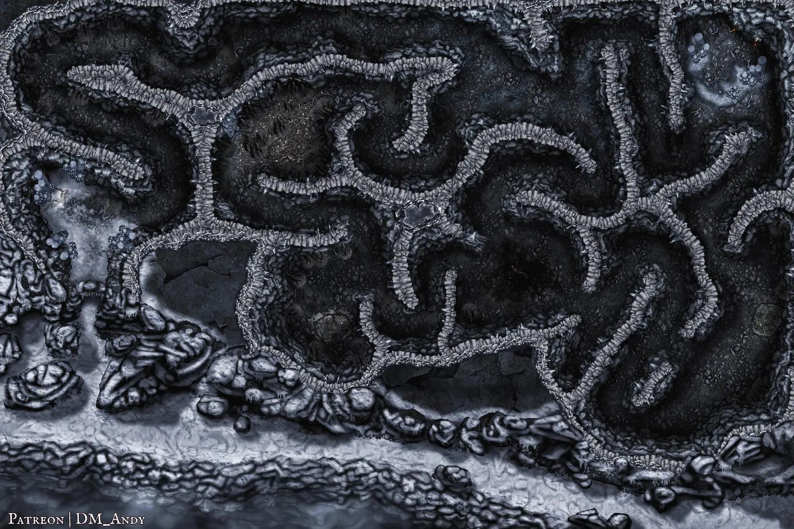
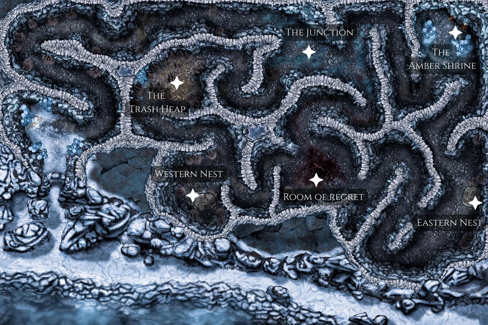
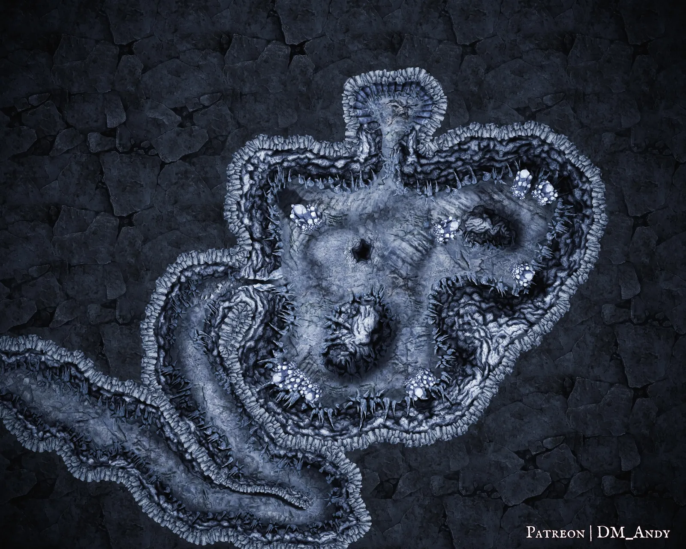
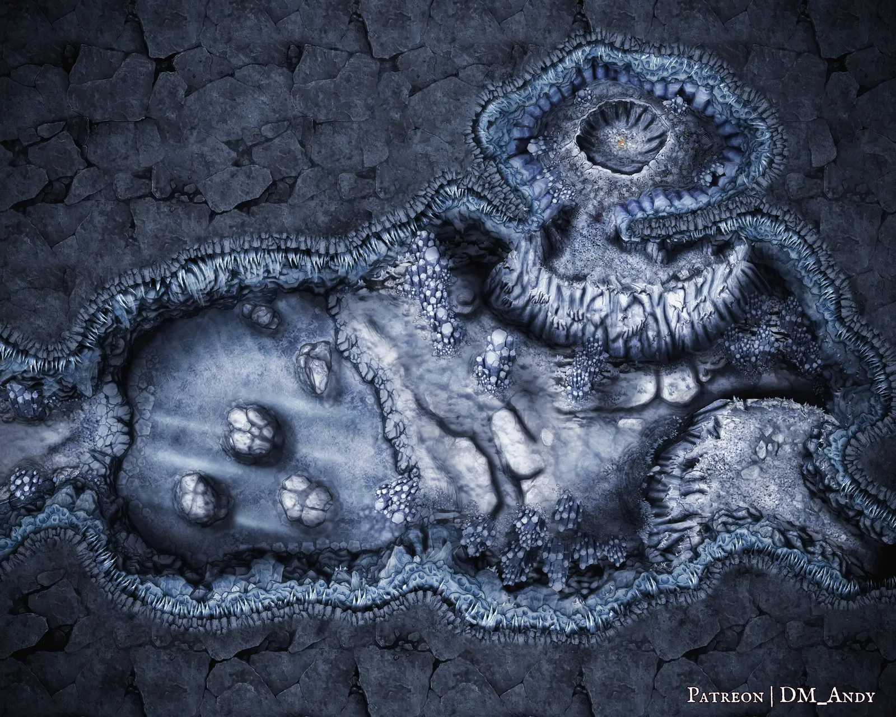
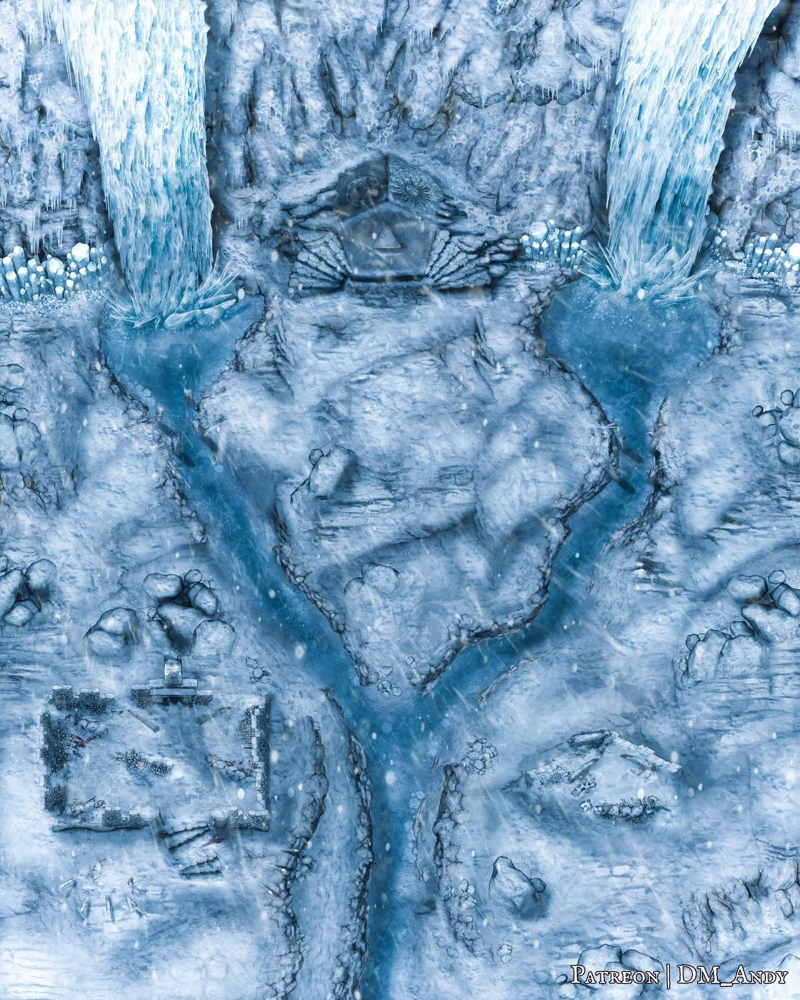
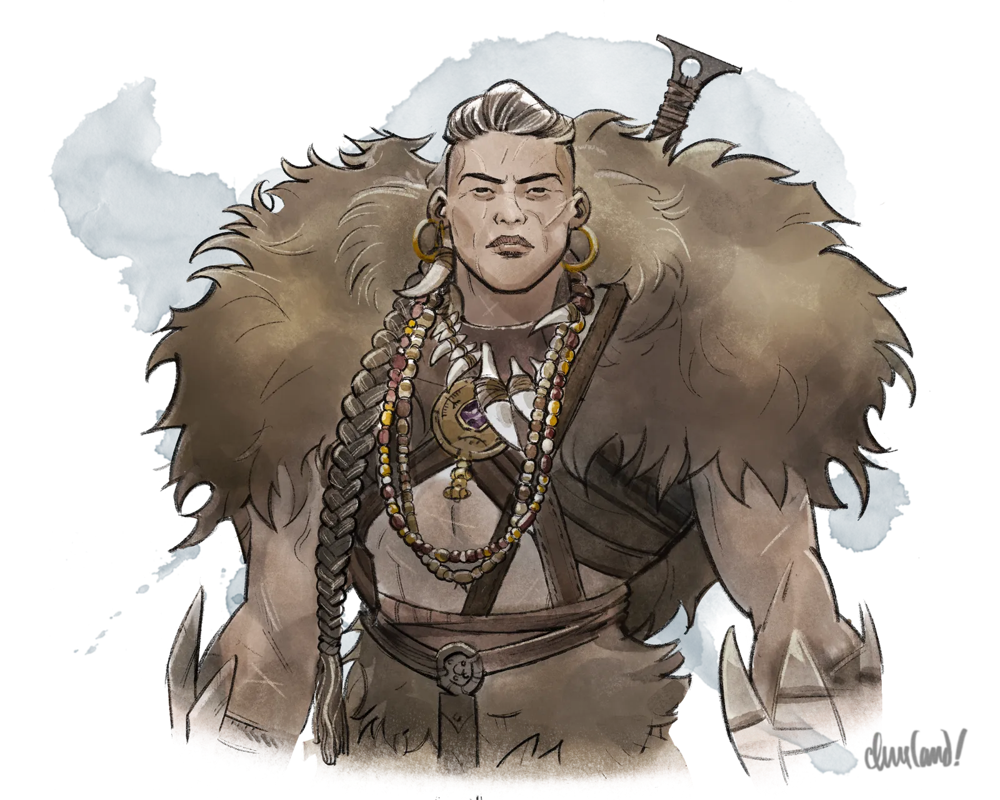
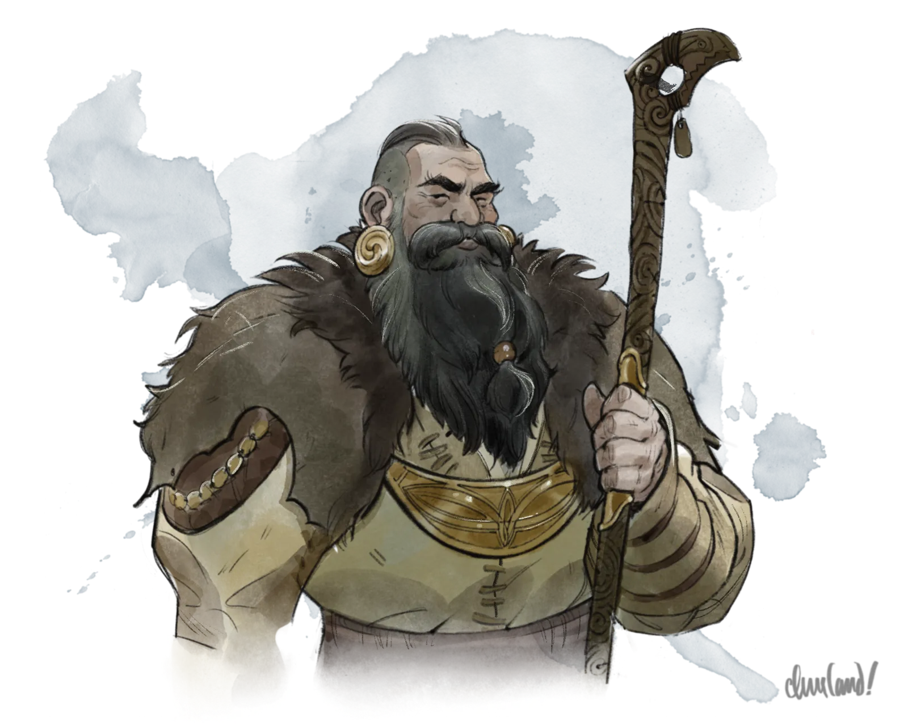
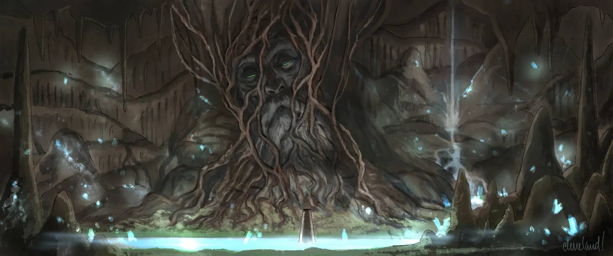

_Uma aventura para cinco personagens de 8º nível._
Neste arco, depois de descobrirem que o elfo do crepúsculo Kasimir Velikov conhece a localização do Templo Âmbar ao acenderem o farol de Argynvost em Arco Q - Um Farol Reluzente, os jogadores devem recrutar Kasimir para sua causa e atravessar o traiçoeiro Passo de Tsolenka enquanto sobem rumo ao pico nevado do Monte Ghakis. Conforme a jornada se desenrola, porém, um Strahd enfurecido—agora decidido a transformar os jogadores em vampiros servos—invoca nevascas, avalanches e monstros para testar a determinação deles e exaurir suas forças.
O único alívio dos jogadores vem na forma de Soldav, o refúgio oculto do Povo da Montanha. Ali, os jogadores descobrem que Strahd profanou os três Fanes do vale—o Fane da Floresta em Yester Hill, o Fane do Pântano em Berez e o Fane da Montanha perto de Velho Triturador de Ossos—e, ao fazê-lo, reivindicou o poder deles como seu.
Se sobreviverem ao trecho final de sua jornada, os jogadores emergem diante da grande fachada do Templo Âmbar. A cada noite em que descansam, contudo, Strahd lhes faz uma visita pessoal, na esperança de drenar o sangue de uma vítima e aproximá-la do abismo do vampirismo. Poderão os jogadores deter os planos sombrios de Strahd—ou um deles se verá eternamente acorrentado ao túmulo?
Farol de Proteção
Não se esqueça: enquanto o farol de Argynvost estiver aceso, quaisquer NPCs que se oponham a Strahd também recebem um bônus de +1 na CA e nos testes de resistência.
R1. Recrutando Kasimir
Ao saberem pelo espírito de Sir Godfrey em Arco Q - Um Farol Reluzente que o elfo do crepúsculo Kasimir conhece a localização do Templo Âmbar, os jogadores podem encontrar Kasimir em seu casebre no acampamento Vistani de Vallaki, que é como descrito em Arco E - A Vistana Desaparecida.
O Grimório de Kasimir
O grimório de Kasimir contém em grande parte as magias descritas em N9a. Casebre de Kasimir (p. 121). Contudo, remova metamorfose (polymorph), dissipar magia (counterspell), sugestão (suggestion), indetectável (nondetection) e voo (fly) das magias de seu grimório.
Quando os jogadores chegam pela primeira vez, Kasimir está tomando chá e lendo um livro intitulado The Crags of Mount Ghakis, de Finderway Ulbrek. Se os jogadores baterem à porta, Kasimir marca a página, deposita o livro em sua esteira de meditação junto à lareira e vai recebê-los.
Quando ele atende à porta, os jogadores podem observar que o olho roxo e os cortes de Kasimir parecem ter sarado, embora um jogador com Sabedoria (Intuição) passiva 15 ou mais note que Kasimir parece estar num humor sombrio e melancólico. Apesar de seu estado de espírito anterior, contudo, Kasimir se anima com a chegada dos jogadores e os convida calorosamente a entrar, prometendo preparar uma nova leva de chá enquanto conversam.
O Humor de Kasimir
Se perguntado sobre seu humor, Kasimir alega que apenas tem tido visões ruins durante suas meditações ultimamente. "Memórias antigas", acrescenta, com uma leve careta. Isso é mentira; um jogador que passe num teste de Sabedoria (Intuição) CD 10 percebe que Kasimir pareceu hesitar por um instante antes de responder. Na verdade, Kasimir está deprimido porque teme jamais conquistar as encostas do Monte Ghakis e alcançar o Templo Âmbar.
Kasimir, Patrina e o Templo Âmbar
Há mais de quatrocentos anos, antes de o Rei Barov von Zarovich II—pai de Strahd—e Rahadin invadirem e esmagarem o principado élfico-crepuscular de Othrondil, Kasimir era escriba na corte do príncipe elfo do crepúsculo Erevan Löwenhart, seu tio. A irmã mais velha de Kasimir, Patrina, era a maga da corte de Erevan e a tutora arcana de Kasimir.
Quando os exércitos do Rei Barov varreram a Floresta do Crepúsculo e subjugaram o povo élfico-crepuscular, Kasimir e Patrina perderam seus lares, suas posições e muitos membros de sua família, inclusive o tio. Embora Kasimir instasse a irmã a se reconciliar com o destino, a fúria de Patrina fervia em fogo brando. Quando Barov morreu e foi sucedido pelo filho, Strahd, Patrina juntou-se à rebelião contra ele, decidida a expulsar os invasores de sua terra natal.
Strahd, porém, esmagou a rebelião élfico-crepuscular de modo brutal e veloz, deixando os sobreviventes aos Vistani como descrito em Kasimir Velikov (p. 232). Kasimir tentou novamente consolar uma Patrina desesperançada, mas em vão.
Depois que os irmãos chegaram ao vale, não demorou muito para que Patrina captasse sussurros sobre o Templo Âmbar—um lugar de magia antiga e de grande, porém terrível, poder. Incapaz de alcançar o Templo por causa da proteção da Ordem do Dragão Prateado, contudo, ela aguardou seu momento e manteve a existência do Templo em segredo de Kasimir, com a fúria em brasas, mas jamais apagada.
Foi, ironicamente, a conquista da Barovia por Strahd e a chacina da Ordem do Dragão Prateado que finalmente libertaram Patrina para investigar o Templo Âmbar, vários meses depois que os elfos do crepúsculo haviam chegado ao vale. Após escapulir em segredo do acampamento élfico-crepuscular, ela enfrentou as encostas do Monte Ghakis e abriu caminho lutando até a grande fachada do Templo. Ali, tornou-se aprendiz de Exethanter, o espírito de um arquimago que outrora liderou a ordem secreta de magos que ergueu o Templo.
Patrina passou dois anos sob a tutela de Exethanter, devorando cada grama de conhecimento e poder que ele pudesse lhe legar. A velocidade de sua educação, no entanto, mostrou-se insuficiente; determinada a obter poder bastante para devastar o reino de Strahd, Patrina voltou-se para as artes sombrias, estudando tomos proibidos guardados a sete chaves na biblioteca de Exethanter, contra as ordens expressas dele. Não demorou para que começasse a se comunicar com o vestígio de Tenebrous que habitava a câmara de âmbar do Templo, em busca dos segredos da lichdade.
Quando Exethanter descobriu a traição de Patrina, tentou bani-la do Templo—mas ela havia se tornado muito mais poderosa do que ele. Patrina aprisionou o espírito dele em âmbar, selando-o enquanto ela vivesse. Com seu mentor agora encarcerado, Patrina pôs-se a refazer o Templo Âmbar à sua própria imagem, erguendo os crânios de magos há muito mortos como caveiras flamejantes vinculadas a seu serviço e submetendo à sua vontade os golens de âmbar que habitavam seus salões.
Enquanto a construção do Castelo Ravenloft se concluía a leste, Patrina viu-se atraída por uma nova visão: uma em que ela, e não Strahd, governaria o império que ele havia reclamado, com os elfos do crepúsculo exaltados acima de todos os outros em reparação pelo sofrimento que haviam suportado. Ela urdiu um plano astuto: atrairia o próprio Strahd ao Templo, enchendo sua mente humana e envelhecida de promessas de imortalidade, e lhe ofereceria a oportunidade de buscar o dom sombrio da lichdade ao lado dela. Em troca, Strahd a faria sua rainha, partilhando com ela o poder que havia conquistado em nome do pai.
Embora Patrina prometesse treiná-lo nos caminhos da magia, afiando suas habilidades até que os rituais necessários estivessem ao seu alcance, ela—como Exethanter certa vez fizera com ela—jamais concluiria de fato a educação dele. Em vez disso, em escassos trinta anos—ou até menos, com uma pequena "ajuda"—Strahd von Zarovich morreria em sua cama, um humano velho e ressequido. Patrina, uma elfa do crepúsculo sem idade e ainda no auge da vida, reivindicaria o trono dele como seu—e assim começaria uma nova dinastia.
Para deleite de Patrina, Strahd pareceu intrigado com sua oferta e, após uma série de lições nas artes mágicas, por fim a acompanhou até o Templo Âmbar. Enquanto ele se maravilhava com o poder ali contido, ela ganhou confiança de que seu plano estava ao alcance da mão. Sob o olhar atento dela, Strahd comungou com o vestígio de Tenebrous, contemplando ali pela primeira vez o dom sombrio da lichdade. Ao deixarem o Templo, Patrina lhe assegurou que, sob sua tutela, ele um dia se tornaria poderoso o bastante para reivindicar o dom sombrio de Tenebrous como seu.
As lições prosseguiram até o dia do casamento de Sergei, quando Strahd banhou o Castelo Ravenloft em sangue e ascendeu da morte como vampiro. Lutando para traçar um caminho adiante, Patrina retornou por fim ao acampamento élfico-crepuscular perto de Vallaki. Ali, reencontrou Kasimir, embora se recusasse teimosamente a falar de seu paradeiro nos anos anteriores.
Percebendo que seu plano de enredar Strahd com promessas de imortalidade não estava mais ao seu alcance, Patrina concebeu um último plano desesperado: retornaria à corte de Strahd e buscaria seduzi-lo abertamente. Ao fazê-lo, perseguiria em segredo o caminho da lichdade, valendo-se de seu poderio mágico para se defender das investidas de Strahd até que pudesse forjar um filactério e uma poção de transformação. Uma vez conquistada a confiança dele e obtidas as chaves de suas defesas, ela revelaria sua verdadeira forma morta-viva—e o destruiria.
Rangendo os dentes ante a necessidade de reverência diante da ascensão sombria de Strahd, Patrina retornou ao Castelo Ravenloft, reconquistando aos poucos o favor dele. Enquanto isso, prosseguia com suas pesquisas em segredo, num laboratório subterrâneo sob seu chalé no acampamento élfico-crepuscular. Quando Strahd enviou a Brightblade de Sergei ao arquimago Khazan para ser destruída, Patrina enfeitiçou o aprendiz de Khazan e ordenou que roubasse a arma para seus próprios fins. Embora o aprendiz só tenha conseguido roubar o punho, Patrina o transformou no filactério de uma lich e o selou num semiplano conjurado dentro do sarcófago de âmbar do vestígio de Vampyr. (Do aprendiz, Patrina se livrou rapidamente, deixando o cadáver para os lobos a fim de garantir que notícias de sua traição jamais chegassem aos ouvidos de Strahd.)
Contudo, o plano final de Patrina jamais se concretizou. Quando Kasimir soube por um conhecido Vistani que Patrina não apenas se tornara consorte de Strahd, mas de fato servira como sua tutora arcana por quase um ano antes disso, ele se enfureceu com a aparente traição. Invadiu o chalé dela, decidido a confrontá-la—e encontrou, pela negligência arrogante de Patrina, a entrada oculta para seu laboratório arcano abaixo. Embora Patrina jamais tivesse imaginado que seus companheiros elfos do crepúsculo pudessem vasculhar sua casa, Kasimir agora vagava entre os apetrechos de magia negra dela com um horror crescente.
Foi no andar mais profundo do covil de Patrina que Kasimir encontrou os restos de seu ato mais vil: os cadáveres de sete vallakianos sequestrados e torturados, cujas entranhas estripadas haviam sido usadas para preparar a poção de transformação. Foi ali que Kasimir encontrou as anotações de Patrina, escritas num cifrado real que apenas os dois ainda lembravam, e que falavam da verdadeira natureza da poção. E foi ali que Kasimir encontrou a própria Patrina, a poucos minutos de beber a poção e ascender à lichdade.
Horrorizado com o que havia descoberto, Kasimir exigiu que Patrina se entregasse e enfrentasse a justiça. Patrina fingiu contrição—mas, quando atacou Kasimir com magia negra, Kasimir revidou, tecendo as mesmas magias que ela lhe ensinara tempos atrás.
Patrina era de longe a maga mais poderosa—mas, com boa parte de sua magia empenhada na poção de transformação, foi Kasimir quem levou vantagem. Quando a batalha terminou, o laboratório de Patrina jazia em ruínas—e a própria Patrina jazia morta no chão.
A alma de Patrina, no entanto, sobreviveu. Em vez de cair no ciclo baroviano de reencarnação, seu espírito foi atraído para o filactério que ela havia forjado semanas antes, selado dentro do punho quebrado da brightblade de Sergei. Sem a poção de transformação, porém, ela não conseguiu manifestar um corpo, permanecendo presa no semiplano que havia forjado.
Kasimir desabou o laboratório de Patrina e sepultou os vallakianos que ela havia assassinado. Determinado a proteger o legado outrora impecável da irmã, Kasimir contou ao seu povo uma meia-verdade: que ela se tornara consorte de Strahd e que ele a matara para impedi-la de se tornar uma vampira. Quando a história de Kasimir chegou aos ouvidos de Strahd, contudo, Strahd não teve escolha senão punir esse elfo do crepúsculo que alegava tê-lo desafiado—e enviou Rahadin para executar a chacina de toda mulher e criança élfico-crepuscular do acampamento que o havia desafiado.
Séculos se passaram. Strahd, ansiando por libertar-se das Névoas, retornou vez após vez ao Templo Âmbar—e logo descobriu a presença remanescente de Exethanter em sua antiga biblioteca. Embora não tenha libertado Exethanter das amarras de Patrina, Strahd invocou seu espírito muitas vezes para discutir a natureza do aprisionamento da Barovia e os meios pelos quais a terra poderia ser libertada. Ainda que a princípio se mostrasse relutante em auxiliar um portador do dom sombrio de Vampyr, Exethanter logo concordou em ajudar na pesquisa "teórica" de Strahd—tanto porque achava o trabalho fascinante quanto porque estava desesperado para escapar da estase em que Patrina o deixara, ainda que por poucos dias de cada vez.
Mais de quatrocentos anos após sua morte, Patrina sentiu a Grande Conjunção se aproximar de seu lugar no Templo Âmbar. Tendo escutado às escondidas as conversas de Strahd com Exethanter, suspeitava fortemente que sua melhor chance de escapar da prisão se aproximava—assim como uma oportunidade de ouro para reclamar o poder de Strahd sobre os Fanes enquanto a atenção dele estivesse noutro lugar.
Patrina enviou a Kasimir um sonho: uma visão do Templo Âmbar, uma promessa de vingança contra Strahd e um caminho até o sarcófago de âmbar onde supostamente jazia a salvação. Enviou-lhe sussurros de contrição e vergonha, como descrito em Kasimir Velikov (p. 232), e jurou que desejava apenas vingar as mortes de suas irmãs, tombadas pelas mãos traiçoeiras de Rahadin. Como prova de sua boa vontade, Patrina lhe falou de um estojo de mapas, escondido nas ruínas de Argynvostholt, cujo conteúdo o levaria à localização há muito perdida do Templo.
Embora Kasimir continuasse desconfiado dos motivos de Patrina, a vingança de Strahd contra a vila de Barovia o perturbou e alarmou. Com o sonho da irmã pesando em sua mente, Kasimir viajou a Argynvostholt, onde encontrou Sir Godfrey Gwilym acorrentado em meio à capela em ruínas do solar.
Sir Godfrey advertiu Kasimir a não se intrometer com o mal do Templo—mas suas palavras caíram em ouvidos surdos. Deixando Sir Godfrey para trás, Kasimir logo localizou o mapa de que Patrina lhe falara. Com as trevas de Strahd se espalhando rapidamente outra vez pelo vale, Kasimir partiu rumo às encostas do Monte Ghakis para alcançar a vingança prometida por Patrina.
A jornada, porém, revelou-se mais do que Kasimir podia suportar. Da primeira vez, uma nevasca desgarrada o obrigou a voltar; da segunda, os vrocks do portão do Passo de Tsolenka o fizeram despencar num banco de neve, dentro de um abismo gelado. Como descrito em Arco E - A Vistana Desaparecida, Kasimir voltou para casa dolorido e envergonhado, desesperado por encontrar um jeito de alcançar um objetivo que se mantinha tentadoramente fora de alcance.
Kasimir tem prazer em bater papo com os jogadores enquanto prepara o chá. Em especial, Kasimir ficou pasmo com o acendimento do farol de Argynvostholt em Arco Q - Um Farol Reluzente, e se fascina ao saber que os jogadores foram responsáveis por seu surgimento. (Com um nó na garganta, Kasimir olha na direção do farol e diz suavemente: "Ao contemplá-lo, senti algo que não sentia havia muito, muito tempo, embora não soubesse dizer exatamente o quê." Se um jogador sugerir "esperança" ou qualquer emoção semelhante como aquilo que Kasimir sentiu, ele faz uma pausa, depois ri baixinho e responde: "Suponho que fosse. Estranho, talvez, que devesse ser um sentimento tão pouco familiar.")
A Gratidão de Kasimir
Se ele não encontrou os jogadores desde que os conheceu em Arco E - A Vistana Desaparecida e sabe que Arabelle foi reunida a Luvash, Kasimir lhes agradece pelos esforços. "Lamento não ter podido investigar pessoalmente a história do anel", acrescenta. "Ele acabou sendo útil para encontrá-la?" Se Kasimir não souber do destino de Arabelle, ele pergunta aos jogadores no que deram seus esforços para encontrá-la. (Kasimir faz essas perguntas não por bisbilhotice, mas por um senso de parentesco com os Vistani e um interesse genuíno pela segurança de Arabelle.)
Se Lady Fiona Wachter se tornou a burgomestre de Vallaki após Arco F - O Desejo de Lady Wachter ou Arco G - Os Irmãos Strazni, Kasimir comenta, no decorrer da conversa, que está grato por a nova liderança da cidade ter aberto novamente seus portões aos Vistani e aos elfos do crepúsculo. "Ainda assim", medita com tristeza, "faz muitos anos desde que visitei Vallaki pela última vez. Imagino que nenhum dos amigos que um dia tive lá ainda esteja vivo hoje. Talvez até seus filhos e netos já tenham partido."
Se algum jogador lhe perguntar sobre o Templo Âmbar ou sobre sua visita a Argynvostholt, porém, um jogador com Sabedoria (Intuição) passiva 10 ou mais nota que Kasimir enrijece imediatamente. Ele está disposto a compartilhar as seguintes informações:
- Se perguntado sobre Argynvostholt. Kasimir alega que recentemente se viu nas cercanias de Argynvostholt enquanto ajudava na busca por Arabelle. Contudo, refugiou-se no solar pelos motivos descritos em Q11. Depósito de Vinho (p. 133). "Lembro-me de ter conversado com um dos cavaleiros de lá para perguntar se a tinha visto", diz ele, franzindo a testa. "Fazia algum tempo desde meu último encontro com a Ordem do Dragão Prateado, então nossa conversa pode ter enveredado por outros caminhos. Não consigo recordar, porém, quais outros assuntos específicos discutimos." (Isso é mentira. Um jogador que passe num teste de Sabedoria (Intuição) CD 10 percebe que Kasimir está suando levemente, com os olhos volta e meia desviando para o lado enquanto fala.)
- Se perguntado sobre a existência do Templo Âmbar. Kasimir faz uma pausa fingindo refletir, depois conta que o Templo Âmbar já foi tema de boatos, segundo a lenda, como guardião de "segredos escondidos em âmbar". "Ninguém jamais o viu, porém", acrescenta com uma risada irônica. "Algumas lendas são apenas lendas, imagino." (Isso é mentira. Um jogador que passe num teste de Sabedoria (Intuição) CD 10 percebe que a voz de Kasimir treme ligeiramente enquanto fala, e que ele parece evitar contato visual.)
- Se perguntado sobre seu interesse no Templo Âmbar. Kasimir dá uma risadinha e pergunta se os jogadores adquiriram interesse por "velhas lendas empoeiradas". "Receio não fazer ideia do que estão falando", insiste. "Não creio ter ouvido ninguém mencionar esse mito em particular há séculos." (Isso é mentira. Um jogador que passe num teste de Sabedoria (Intuição) CD 10 percebe que a risadinha de Kasimir é mais nervosa que divertida, e que suas mãos tremem enquanto fala.)
A Relutância de Kasimir
Kasimir reluta em compartilhar seu conhecimento ou interesse pelo Templo Âmbar pelos seguintes motivos:
- Medo de Julgamento. O Templo Âmbar, para quem conhece a lenda de sua existência, costuma ser associado a magia negra e poderes malignos. Kasimir prefere manter seu interesse pelo Templo em segredo para evitar ser rotulado de mago das trevas—ou, pior, atrair a atenção de indivíduos desonestos que possam cobiçar seu poder para seus próprios desígnios sombrios.
- Medo de Manchar o Legado de Patrina. Quando Kasimir matou Patrina há quatro séculos, ele ocultou intencionalmente a verdade sobre sua queda em desgraça, a fim de preservar seu legado como líder intelectual dos elfos do crepúsculo e lutadora indomável por sua liberdade. Agora, Kasimir não ousa revelar a verdade sobre a descida dela à magia negra, nem suas ligações com o Templo Âmbar, com medo de manchar esse legado para sempre.
- Medo da Vergonha. Kasimir acredita que sua mentira levou à morte de "toda esposa, mãe, irmã e filha" de seu povo. Embora retirasse a mentira num piscar de olhos se isso trouxesse de volta os que perderam, ele sabe que isso é impossível—e, inconscientemente, acredita que expor a mentira agora tornaria o genocídio de seu povo por Rahadin "tudo em vão". Tal revelação, crê ele inconscientemente, tornaria essas mortes sem sentido—e o confirmaria como a verdadeira causa da chacina de seu povo.
- Medo da Culpa. Embora os três primeiros medos sejam os principais responsáveis por sua relutância em falar a verdade, Kasimir também acredita que a tarefa que Patrina lhe deu é um fardo só seu. Ainda que saiba que as encostas do Monte Ghakis são perigosas—e o próprio Templo, ainda mais—Kasimir não está disposto a pesar mais mortes em sua consciência permitindo ou convidando os jogadores a acompanhá-lo.
Enquanto os jogadores trabalham para convencer Kasimir a revelar a verdade, coloque secretamente um dado de seis faces (dado de persuasão) sobre a mesa, fora da vista deles. Defina o valor inicial do dado assim:
- Se os jogadores já contaram a Kasimir que Sir Godfrey lhes falou de seu interesse pelo Templo Âmbar, comece o dado em três.
- Caso contrário, comece o dado em um.
Aumente o dado da seguinte forma:
- Aumente o valor do dado em três se os jogadores apontarem os ferimentos e o congelamento de Kasimir de Arco E - A Vistana Desaparecida e observarem que o Templo Âmbar fica no Monte Ghakis. (Se isso não fizer o dado de persuasão chegar a seis, Kasimir gagueja que apenas investigava a montanha em busca de componentes mágicos, mas foi surpreendido por uma nevasca repentina e "tolamente caiu de um penhasco ao tentar atravessar a tempestade". Isso é uma mentira óbvia. Se os jogadores em seguida lembrarem que a história de Kasimir contradiz a versão anterior dele em Arco E - A Vistana Desaparecida (ou seja, que ele estava atravessando o Monte Ghakis em busca de algo de significado pessoal, mas caiu quando o banco de neve congelado sob seus pés cedeu ao seu peso), aumente o dado de persuasão para seis).
- Aumente o valor do dado em dois se os jogadores contarem que Madam Eva profetizou que o Templo Âmbar guarda uma arma necessária para derrotar Strahd. Se os jogadores mencionarem que a arma é uma "espada de luz do sol", aumente o valor do dado em três em vez disso, e permita que os jogadores façam todos os testes de Carisma (Persuasão) subsequentes para convencer Kasimir com vantagem. (Se isso não fizer o dado de persuasão chegar a seis, Kasimir balbucia que tal arma seria "uma dádiva incrível" se encontrada, mas que Strahd é poderoso demais para ser derrotado por uma única arma, e que até a visão de Madam Eva às vezes pode estar turva. Isso é uma evasiva óbvia. Se os jogadores em seguida mencionarem o assalto ao Castelo Ravenloft e suas múltiplas vitórias sobre as noivas e/ou o camareiro de Strahd, aumente o dado de persuasão para seis.)
- Aumente o valor do dado em dois se os jogadores mencionarem (pela primeira vez) que Sir Godfrey lhes falou do interesse de Kasimir pelo Templo Âmbar.
- Aumente o valor do dado em dois se os jogadores mencionarem o acendimento do farol de Argynvostholt, suplicarem a Kasimir que siga aquele sentimento de esperança e passarem num teste de Carisma (Persuasão) CD 10.
- Aumente o valor do dado em um se os jogadores insistirem que precisam encontrar o Templo Âmbar por um propósito importante e passarem num teste de Carisma (Persuasão) CD 15, feito com vantagem se Kasimir souber que os jogadores reuniram Arabelle à sua família.
- Caso contrário, aumente o valor do dado em três se os jogadores apresentarem qualquer outro argumento forte, em dois se apresentarem qualquer outro argumento decente e passarem num teste de Carisma (Persuasão, Enganação ou Intimidação) CD 10, ou apresentarem um argumento razoável e passarem num teste de Carisma (Persuasão, Enganação ou Intimidação) CD 15.
Cada vez que o valor do dado de persuasão aumenta, um jogador com Sabedoria (Intuição) passiva 10 ou mais nota que Kasimir hesita mais a cada resposta, com seus protestos ficando mais fracos à medida que ele parece debater mais seriamente como responder. (Os jogadores podem facilmente deduzir que seus esforços estão desgastando a vontade de Kasimir, e que ele pode ceder se for pressionado mais.)
Kasimir está disposto a revelar seu verdadeiro interesse pelo Templo Âmbar assim que o dado de persuasão chegar a seis. Quando isso ocorre, ele pode compartilhar as seguintes informações, a pedido dos jogadores:
- Ele vem procurando o Templo Âmbar nas últimas semanas, na esperança de encontrar ali uma arma capaz de derrotar Strahd. (Ele não sabe qual é a arma, mas sabe que foi escondida no Templo Âmbar.)
- Ele visitou Argynvostholt recentemente na esperança de obter um mapa da localização do Templo Âmbar, que recuperou com sucesso de um velho estojo de mapas há muito esquecido em meio às ruínas. (Desde então, ele memorizou o mapa e o destruiu, por medo de permitir que outros encontrem o Templo.)
- Desde que obteve o mapa, tentou a subida do Monte Ghakis duas vezes. Da primeira, uma nevasca desgarrada o obrigou a voltar. Da segunda, um par de gárgulas demoníacas no portão do Passo de Tsolenka o fez despencar num banco de neve, dentro de um abismo gelado. (Essa queda ocorreu dois dias antes de os jogadores encontrarem Kasimir em Arco E - A Vistana Desaparecida.)
"A arma que procuro foi escondida dentro de um sarcófago de âmbar", diz Kasimir, "numa câmara de âmbar oculta nas profundezas do coração do templo. Até agora, porém, desesperei-me até mesmo por alcançar os portões do templo—que dirá atravessar os horrores que possam habitar seu interior." (Kasimir não sabe qual é a arma nem qual sua aparência; apenas que é mortal para Strahd.)
Se os jogadores perguntarem a Kasimir como ele soube da arma ou quem a escondeu, Kasimir pode compartilhar as seguintes informações:
- A arma foi escondida há quatro séculos por sua irmã, Patrina Velikovna, que a ocultou num lugar onde "Strahd temeria pisar". (Kasimir não sabe o que isso significa, mas não acredita que se refira ao Templo Âmbar em si—ele sente, antes, que se refere a algum lugar dentro do Templo ou acessível a partir dele. "Segundo Patrina", observa Kasimir, "o próprio Templo Âmbar era um lugar que Strahd conhecia bem.")
- Na esteira da punição de Strahd contra a rebelde vila de Barovia, o espírito de Patrina alcançou Kasimir em sonhos e lhe falou da arma, advertindo-o de que, sem ela, toda a Barovia poderia perecer sob a sombra de Strahd.
O Que Patrina Sabia
Se os jogadores perguntarem a Kasimir como Patrina soube da arma, como conheceu o Templo Âmbar ou por que escondeu a arma lá, ou perguntarem a Kasimir por que ele mentiu sobre seu interesse pelo Templo Âmbar, Kasimir hesita e então diz aos jogadores que responderá às perguntas assim que partirem em viagem. É, acrescenta, uma história "muito longa".
Com seu segredo revelado, Kasimir tem prazer em guiar os jogadores até o Templo Âmbar, se solicitado. (Se os jogadores não pedirem, ele pergunta se eles estariam dispostos a acompanhá-lo até lá, dado que parecem partilhar um interesse mútuo em investigá-lo.)
Se Kasimir e os jogadores concordarem em viajar juntos ao Templo Âmbar, Kasimir os aconselha a obter roupas para clima frio em Vallaki e a se abastecer de quaisquer suprimentos de que possam precisar para a jornada. "É bem possível que fiquemos fora por vários dias", diz ele, "e não posso dizer que trevas encontraremos dentro do próprio Templo. Aconselho que estejam preparados para tudo." Ele instrui os jogadores a avisá-lo quando estiverem prontos para partir, observando que o grupo sairá ao raiar do dia na manhã seguinte.
R2. A Descida do Tirano
Enquanto os jogadores seguem do acampamento Vistani para Vallaki ou para a Velha Estrada de Svalich, eles passam por uma encruzilhada arborizada. Leia:
A colina gramada que abriga a aldeia élfico-crepuscular e o acampamento Vistani recua ao longe, à medida que o dossel retorcido do Bosque de Svalich a engole de novo. A trilha de caçadores, enlameada e desbotada, segue para o norte, forçando passagem pela folhagem densa.
Quando a linha de árvores ao norte surge à vista, a trilha de caçadores se bifurca: o ramo leste serpenteia mais para dentro do bosque, enquanto o ramo norte se curva rumo ao fio pálido da Velha Estrada de Svalich ao longe. O ar aqui é frio e silencioso, com nada além do farfalhar das folhas para preencher o silêncio.
R2a. A Vingança do Barão
Se o Barão Vargas Vallakovich estiver vivo, Lady Fiona Wachter for a atual burgomestre de Vallaki e os jogadores não tiverem feito esforço algum para ocultar sua ida ao acampamento Vistani, um Vargas embriagado e seis guardas tentam encurralar os jogadores na estrada. Acrescente:
A quietude é rompida pelo estalar de folhiço úmido sob botas. Sete figuras manchadas de lama emergem da trilha leste, os rostos sombrios e pétreos. Seis carregam lanças e bestas, os peitos adornados pela familiar cota de malha enferrujada da guarda de Vallaki. O sétimo vocês reconhecem no ato: o Barão Vargas Vallakovich.
O Barão não parece ter suportado bem sua aposentadoria. Seu cabelo engordurado está desgrenhado, e suas roupas, sujas e maltratadas. Suas papadas só ficaram mais frouxas, e olheiras fundas e inchadas marcam a pele sob seus olhos, logo acima da barba por fazer, áspera e malcuidada, que lhe cobre o maxilar e o queixo. Ele veste um peitoral mal ajustado, com uma bainha sem polimento presa ao quadril. Mesmo à distância, ele fede a suor e vinho azedo.
"Aí estão eles", rosna Vargas, os olhos injetados tremulando. "Os vermes traiçoeiros."
A Vingança de Vargas
Na esteira da ascensão de Lady Wachter ao poder, Vargas Vallakovich vem fervendo de raiva silenciosa contra os responsáveis por sua deposição. Embora não tivesse pensado em culpar os jogadores pela ascensão de Lady Wachter, isso mudou recentemente, quando dois de seus guardas ainda leais souberam, por um Nikolai e um Karl Wachter bêbados, que os jogadores se encontraram com Lady Wachter pouco antes da morte de Izek.
Para saciar sua sede de vingança, Vargas ordenou que um de seus guardas leais lhe reportasse quando os jogadores fossem avistados se aproximando da cidade. Ao receber o relato do guarda, Vargas reuniu meia dúzia de guardas leais e partiu para o acampamento Vistani a fim de "punir" os jogadores por sua traição. (Os guardas, que antes recebiam preferências e favores durante o governo de Vargas, azedaram com a nova burgomestre de Vallaki, que integrou seus próprios apoiadores à guarda da cidade e acabou com boa parte da corrupção de Vargas.)
Infelizmente, nenhum dos guardas de Vargas sabia direito como encontrar o acampamento Vistani. Como resultado, o grupo se perdeu bem depressa, rodando várias vezes pelas trilhas de caça enlameadas do Bosque de Svalich antes de finalmente encontrar o grupo.
Vargas, que está muito bêbado, acredita que os jogadores não poderiam ter matado Izek sem trapaça e artimanha. Por isso, está convencido de que são um bando de fraudes covardes, e de que quaisquer histórias sobre seu heroísmo ou seus feitos são, na melhor das hipóteses, exageradas—e, na pior, mentiras deslavadas.
Vargas está decidido a punir e humilhar os jogadores por sua traição, bem como pelo "assassinato" de Izek Strazni. Conforme a conversa se desenrola, ele esbraveja que os jogadores "se aliaram ao Diabo" e "trouxeram a ruína ao bom povo de Vallaki". Acusa livremente os jogadores de serem covardes, envenenadores e usurpadores, além de praticantes das artes sombrias. ("Os Wachter sempre foram conhecidos por conviver com vampiros e demônios", escarnece. "Suponho que não seja surpresa que se rebaixassem a imundícies como vocês.")
Conforme a conversa prossegue, Vargas apresenta aos jogadores um ultimato: "Deponham suas armas e seus instrumentos de bruxaria", cospe ele, arrastando as palavras de bêbado, "e enfrentem a justiça do Barão."
Os jogadores podem convencer Vargas e seus guardas a recuar fazendo uma ameaça convincente e passando num teste de Carisma (Intimidação) CD 15, ou apresentando um bom argumento e passando num teste de Carisma (Persuasão) CD 20. Vargas (use as estatísticas de um nobre envenenado) e os guardas atacam em caso de falha, ou se forem provocados ou atacados.
R2b. O Senhor da Barovia
O Tirano
No início deste arco, a persona de Strahd muda de Cavalheiro para Tirano. Veja Strahd von Zarovich para mais informações sobre como interpretar o Tirano.
A Descida de Strahd
Na contagem de iniciativa 10 da primeira rodada de combate, ou logo depois de os jogadores convencerem Vargas e seus guardas a recuar, Strahd von Zarovich desce sobre a encruzilhada. (Se os jogadores não encontrarem Vargas em R2a. A Vingança do Barão, Strahd chega imediatamente quando os jogadores atingem a encruzilhada.) Leia:
Um trovão ribomba ao longe, e o céu acima começa a se revolver. Nuvens cinzentas escurecem até um negro oleoso, e um vento estridente uiva por entre as árvores.
Dê aos jogadores um momento para reagir. Depois continue:
Com um movimento rápido e curvo, uma das nuvens mais baixas e mais negras começa a descer em direção ao solo. Ao despencar rumo à terra, porém, fica claro que não é nuvem alguma, mas um enxame de milhares de morcegos que chiam e guincham.
Dê aos jogadores mais um momento para reagir. Então, se os jogadores estavam lutando contra Vargas e seus guardas, acrescente:
O enxame desaba sobre o Barão e seus guardas restantes, as garras e os dentes minúsculos dos morcegos mordendo, rasgando, dilacerando. Gritos aterrorizados e agonizantes ecoam pelo ar enquanto a nuvem negra se tinge parcialmente de vermelho, os vallakianos moribundos manchando as presas do enxame de um escarlate sanguíneo. Em segundos, nada além de ossos e alguns farrapos de tecido jaz sobre a terra ensanguentada
Como alternativa, se os jogadores convenceram Vargas e seus guardas a recuar, leia:
O Barão guincha de medo, tropeçando para trás e caindo sentado no chão enquanto os enxames descem sobre a terra lamacenta. Com respirações pesadas e ofegantes, ele e seus guardas dão meia-volta e correm, disparando rumo à linha das árvores o mais rápido que as pernas permitem.
Esteja Vargas presente ou não, e quer ele morra ou fuja, continue:^[Diálogo e cena inspirados em Shadows of the Vampire #4, de Jim Zub, Nelson Daniel, Glauber Matos, Joana Lafuente e Neil Uyetake (IDW Publishing, ago. 2016).]
A nuvem negra se revolve e gira, o enxame lentamente se aglutinando até que uma única silhueta toma forma em suas profundezas. Olhos vermelhos reluzem na escuridão, enquanto as sombras se juntam para formar duas ombreiras reluzentes sobre os ombros da silhueta, cobertas por um espesso manto de pele, uma túnica carmesim suntuosa e uma capa azul-meia-noite que chicoteia selvagemente no vento frenético.
"Claramente, a destreza de Rahadin foi insuficiente para lidar com a insolência de vocês", rosna a silhueta. "Portanto, não os subestimarei mais."
Ele é alto e esquálido, de pele pálida e uma entrada capilar pronunciada em forma de bico. Uma espada longa polida repousa embainhada ao seu lado, com suas garras longas e elegantes pousadas cuidadosamente sobre o punho. Sua expressão sombria parece esculpida na própria pedra e, quando seu olhar carmesim recai sobre vocês, a temperatura da clareira parece despencar a um frio glacial.
"Quando nos vimos pela última vez, eu lhes informei que podia ser um anfitrião gracioso—mas um inimigo muito menos gracioso." Seu franzir corta os cantos da boca como uma faca, e as sobrancelhas escuras cerram-lhe a testa num esgar profundo e gélido. "Parece, no entanto, que minhas palavras não criaram raízes. Permitam-me, então, apresentar-me de novo.
"Eu sou Strahd—senhor da Barovia e mestre de Ravenloft." Suas garras se apertam em torno do punho da espada, e seus olhos ardem como brasas em chamas. "Vocês roubaram itens que não lhes pertencem. Ainda que venham a desejar o contrário, vocês agora têm minha total e completa atenção."
O Desafio de Strahd
Conforme a conversa se desenrola, Strahd adverte os jogadores de que eles "invadiram seu lar, atacaram seus servos e roubaram seus bens", observando com um rosnado que eles "derramaram sangue sobre as próprias pedras do Castelo Ravenloft". "Digam-me", acrescenta, com o punho se fechando em torno do cabo de sua espada longa, "se eu não estaria justificado em derramar sangue hoje para corrigir esse erro."
No fim, Strahd apresenta aos jogadores um ultimato: "Convido-os a nomear uma única razão pela qual eu não deveria pôr fim às suas vidas hoje." Enquanto seu lábio se curva, ele acrescenta: "E, pelo bem de vocês, espero que seja uma boa razão."
Enquanto os jogadores trabalham para convencer Strahd a poupar suas vidas, coloque secretamente um dado de doze faces (o dado de persuasão) sobre a mesa, fora da vista deles. Defina o valor inicial do dado em seis.
Aumente o dado da seguinte forma:
- Aumente o valor do dado em seis se os jogadores se oferecerem para cumprir alguma tarefa ou serviço à escolha de Strahd. (Se o fizerem, mas o valor do dado permanecer abaixo de doze, Strahd manifesta interesse na oferta dos jogadores, mas confessa sua relutância em "deixá-los escapar tão facilmente" e pergunta se, além do juramento, eles têm "quaisquer outras razões dignas de seu tempo". Se o dado de persuasão então chegar a doze, Strahd apresenta seus termos como descrito em Sucesso, abaixo.)
- Aumente o valor do dado em cinco se os jogadores apelarem à necessidade de diversão de Strahd (por exemplo, argumentando que o sofrimento deles vale mais para ele do que suas mortes rápidas) e passarem num teste de Carisma (Persuasão) CD 15, ou em três se o teste falhar.
- Aumente o valor do dado em cinco se os jogadores apontarem que Strahd atraiu intencionalmente os jogadores ao castelo para resgatar Gertruda e passarem num teste de Carisma (Persuasão) CD 15, ou em três se o teste falhar.
- Aumente o valor do dado em três se os jogadores se oferecerem para devolver o que foi roubado e passarem num teste de Carisma (Persuasão) CD 15, ou em um se o teste falhar.
- Aumente o valor do dado em três se os jogadores argumentarem que "eliminaram os fracos" de suas fileiras ao matar servos fracos demais para servi-lo bem (por exemplo, as Noivas) e passarem num teste de Carisma (Persuasão) CD 15, ou em um se o teste falhar.
- Aumente o valor do dado em três se os jogadores apelarem à necessidade de desafio de Strahd (por exemplo, argumentando que um dia poderão se tornar adversários dignos dele) e passarem num teste de Carisma (Persuasão) CD 15, ou em um se o teste falhar.
- Aumente o valor do dado em seis se os jogadores apresentarem qualquer outro argumento excelente e passarem num teste de Carisma (Persuasão) CD 15, ou em três se o teste falhar.
- Aumente o valor do dado em três se os jogadores apresentarem qualquer outro bom argumento e passarem num teste de Carisma (Persuasão) CD 15, ou em um se o teste falhar.
- Mantenha o valor atual do dado se os jogadores se oferecerem para entregar Ireena a Strahd. ("Vocês não podem negociar o que já é meu", observa Strahd. "Posso tomá-la como e quando eu escolher. Ela caminhará livre enquanto isso me agradar, e eu a tomarei quando isso me agradar—com ou sem o consentimento de vocês.")
- Mantenha o valor atual do dado se os jogadores apresentarem qualquer outro argumento que dificilmente convença ou irrite Strahd.
- Diminua o valor do dado em seis se os jogadores se humilharem diante de Strahd e, a convite dele, passarem num teste de Carisma (Atuação) CD 15. ("Se desejam rastejar como mais um verme na minha terra", entoa Strahd friamente, "então rastejem.") (O valor do dado diminui porque Strahd sente repulsa por demonstrações de fraqueza.) Passando ou falhando no teste, Strahd responde, com nojo, que "a linha entre a ingenuidade e a esperança é quase invisível".^[Inspirado em Jorge Rivera-Herrans, Ruthlessness, EPIC: The Ocean Saga.]
- Diminua o valor do dado em quatro se os jogadores argumentarem que sua invasão do Castelo Ravenloft foi para o bem da Barovia, ou de outro modo tentarem apelar ao lado bom de Strahd. ("Vocês se esquecem de quem são", diz Strahd suavemente. "Não sou eu o senhor da Barovia, mestre do Castelo Ravenloft e protetor das Montanhas Balinok? E, ainda assim, vocês alegam ter invadido a minha casa para o benefício dos meus súditos—uma presunção que eu não pedi nem tolero." Os olhos de Strahd se estreitam quando ele acrescenta: "O destino da Barovia cabe a mim decidir, não a vocês."
- Diminua o valor do dado em quatro se os jogadores insultarem Strahd ou de algum modo o ameaçarem. ("Cuidado", diz Strahd suavemente. "Quando se jaz à sombra do lobo, não se pede que ele mostre os dentes—a não ser que se deseje sentir sua mordida.")
- Diminua o valor do dado em quatro se os jogadores apresentarem qualquer outro argumento ruim, ou agirem de qualquer outra forma que provavelmente irrite ou repugne Strahd.
Use a Opinião da Maioria
Para evitar que jogadores individuais tenham sucesso ou fracassem em convencer Strahd apresentando argumentos que os outros jogadores não apoiam, só aumente ou diminua o dado de persuasão por um argumento ou comportamento endossado pela maioria dos jogadores (arredondada para cima). (Se um jogador ficar em silêncio, presuma que ele endossa o argumento ou a conduta do jogador que está agindo.)
Cada vez que o valor do dado de persuasão aumenta, um jogador com Sabedoria (Intuição) passiva 10 ou mais nota que Strahd parece estar considerando os argumentos dos jogadores com mais seriedade. Cada vez que o valor do dado de persuasão diminui, um jogador com Sabedoria (Intuição) passiva 10 ou mais nota a expressão de Strahd endurecendo, com respostas cada vez mais secas e impacientes.
Cada vez que os jogadores apresentam um bom argumento, mas não levam o dado de persuasão a doze, Strahd concede o ponto, mas faz algum comentário indicando que a dívida dos jogadores com ele ainda não foi saldada, ou que a severidade da punição ainda não corresponde ao crime.
Sucesso. Se o dado de persuasão chegar a doze, os jogadores convencem Strahd a poupá-los—por ora. Além de quaisquer outros acertos alcançados durante a conversa, Strahd informa aos jogadores que precisará de novos servos para repor os que perdeu no ataque deles. "Contudo, não aceito fraqueza em minhas fileiras", diz ele. "Para discernir quais dentre vocês são dignos de se juntar à minha corte, vocês devem ser testados—pois só em meio a sangue e fogo o trigo se separa do joio."
Se os jogadores se ofereceram para cumprir uma tarefa à escolha de Strahd, ele saca de seu colete uma adaga cerimonial negra e ornamentada, com o punho cravejado de um par de rubis, e ordena que cada jogador corte a própria carne com ela. "Um símbolo do nosso acordo", diz suavemente, "para que eu possa... acompanhar súditos tão interessantes." Se os jogadores se recusarem, prossiga para Fracasso, abaixo. Do contrário, uma vez que todos os jogadores tenham sangrado sobre a adaga, Strahd a recoloca delicadamente dentro do colete e lhes agradece pela "consideração". (Ele então usa a adaga como foco para sua magia vidência (scrying), como descrito em R3b. O Primeiro Teste do Tirano, abaixo.
Antes de partir, Strahd informa aos jogadores que os "verá ao cair da noite—e todas as noites seguintes". Sua forma então explode num enxame de milhares de morcegos, que sobem ao céu e voam rumo ao Castelo Ravenloft, a leste.
Fracasso. Se o dado de persuasão chegar a um, os jogadores fracassam em convencer Strahd a poupá-los. Strahd exige que os jogadores paguem por seus crimes contra o Castelo Ravenloft sofrendo as mesmas feridas que infligiram ao seu trono. "Eu sou a Terra", entoa ele, "e é meu solene dever fazer justiça. Pelo sangue que derramaram, sangue será derramado de vocês. Pelo ouro que tomaram, ouro lhes será tomado. E pelo fogo que trouxeram à minha casa, fogo será trazido à de vocês." (Se os jogadores perguntarem, Strahd explica que o "sangue" deve ser pago na forma de uma vida, o "ouro" deve ser pago na forma de riquezas ou poder, e o "fogo" deve ser pago na forma de destruição.)
Strahd convida os jogadores a nomear o "sangue", a "riqueza" e o "fogo" que formarão sua punição. (Se os jogadores protestarem contra as penalidades de sangue e fogo de Strahd, ele responde friamente: "Alguém deve morrer hoje. Em minha misericórdia, dei-lhes a decisão final. Escolham—ou eu escolherei por vocês.")^[Inspirado em Jorge Rivera-Herrans, Thunder Bringer (feat. Luke Holt and Armando Julián), EPIC: The Thunder Saga.]
Strahd está disposto a aceitar qualquer uma das penalidades a seguir, bem como qualquer outra de severidade semelhante:
- Sangue. Usando sua espada longa, Strahd executa um membro do grupo (exceto Ireena), um NPC que ajudou os jogadores a invadir Ravenloft, ou um NPC que se beneficiou diretamente da invasão dos jogadores a Ravenloft. (Strahd não aceita o sacrifício de nenhum outro personagem, nem usa qualquer outro meio para executar a vítima escolhida.) Se o sacrifício escolhido não estiver presente na encruzilhada, Strahd o encontra e o executa depois de partir.
- Ouro. Strahd toma do grupo um item mágico não consumível de raridade Rara ou superior, como o Símbolo Sagrado de Ravenkind ou o espadão +2 de Vladimir Horngaard. (Se nenhum membro do grupo estiver usando o item ou sintonizado com ele, é preciso passar num teste de Carisma (Enganação) CD 19 para convencer Strahd de seu valor.)
- Fogo. Strahd destrói a Estalagem Água Azul, a mansão do burgomestre baroviano ou qualquer outro lugar da Barovia que os jogadores chamem de "lar". (Strahd destrói o local escolhido depois de partir da encruzilhada. Jogadores que visitarem o local escolhido em seguida encontram as consequências do ataque de Strahd, que destruiu quaisquer estruturas e feriu quaisquer habitantes.)
Se os jogadores se recusarem a nomear uma penalidade, ou se não nomearem penalidades de severidade suficiente, Strahd nomeia suas próprias penalidades a partir da lista acima.
Se os jogadores concordarem que Strahd mate um membro do grupo supondo que usarão as penas do Abade ou outros meios para ressuscitar a vítima, Strahd observa que o grupo concordou com um sacrifício "de uma rapidez intrigante" e os convida a justificar a severidade de sua escolha, "para que ele não decida que esta punição é insuficiente". Para convencer Strahd a aceitar sua escolha, os jogadores devem justificar sua suficiência e passar num teste de Carisma (Enganação) CD 19. Em caso de falha, Strahd mata a vítima escolhida e mais um alvo à sua escolha, preferindo um NPC que ajudou os jogadores a invadir Ravenloft ou que se beneficiou diretamente do ataque.
Se algum dos jogadores o atacar ou tentar impedi-lo de aplicar suas penalidades, Strahd ataca esses jogadores, prosseguindo até que todos os desafiadores tenham morrido ou fugido. (Strahd não aceita a rendição desses jogadores.) Em combate, Strahd começa em sua fase de Soldado, e não em sua fase de Mago, e assume a fase de Vampiro somente depois que ambas as fases de Soldado e Mago tiverem sido reduzidas a 0 pontos de vida.
Ações de Covil dos Fanes
Ao ar livre, se os jogadores ainda não dessagraram os Fanes, Strahd pode executar ações de covil desde que não esteja incapacitado.
Na contagem de iniciativa 20 (perdendo empates de iniciativa), Strahd pode usar uma das opções de ação de covil a seguir, ou abrir mão de todas naquela rodada:
Crescimento Vegetal (requer o Fane da Floresta, apenas na fase de Soldado). Strahd conjura crescimento vegetal (plant growth) sem componentes nem concentração.
Ira da Natureza (requer o Fane da Floresta, apenas na fase de Soldado). Strahd conjura ira da natureza (wrath of nature) sem componentes nem concentração. Quando a conjura desse modo, Strahd não pode usar o efeito rochas da magia.
Controlar Água (requer o Fane do Pântano, apenas na fase de Mago). Strahd conjura ou usa controlar água (control water) sem componentes nem concentração.
Nuvem de Neblina (requer o Fane do Pântano, apenas na fase de Mago). Strahd conjura nuvem de neblina (fog cloud) no 5º nível sem componentes nem concentração. Enquanto a névoa permanecer, Strahd tem visão às cegas até as bordas dela.
Mudar o Clima (requer o Fane da Montanha, apenas na fase de Vampiro). Strahd conjura controlar o clima (control weather) como uma ação, sem concentração nem componentes. Ao fazê-lo, ele pode alterar qualquer número de condições climáticas para qualquer um dos estágios apresentados.
Chamado Relâmpago (requer o Fane da Montanha, apenas na fase de Vampiro). Strahd conjura ou usa chamado relâmpago (call lightning) sem componentes nem concentração. Sempre que rolar dano elétrico com essa magia ao ar livre durante uma tempestade, ele causa dano máximo, em vez de rolar.
Antes de partir, quer os jogadores nomeiem penalidades suficientes ou não, Strahd os informa de que eles "esgotaram sua paciência". "Um dia achei a ousadia de vocês divertida", acrescenta, "mas o fio de suas vidas se afina." Ele informa aos jogadores que precisará de novos servos para repor os que perdeu no ataque deles; para tanto, os visitará todas as noites, a fim de ver quais dentre eles são dignos de um lugar em sua corte e quais "são dignos apenas de um lugar entre minhas legiões—ou entre os vermes que se contorcem na terra". Sua forma então explode num enxame de milhares de morcegos, que sobem ao céu e voam rumo ao Castelo Ravenloft, a leste.
Os Testes do Tirano
Deste ponto em diante, até o fim do Arco S - Uma Espada de Luz Solar, Strahd visita os jogadores todas as noites para atormentá-los, como descrito em R3b. O Primeiro Teste do Tirano e adiante. Embora a maioria dos jogadores tenha dificuldade em resistir às maquinações de Strahd—e não consiga impedi-las até obter a Espada do Sol ao fim do Arco S - Uma Espada de Luz Solar—jogadores espertos, engenhosos e (ocasionalmente) implacáveis podem conseguir impedir Strahd de entrar em seu local de descanso—ou, melhor ainda, de rastreá-los. (Veja R3b. O Primeiro Teste do Tirano para mais informações sobre como Strahd tenta fazê-lo.)
R3. Cidade de Vallaki
R3a. Comprando Roupas para Clima Frio
Os jogadores podem comprar roupas para clima frio no N5. Curral de Arasek (p. 115) ao preço de 10 po por conjunto. Se o fizerem, Gunther Arasek pergunta com curiosidade se os jogadores estão "planejando uma viagem a Krezk", acrescentando casualmente que o inverno ainda está "a um mês daqui". (Gunther está apenas curioso e tentando puxar conversa. Se lhe disserem que os jogadores pretendem viajar ao Monte Ghakis, ele bufa e os adverte de que "não há nada naquelas encostas além de bárbaros, gelo e morte".)
Roupas de Krezk
Se os jogadores tiverem se tornado amigos da família Krezkov, também podem obter conjuntos de roupas para clima frio junto ao povo de Krezk sem custo algum. ("Vocês nos prestaram um grande serviço", assegura-lhes Dmitri. "Nossa família está eternamente em dívida com vocês, e não duvido que nossos vizinhos partilharão de bom grado o que têm para nos ajudar a saldá-la.")
R3b. O Primeiro Teste do Tirano
A Vidência de Strahd
Toda noite, ao cair do dia, após R2. A Descida do Tirano, Strahd conjura _vidência_ (_scrying_) (CD 19) num esforço para determinar a localização dos jogadores. Ao fazê-lo, se acreditar que Ireena está com o grupo, ele a escolhe como alvo da magia. Quando Strahd a vislumbra, Ireena tem um -17 cumulativo no teste de resistência (-5 pelo conhecimento que Strahd tem dela; -2 pelo uso que Strahd faz do retrato de Tatyana em K37. Escritório (p. 66); e -10 pelo uso que Strahd faz de uma mecha de cabelo dela, tomada em Arco B - Bem-vindos à Barovia).
Se Strahd acreditar que Ireena não está com o grupo, ele em vez disso vislumbra o personagem de maior prioridade, conforme abaixo:
- Valores de Habilidade. Aumente a prioridade de um personagem em 3 se ele aparentar ter uma Sabedoria baixa (isto é, percepção ou intuição fracas).
- Classe. Diminua a prioridade de um personagem em 3 se ele for paladino, mago, druida, bardo, clérigo ou outra classe com bônus em testes de resistência de Sabedoria.
- Raça. Diminua a prioridade de um personagem em 4 se ele for sátiro, gnomo, yuan-ti ou outra raça com vantagem em testes de resistência contra efeitos mágicos.
- Conhecimento. Aumente a prioridade de um personagem em 5 se ele tiver compartilhado informações substanciais sobre sua história, seus objetivos, sua personalidade ou seus interesses com Strahd num encontro anterior (isto é, fornecendo a Strahd conhecimento extenso sobre ele para fins de vidência).
- Retrato. Aumente a prioridade de um personagem em 2 se ele já tiver conhecido Escher. (Durante o Arco O - Jantar com o Diabo, Strahd pediu a Escher que esboçasse um retrato de cada personagem presente, fornecendo-lhe assim uma imagem deles para fins de vidência).
- Parte do Corpo. Aumente a prioridade de um personagem em 10 se Strahd ou um de seus espiões já tiver obtido uma parte do corpo, uma mecha de cabelo ou um pedaço de unha daquele jogador (para fins de vidência).
(Por exemplo, um bárbaro com Sabedoria baixa que tenha conhecido Escher e compartilhado informações pessoais significativas sobre si mesmo no Arco O - Jantar com o Diabo teria prioridade 13 e uma penalidade cumulativa de _vidência_ de 7. Em contraste, um clérigo com Sabedoria alta que tenha conhecido Escher, mas compartilhado pouco sobre si com Strahd, teria prioridade 2 e uma penalidade cumulativa de _vidência_ de 2.)
Se a vidência for bem-sucedida, Strahd pode identificar imediatamente os seguintes locais:
- Vallaki. A Estalagem Água Azul, a igreja de St. Andral, a Wachterhaus, a mansão do Barão e o acampamento Vistani e élfico-crepuscular.
- Krezk. O chalé do Barão, o Santuário do Sol Branco e a Abadia de St. Markovia
- Barovia. A igreja e a mansão do Burgomestre
- Bosque de Svalich. Tser Falls, Velho Triturador de Ossos, Lago Zarovich, Lago Baratok, Argynvostholt, o covil dos lobisomens, o Vinícola Feiticeiro dos Vinhos, Yester Hill
Mesmo que Strahd não consiga identificar de imediato o local exato onde os jogadores estão hospedados, ele consegue identificar imediatamente a região em que podem ser encontrados (por exemplo, a cidade de Vallaki) ao inspecionar os arredores. Se a magia de vidência falhar (por exemplo, porque os jogadores estão ocultos pelo Dreno de Magia de Khazan (p. 167) na Torre de Van Richten, Strahd presume que eles estão residindo na Torre de Van Richten.
Sabendo ou não o local exato dos jogadores, Strahd então usa o braseiro de teleporte em P11e. Sala do Braseiro para se teleportar à área mais próxima da localização atual dos jogadores. Ao chegar, se não souber o local exato deles, ele invoca vinte lobos, vinte enxames de morcegos e/ou vinte enxames de ratos e os instrui a explorar a área (em duplas) para descobrir a localização exata dos jogadores. Strahd descobre a localização dos jogadores se ao menos um espião conseguir reportá-la a ele.
Se os jogadores estiverem numa estrutura artificial permanente (por exemplo, a torre no Lago Baratok) ou num lugar onde alguém mora (por exemplo, o covil dos lobisomens), prossiga para A Saudação de Strahd, abaixo. Do contrário, prossiga diretamente para O Jogo de Strahd.
O Plano B de Strahd
Se Strahd não conseguir vislumbrar um membro do grupo (por exemplo, por causa de uma magia indetectável (nondetection) ou santuário privado (private sanctum)), ele despacha seus espiões para procurá-los. Em seguida, ruma para os céus acima de Berez montado em seu pesadelo Beucephalus, onde aguarda o retorno de algum de seus espiões.
Sob o comando de Strahd, doze mil morcegos se dispersam pela Barovia, com quatro morcegos vasculhando cada hexágono de quatrocentos metros mostrado no Mapa de Barovia (p. 33). Os morcegos designados ao hexágono dos jogadores chegam entre 1 e 2 horas após o início do descanso longo deles, dependendo da proximidade do grupo em relação ao Castelo Ravenloft. Se os morcegos puderem observar à distância indícios da presença dos jogadores (por exemplo, iluminação artificial na Torre de Van Richten, ou um jogador de guarda do lado de fora), eles imediatamente relatam suas descobertas a Strahd em Berez.
Do contrário, a cada 15 minutos após a chegada dos morcegos, um dos quatro se aproxima do local de descanso dos jogadores para investigá-lo. Se algum jogador estiver de vigia, o morcego deve fazer um teste de Destreza (Furtividade) oposto pela Sabedoria (Percepção) passiva dos jogadores de vigia, feito com vantagem se o morcego estiver oculto pela escuridão. Em caso de falha, os jogadores de vigia notam o morcego assim que ele chega a 18 metros de sua posição.
Se um morcego detectar indícios da presença dos jogadores ou perceber que foi notado, ele tenta fugir para Berez a fim de relatar suas descobertas a Strahd. Se os jogadores tentarem detê-lo, conduza a perseguição como descrito em Perseguições (Guia do Mestre, p. 252), mas sem complicações de perseguição. (Jogadores que usarem meios ruidosos ou espalhafatosos para deter um dos morcegos—como uma magia que cause dano de fogo, radiante ou trovejante—podem alertar os outros morcegos no mesmo hexágono. Se isso acontecer, esses morcegos vão imediatamente reportar-se em Berez, em vez de continuar a investigação.)
Strahd cavalga Beucephalus até a localização dos jogadores assim que souber, por seus espiões morcegos, que indícios da presença deles foram avistados ali, chegando ao local de descanso dos jogadores aproximadamente 1 hora depois de o morcego ter partido de lá.
A Saudação de Strahd
Dependendo do local de descanso dos jogadores, Strahd usa uma estratégia ou série de estratégias diferente para alcançá-los:
| Localização dos Jogadores | Estratégia de Strahd |
|---|---|
| E4. Mansão do Burgomestre (p. 44) | Strahd usa O Morcego, seguido de O Visitante e A Tempestade. |
| E5. Igreja (p. 45) | Strahd usa O Morcego, seguido de O Enxame, O Visitante, A Ordem e A Tempestade. |
| N1. Igreja de St. Andral (p. 97) | Strahd usa A Tempestade. |
| N2. Estalagem Água Azul (p. 98) | Strahd usa O Morcego. Se tiver sucesso, Strahd então usa O Visitante. Do contrário, Strahd então usa O Enxame, seguido de O Visitante e A Tempestade. |
| N3. Mansão do Burgomestre (p. 103) | Strahd usa O Morcego. Se tiver sucesso, Strahd então usa O Visitante. Do contrário, Strahd então usa O Enxame, seguido de O Visitante e A Tempestade. |
| N4. Wachterhaus (p. 110) | Strahd usa O Morcego. Se tiver sucesso, Strahd então usa O Visitante. Do contrário, Strahd então usa O Enxame, seguido de O Visitante e A Tempestade. |
| N9. Acampamento Vistani (p. 119) | Strahd usa O Visitante, seguido de A Tempestade. |
| Capítulo 6: Velho Triturador de Ossos (p. 125) | Strahd usa O Morcego, seguido de O Visitante e A Tempestade. |
| Capítulo 7: Argynvostholt (p. 129) | Strahd usa O Refém. |
| S3. Vila de Krezk (p. 145) | Strahd usa O Morcego. Se tiver sucesso, Strahd então usa O Visitante. Do contrário, Strahd então usa A Tempestade. |
| S19. Alojamento (p. 154) | Strahd usa O Visitante, seguido de A Tempestade. |
| T4-5. Torre de Guarda, Térreo/Andar Superior (pp. 157-59) | Strahd usa O Refém. |
| Capítulo 11: Torre de Van Richten (p. 167) | Strahd usa O Visitante, seguido de A Horda. |
| Capítulo 12: Vinícola Feiticeiro dos Vinhos (p. 173) | Strahd usa O Enxame, seguido de O Visitante e A Tempestade. |
| Capítulo 15: Covil dos Lobisomens (p. 201) | Strahd usa O Refém. |
O Refém
Nesta estratégia, Strahd busca usar as vidas de NPCs aos quais os jogadores se afeiçoaram para obrigá-los a convidá-lo para entrar. Para isso, ele usa sua rede de espiões e sua habilidade de enfeitiçar para descobrir com quais NPCs das redondezas os jogadores desenvolveram um vínculo. Em seguida, sequestra e enfeitiça esses NPCs e os leva, montado em Beucephalus, a um local próximo ao lugar de descanso dos jogadores. (Strahd não cavalga Beucephalus ele mesmo se sequestrar mais de três NPCs dessa forma.)
Strahd pode sequestrar os seguintes grupos de NPCs, ou outros aos quais os jogadores se afeiçoaram:
- Milivoj e os dois mais velhos de seus irmãos mais novos: Bogan (doze anos) e Zondra (dez anos)
- Anna, Ilya e Kala Krezkova
- Nikolai, Karl e Stella Wachter
Contudo, Strahd não sequestra corvos-licantropos, ocupantes da Igreja de St. Andral, nem qualquer NPC de Nível de Desafio 1 ou superior.
Ao chegar ao local de descanso dos jogadores, Strahd envia o NPC sequestrado mais fraco e/ou mais comovente para saudar os jogadores (por exemplo, batendo à porta ou chamando por eles). Enquanto o NPC sequestrado faz isso, Strahd e os demais NPCs sequestrados permanecem num lugar logo fora do campo de visão do local de descanso dos jogadores (por exemplo, o Z8. Anel de Pedra (p. 205), se os jogadores estiverem descansando dentro do covil dos lobisomens).
Strahd também despacha um morcego para acompanhar discretamente o NPC enviado até o local de descanso dos jogadores e reportar-se caso surja algum problema. (Um jogador nota o morcego, que pode estar pendurado no beiral de uma construção próxima ou num galho de árvore, se tiver Sabedoria (Percepção) passiva 12 ou mais.)
Ao saudar os jogadores, o NPC enviado tenta transmitir que "os outros" estão esperando lá fora e desejam encontrar os jogadores. Se perguntado, o NPC confirma de bom grado que "os outros" incluem os demais NPCs sequestrados e o "Lorde von Zarovich". (Como os NPCs sequestrados foram enfeitiçados por Strahd, o NPC enviado não teme Strahd nem acredita ter sido sequestrado, e o vê como amigo e protetor. O NPC enviado não sabe ao certo por que Strahd quer se encontrar com os jogadores, mas está convicto de que ele só deseja coisas boas para eles.)
Recusando o Chamado
Se os jogadores se recusarem a ir até a localização de Strahd, o NPC enviado os adverte, preocupado, de que o "Lorde von Zarovich" disse que os outros NPCs sequestrados podem correr perigo se os jogadores não vierem. (O NPC enviado não sabe por quê, mas está convencido de que as palavras de Strahd são verdadeiras.)
Se os jogadores se recusarem de novo a ir até a localização de Strahd, o morcego à espreita tenta reportar-se a Strahd. Se conseguir, ou se o morcego deixar de se reportar por vinte minutos ou mais, Strahd usa sua mordida para matar os dois NPCs sequestrados restantes e deixa um bilhete de pergaminho, escrito em sua caligrafia reconhecivelmente elegante, num lugar convenientemente óbvio sobre os corpos. O bilhete diz: "Eles clamaram por vocês antes de morrer—e vocês não estavam lá."
Quando os jogadores chegam à localização de Strahd, encontram-no recostado num assento apropriado, com os demais NPCs sequestrados sentados ou ajoelhados no chão a seu lado. (Strahd dispensou Beucephalus de volta ao Plano Etéreo até sua partida dos jogadores.)
Strahd recebe os jogadores com cordialidade. Caso os jogadores demonstrem preocupação com os NPCs sequestrados, Strahd lhes assegura friamente que seus amigos "não sofrerão dano algum—ao menos, se nosso encontro desta noite se resolver amigavelmente".
Strahd está disposto a garantir a liberdade e a segurança dos NPCs sequestrados se os jogadores concordarem em "jogar um jogo" antes de sua partida. Se os jogadores concordarem, prossiga para O Jogo de Strahd.
A Horda
Nesta estratégia, Strahd busca forçar os jogadores a sair da torre no Lago Baratok ameaçando derrubá-la. Para isso, ele invoca uma horda de treze zumbis do Bosque de Svalich próximo e os manda, um a um, tentar arrombar a porta. (Como a CD para arrombar a porta é 25, e cada zumbi tem modificador de Força +1, os zumbis não conseguem arrombá-la.)
Enquanto os zumbis tentam arrombar a porta, Strahd informa aos jogadores que basta saírem da torre e se encontrarem com ele "como indivíduos civilizados" se quiserem que suas criaturas parem.
Cada vez que um zumbi tenta e falha em arrombar a porta, um raio dispara da porta como descrito em Arco E - A Vistana Desaparecida. Cada vez que isso ocorre, a torre reage assim:
- Primeira Vez. A torre treme de leve, fazendo cair pedaços de poeira do teto.
- Segunda Vez. A torre geme e balança, forçando cada criatura em seu interior a passar num teste de resistência de Força CD 10 ou cair caída. Uma criatura que falhe no teste também sofre 1d4 de dano de concussão por causa dos destroços que caem.
- Terceira Vez. A torre balança e sacode, forçando cada criatura em seu interior a passar num teste de resistência de Força CD 15 ou cair caída e sofrer 2d6 de dano de concussão por causa dos destroços que caem. Uma criatura que passe no teste sofre metade do dano.
- Quarta Vez. A torre desaba como descrito em V2. Porta da Torre (p. 169).
Se os jogadores saírem da torre para falar com Strahd, prossiga para O Jogo de Strahd.
Se a torre desabar, Strahd localiza qualquer membro do grupo que não tenha sido deixado inconsciente pelo desabamento e o mata com seu ataque desarmado, comentando sua decepção com a "arrogância e a covardia" deles. Ele e a horda de zumbis então partem.
A Tempestade
Nesta estratégia, Strahd usa sua ação de covil de controlar o clima para invocar uma tempestade com raios cobrindo a área num raio de oito quilômetros ao redor da localização dos jogadores. Em seguida, usa sua ação de covil de chamado relâmpago para atingir o telhado do local de descanso dos jogadores três vezes com raios, incendiando a estrutura.
Quando os jogadores emergem de seu local de descanso, encontram Strahd de pé a curta distância, admirando a estrutura em chamas. Strahd os saúda cordialmente, observando que sempre foi "fascinado pela selvageria do relâmpago—e pela fome das chamas que ele deixa para trás". Strahd então pergunta aos jogadores se eles serão "consumidos pelas chamas que chamaram sobre si mesmos".
Independentemente da resposta dos jogadores, Strahd os informa de que "eles chamaram o relâmpago—mas ainda está por ver se conseguirão sobreviver a ele". Prossiga para O Jogo de Strahd.
O Enxame
Nesta estratégia, Strahd busca aterrorizar os habitantes civis do atual local de descanso dos jogadores para obrigá-los a convidá-lo para entrar. Para isso, ele envia um pelotão de onze corpos anciões (wights), liderado por um comandante corpo ancião e acompanhado por duas pragas de ratos, para atacar o local de descanso. Ao fazê-lo, os corpos anciões e os ratos se comportam assim:
- Oito dos corpos anciões tentam entrar no local de descanso simultaneamente por entradas alternativas (por exemplo, janelas e/ou portas dos fundos), buscando atingir quaisquer NPCs fora do grupo com seus ataques de drenar vida. Um corpo ancião pode escalar o exterior de uma construção a metade do deslocamento sem fazer um teste de Força (Atletismo), mas deve passar num teste de Força CD 15 para arrombar uma porta de madeira.
- O comandante corpo ancião e os três corpos anciões restantes tentam invadir o local de descanso pela entrada principal, buscando engajar e cercar os jogadores.
- As pragas de ratos entram no local de descanso por quaisquer buracos ou outros pontos de entrada que admitam um ou mais ratos, buscando usar sua característica maré de alimárias para impedir que os jogadores protejam quaisquer não combatentes..
Na contagem de iniciativa 0, se um ou mais NPCs fora do grupo estiverem em risco de morte iminente pelos corpos anciões, Strahd bate três vezes à porta do local de descanso dos jogadores. Quando o faz, todos os corpos anciões e ratos interrompem imediatamente seus ataques e se voltam para a posição de Strahd.
Se os jogadores abrirem a porta, o combate termina. Prossiga para O Visitante, abaixo. Se os jogadores ignorarem a porta, continuarem atacando os corpos anciões e os ratos ou negarem entrada a Strahd, o combate recomeça, terminando somente quando todos os corpos anciões e ratos tiverem sido mortos.
Comandante Corpo Ancião
Morto-vivo Médio, neutro e mauClasse de Armadura 14 (couro batido)
Pontos de Vida 142 (19d8 + 57)
Deslocamento 9 m
| FOR | DES | CON | INT | SAB | CAR |
|---|---|---|---|---|---|
| 18 (+4) | 14 (+2) | 16 (+3) | 10 (+0) | 13 (+1) | 15 (+2) |
Testes de Resistência Con +6, Car +5
Perícias Atletismo +7, Percepção +4, Furtividade +5
Resistências a Dano Necrótico; Concussão, Perfurante e Cortante de Ataques Não Mágicos que Não Sejam Prateados
Imunidades a Dano Veneno
Imunidades a Condições Exaustão, Envenenado
Sentidos Visão no escuro 18 m, Percepção passiva 14
Idiomas Os idiomas que conhecia em vida
Nível de Desafio 10, ou 6 se os jogadores tiverem armas mágicas ou prateadas
Bônus de Proficiência +3
Sensibilidade à Luz do Sol. Sob a luz do sol, o corpo ancião tem desvantagem em jogadas de ataque, bem como em testes de Sabedoria (Percepção) que dependam da visão.
Frio do Túmulo. Qualquer criatura não morta-viva que comece seu turno a até 1,5 m do comandante corpo ancião deve fazer um teste de resistência de Constituição CD 14. Em caso de falha, a criatura sofre 7 (2d6) de dano de frio.
Ações
Ataque Múltiplo. O comandante corpo ancião faz dois ataques.
Drenar Vida. Ataque com Arma Corpo a Corpo: +7 para acertar, alcance 1,5 m, uma criatura. Acerto: 10 (2d6 + 3) de dano necrótico e o alvo fica agarrado (CD para escapar 15). O comandante corpo ancião e todos os mortos-vivos não hostis a até 3 m dele recuperam pontos de vida iguais à metade do dano necrótico causado. Além disso, o alvo deve passar num teste de resistência de Constituição CD 14 ou ter seu máximo de pontos de vida reduzido em valor igual ao dano sofrido. Essa redução dura até que o alvo termine um descanso longo. O alvo morre se esse efeito reduzir seu máximo de pontos de vida a 0.
Espada Longa. Ataque com Arma Corpo a Corpo: +7 para acertar, alcance 1,5 m, um alvo. Acerto: 13 (2d8 + 4) de dano cortante, ou 15 (2d10 + 4) de dano cortante se usada com as duas mãos.
Arco Longo. Ataque com Arma à Distância: +5 para acertar, alcance 45/180 m, um alvo. Acerto: 11 (2d8 + 2) de dano perfurante.
Praga de Ratos
Enxame Grande de feras Miúdas, caótico e mauClasse de Armadura 10
Pontos de Vida 49 (14d8 - 14)
Deslocamento 9 m
| FOR | DES | CON | INT | SAB | CAR |
|---|---|---|---|---|---|
| 16 (+3) | 11 (+0) | 14 (+2) | 2 (-4) | 10 (+0) | 3 (-4) |
Resistências a Dano Concussão, Perfurante, Cortante
Imunidades a Condições Enfeitiçado, Amedrontado, Agarrado, Paralisado, Petrificado, Caído, Impedido, Atordoado
Sentidos Visão no escuro 9 m, Percepção passiva 10
Idiomas —
Nível de Desafio 2
Bônus de Proficiência +2
Enxame. O enxame pode ocupar o espaço de outra criatura e vice-versa, e pode se mover por qualquer abertura grande o bastante para um rato Miúdo. O enxame não pode recuperar pontos de vida nem receber pontos de vida temporários.
Faro Aguçado. O enxame tem vantagem em testes de Sabedoria (Percepção) que dependam do olfato.
Maré de Alimárias. Um inimigo que comece seu turno no espaço do enxame deve passar num teste de resistência de Força CD 13 ou ficar agarrado (CD para escapar 13). Enquanto agarrada dessa forma, a criatura fica caída, cega e impedida, e não consegue respirar. (Uma criatura que não consiga respirar dessa forma pode prender a respiração como descrito no Livro do Jogador.)
Ações
Ataque Múltiplo. O enxame faz dois ataques.
Mordidas. Ataque com Arma Corpo a Corpo: +5 para acertar, alcance 0 m, cada criatura no espaço do enxame. Acerto: 14 (4d6) de dano perfurante, ou 7 (2d6) de dano perfurante se o enxame tiver metade ou menos de seus pontos de vida.
O Morcego
Nesta estratégia, Strahd busca enfeitiçar um dos jogadores para conseguir entrar em seu local de descanso. Para isso, ele usa sua mudança de forma para assumir a forma de um morcego e então se pendura num lugar apropriado (por exemplo, no beiral de uma construção ou num galho de árvore), claramente visível do ponto de observação do(s) jogador(es) que estiver(em) de vigia.
A cada rodada em que um ou mais jogadores puderem vê-lo, Strahd usa sua habilidade de enfeitiçar para tentar enfeitiçar um desses jogadores. Se tiver sucesso, Strahd voa imediatamente de sua posição atual até a porta do local de descanso dos jogadores, assume sua forma comum e bate três vezes à porta.
Se a porta for aberta, Strahd saúda os jogadores cordialmente e pergunta ao jogador enfeitiçado se pode entrar. Se a porta não for aberta em uma rodada, Strahd chama o jogador enfeitiçado pelo nome e diz: "É considerado grosseiro deixar um convidado esperando na soleira da porta. Não vai me convidar para entrar?"
Enfeitiçado pelo Morcego
Ao encontrar Strahd (pela visão ou pela voz), um jogador enfeitiçado pela forma de morcego de Strahd reconhece imediatamente Strahd como a mesma criatura que era o morcego.
Se Strahd for convidado a entrar no local de descanso dos jogadores, ele o faz. Prossiga para O Jogo de Strahd.
Bloqueando a Porta
Se um jogador tentar impedir Strahd de entrar no local de descanso depois de ele ter sido convidado, Strahd pousa a mão no punho de sua espada longa e pergunta em voz baixa se o jogador está interessado em "testar sua sorte" contra ele. (Se os jogadores não lutaram contra ele em R3b. O Primeiro Teste do Tirano, ele acrescenta: "Faz algum tempo desde meu último duelo—mas não creio que levará muito para me reacostumar.")
Se o jogador continuar a impedir Strahd de entrar no local de descanso, ele sorri friamente, diz "Como quiser" e ataca, prosseguindo até que todos os jogadores desafiadores tenham morrido ou fugido. (Strahd não aceita a rendição desses jogadores.) Em combate, Strahd começa em sua fase de Soldado, e não em sua fase de Mago, e assume a fase de Vampiro somente depois que ambas as fases de Soldado e Mago tiverem sido reduzidas a 0 pontos de vida.
Uma vez que não reste nenhum jogador desafiador, prossiga para O Jogo de Strahd.
A Ordem
Nesta estratégia, Strahd tenta usar seu controle sobre o vampiro servo Doru para obrigar os jogadores a convidá-lo a entrar em seu local de descanso. (Se Doru não estiver vivo, ou não estiver presente no local de descanso atual dos jogadores, Strahd passa para a próxima estratégia disponível.)
Para isso, Strahd usa um dos métodos a seguir, em ordem decrescente de preferência:
- A Isca. Strahd atrai Doru até uma porta ou janela (por exemplo, batendo levemente nela) e pede para ser convidado a entrar.
- O Pedido. Strahd bate à porta e chama por Doru, informando-lhe que seu "mestre veio visitá-lo".
- A Ordem. Strahd chama por Doru e lhe ordena que traga "a cabeça de sua prometida" ou "a cabeça de seu pai"—"até que seus amigos julguem por bem praticar a devida hospitalidade". (Se Gertruda ou o Padre Donavich estiver em outro lugar, mas nas proximidades, Doru primeiro tenta escapar do local atual dos jogadores e depois tenta rastrear o alvo indicado antes de cumprir a ordem de Strahd.)
As Ordens de Strahd
Como um dos vampiros servos de Strahd, Doru deve obedecer a todas as ordens que Strahd lhe dê expressamente. Além disso, enquanto Strahd estiver a até trezentos metros dele, Doru fica enfeitiçado por Strahd e cumpre todas as suas ordens fielmente, sem questionar nem hesitar.
Se os jogadores convidarem Strahd a entrar em seu local de descanso, prossiga para O Jogo de Strahd.
O Visitante
Nesta estratégia, Strahd busca obter um convite para entrar no local de descanso atual dos jogadores. Para isso, ele primeiro bate três vezes à porta (ou equivalente). Se a porta não for atendida, Strahd chama pelos jogadores e pergunta se eles seriam "grosseiros a ponto de deixar um convidado esperando na soleira".
Se a porta for atendida, Strahd pede cordialmente permissão para entrar. Se os jogadores concordarem, prossiga para O Jogo de Strahd. Do contrário, prossiga para a próxima estratégia disponível de Strahd.
O Jogo de Strahd
Uma vez que tenha conseguido entrar no local de descanso dos jogadores ou atraído os jogadores para fora, Strahd informa a eles—se ainda não o tiver feito—que os visitou "por uma razão simples: jogar um jogo". Caso os jogadores pareçam relutantes em jogar seu jogo, Strahd os informa de que, se não jogarem, perderão automaticamente por desistência—e ao menos um deles "não verá a Lua se pôr esta noite" (isto é, morrerá).
Strahd explica as regras do jogo da seguinte forma:
- De agora até o fim do jogo, os jogadores estão proibidos de se comunicar ou coordenar de qualquer maneira. Se Strahd acreditar que os jogadores quebraram essa regra, eles perdem imediatamente por desistência.
Nada de Conversa!
Quando Strahd informar essa regra aos jogadores, observe fora do personagem que a regra se aplica a toda conversa entre jogadores, e que todas as comunicações fora do personagem (por exemplo, jogadores conversando à mesa ou trocando mensagens de texto) serão tratadas como comunicações dentro do personagem enquanto o jogo de Strahd estiver em andamento. (Essa regra é necessária porque a mecânica dos jogos de Strahd—tanto em R3b. O Primeiro Teste do Tirano quanto em R4f. O Segundo Teste do Tirano—depende fortemente da incapacidade dos jogadores de se comunicar ou coordenar seus esforços.)
- Esta noite, Strahd beberá o sangue de um dos membros do grupo. Ele voltará todas as noites para beber de novo o sangue daquele jogador, até que o jogador morra e se erga como vampiro servo. "A menos que vocês sejam muito mais fracos do que antecipo", observa ele, "o processo levará várias noites. Uma oportunidade assim de saborear as refeições é decepcionantemente rara; espero que não me julguem mal por aproveitá-la."
- Cada vez que um jogador é transformado, Strahd escolherá uma nova vítima. Contudo, cabe aos jogadores decidir qual deles será o próximo a receber seu "presente".
- Para votar numa vítima, cada jogador deve manter o nome da vítima escolhida dentro da própria cabeça. Usando sua magia, Strahd olhará dentro das mentes dos jogadores para discernir em quem votaram.
- A vítima será o jogador que receber a maioria simples dos votos. Se nenhum jogador receber a maioria simples, os jogadores perdem imediatamente por desistência.
- Se os jogadores desistirem, Strahd escolherá a vítima ele mesmo.
- Se os jogadores se recusarem a permitir que Strahd beba da vítima escolhida, ele tomará a vida da vítima em vez de seu sangue. "Voltarei na noite seguinte", acrescenta friamente, "e então jogaremos este jogo de novo."
Se os jogadores protestarem contra as regras do jogo, Strahd lembra a eles que a recusa em jogar significará desistência imediata.
Enganando Strahd
Quaisquer jogadores que tentem se comunicar ou coordenar seu voto às escondidas devem passar num teste de Destreza (Enganação ou Prestidigitação) CD 25, ou num teste de Carisma (Enganação) CD 18 se já tiverem feito isso antes da chegada de Strahd.
Se Strahd souber que algum jogador possui telepatia—ou se algum jogador começar a tentar se comunicar telepaticamente enquanto sua magia detectar pensamentos (detect thoughts) estiver ativa—ele os adverte em voz alta de que sua magia lhe permite olhar diretamente dentro de suas mentes, e que ser pego resultará em desistência imediata.
Perdendo o Jogo por Desistência
Se os jogadores quebrarem alguma das regras de Strahd ou de outro modo desistirem, Strahd escolhe a vítima de maior prioridade, conforme abaixo:
- Valores de Habilidade. Aumente a prioridade de um personagem em 4 se ele tiver Constituição baixa, e em 4 se tiver Força ou Destreza baixa.
- Perícias. Diminua a prioridade de um personagem em 4 se ele tiver proficiência em Atletismo ou Acrobacia.
- Classe de Armadura. Aumente a prioridade de um personagem em 3 se ele tiver Classe de Armadura baixa (isto é, 15 ou menos).
- Pontos de Vida. Aumente a prioridade de um personagem em 3 se ele tiver sessenta pontos de vida ou menos.
- Classe. Diminua a prioridade de um personagem em 10 se ele for bárbaro.
- Conjuração. Diminua a prioridade de um personagem em 10 se Strahd, seus espiões ou seus servos já o tiverem visto usar magia de teleporte (por exemplo, conjurando passo nebuloso (misty step) ou porta dimensional (dimension door)) ou a magia escudo (shield).
Para jogar o jogo de Strahd, cada jogador deve comunicar seu voto ao Mestre em particular (por exemplo, por um bilhete dobrado ou mensagem privada). Advirta os jogadores de que qualquer um que tentar se comunicar ou coordenar fora do jogo será considerado como tendo feito isso dentro do jogo e, portanto, perderá por desistência.
Uma vez que Strahd ou os jogadores tenham escolhido uma vítima, Strahd então tenta beber o sangue desse jogador, repetindo seu ataque de mordida a cada rodada até que ele seja reduzido a 0 pontos de vida. Se tiver sucesso, ele retira um lenço de seda branca do bolso, limpa a boca e o queixo de qualquer sangue e se despede dos jogadores. Em seguida, parte.
A Mordida de Strahd
O ataque de mordida de Strahd faz duas coisas ao mesmo tempo: (1) causa dano perfurante e necrótico, e (2) diminui seu máximo de pontos de vida na quantidade de dano necrótico causado. Por exemplo:
- Imagine que um jogador comece com 50 pontos de vida
- O jogador sofre 8 de dano perfurante + 10 de dano necrótico, num total de 18 de dano. O jogador agora tem 32 pontos de vida de 50.
- O máximo de 50 pontos de vida do jogador é reduzido em 10 (a quantidade de dano necrótico sofrido) e agora é 40. O jogador agora tem 32 pontos de vida de 40.
- Se Strahd morder o jogador de novo e causar a mesma quantidade de dano—18 de dano total, incluindo 10 de dano necrótico—o jogador agora tem 14 pontos de vida de 30.
- Se Strahd morder o jogador de novo e causar a mesma quantidade de dano, o jogador agora tem 0 pontos de vida de 20. O jogador cai inconsciente e começa a fazer testes de resistência contra a morte.
- Nesse ponto, se Strahd continuar usando sua mordida, ele corre o risco de matar o jogador com falhas em testes de resistência contra a morte antes que o máximo de pontos de vida do jogador chegue a 0.
Depois que Strahd tiver drenado um jogador, lembre-se de que o máximo de pontos de vida do alvo se recupera à taxa de um dado de vida por noite. (Veja o statblock de Vampiro de Strahd para mais informações.)
Observe que, sob as regras de 2014, o descanso longo dos jogadores não pode ser interrompido pela visita de Strahd. Veja Descanso Longo (Livro do Jogador 2014, p. 186). Contudo, sob as regras de 2024, o descanso longo de um jogador pode ser interrompido por (1) rolar iniciativa, (2) conjurar uma magia que não seja truque ou (3) sofrer qualquer dano (por exemplo, da mordida de Strahd), e exige 1 hora adicional por interrupção para ser concluído. Veja Descanso Longo (Livro do Jogador 2024, p. 370).
A Penalidade de Strahd
Se Strahd não conseguir beber o sangue da vítima escolhida (por exemplo, porque a vítima ou o grupo estão tentando impedi-lo), ele usa seu ataque desarmado para agarrá-la e então usa seu deslocamento e sua reação de retirada da noite para arrastá-la para longe do grupo. (Em combate, Strahd começa em sua fase de Vampiro, e não em sua fase de Mago, e assume a fase de Mago somente depois que ambas as fases de Vampiro e Soldado tiverem sido reduzidas a 0 pontos de vida.)
A cada rodada em que a vítima permanece agarrada, Strahd usa seu ataque múltiplo de ataque desarmado e sua ação bônus de frenesi dos morcegos para atacá-la, prosseguindo até que a vítima esteja morta. Se quaisquer outros jogadores tentarem impedir Strahd de matar a vítima, Strahd usa sua primeira ação de covil para conjurar mudar o clima e então usa sua ação de covil para conjurar chamado relâmpago em cada rodada subsequente em que sua fase de Vampiro sobreviver.
Strahd só parte quando a vítima escolhida está morta. Quando o faz, adverte os jogadores de que voltará na noite seguinte—e que espera que eles estejam mais bem preparados para jogar seu jogo quando isso acontecer.
Regras de Descanso Longo
Lembre-se de que, conforme o Livro do Jogador, um jogador só pode se beneficiar de um descanso longo uma vez a cada vinte e quatro horas, e que sofrer dano durante um descanso longo pode prolongar a duração desse descanso.
R4. Passo de Tsolenka
O Grimório de Kasimir
O grimório de Kasimir contém em grande parte as magias descritas em N9a. Casebre de Kasimir (p. 121). Contudo, remova metamorfose, dissipar magia, sugestão, indetectável e voo das magias de seu grimório.
R4a. Partindo
Ao amanhecer do primeiro dia após os jogadores informarem a Kasimir que estão prontos para começar a jornada até o Monte Ghakis, Kasimir os encontra em frente ao seu chalé, trazendo uma mochila e roupas simples de viajante para partir rumo ao Templo Âmbar. Se perguntado, Kasimir pode contar que a jornada até o Templo é assim:
- Primeiro, o grupo deve viajar para oeste, rumo a Krezk. Na Encruzilhada do Rio Raven, tomarão a trilha sul, que leva às montanhas.
- A trilha os levará por Passo de Tsolenka, cujas nevascas frequentes e intensas costumam encobrir o caminho adiante.
- Além de Passo de Tsolenka fica um portão outrora guardado pela Ordem do Dragão Prateado, e uma velha ponte de pedra que cruza o Rio Luna lá embaixo. (Kasimir não foi além do portão em suas visitas anteriores à montanha.)
- Passada a ponte, eles devem escalar os penhascos em zigue-zague do Monte Ghakis, subindo primeiro pela borda oeste da montanha e depois margeando os penhascos ao norte até se aproximarem do segundo maior pico da montanha.
- Ali, encontrarão uma trilha oculta. Ao segui-la, encontrarão o Templo escondido entre um par de penhascos congelados, sob o pico mais alto.
Por Que Não Voar?
Se os jogadores sugerirem voar direto até o Templo Âmbar, Kasimir os informa de que nevascas e tempestades frequentes tornariam o voo impossível nas cercanias da montanha—e que o roca do Monte Ghakis guarda ciosamente os céus ao redor.
As Roupas de Clima Frio de Kasimir
Se algum jogador perguntar a Kasimir por que ele não está usando roupas para clima frio, ele sorri com ironia e lhes mostra o anel de aquecimento (ring of warmth) que usa na mão esquerda. "Há outras maneiras de garantir proteção contra os elementos", diz ele. (Ele reconhece, porém, que o anel só o protege do frio, e não do vento ou da neve em si.)
Depois que ele e os jogadores chegarem à Velha Estrada de Svalich, além das informações em R1. Recrutando Kasimir, Kasimir está disposto a compartilhar as seguintes informações se os jogadores jurarem segredo e passarem num teste de Carisma (Persuasão) CD 10, passando automaticamente se os jogadores lhe tiverem dado bons motivos para confiar neles (por exemplo, reunindo Arabelle à sua família em Arco E - A Vistana Desaparecida):
- Há quatro séculos, antes de o Rei Barov II invadir o principado élfico-crepuscular de Othrondil, Kasimir era escriba do Príncipe Erevan Löwenhart, tio deles, e Patrina, sua maga da corte. (Kasimir e Patrina não eram parentes de sangue diretos de Erevan, que se casou com a tia deles, Lorelei.)
- Quando o Rei Barov II, auxiliado pelo traiçoeiro Rahadin, filho do Príncipe Erevan, conquistou Othrondil, matou o Príncipe Erevan e subjugou o povo élfico-crepuscular, Kasimir e Patrina perderam seus lares, suas posições e muitos membros de sua família. Embora Kasimir instasse a irmã a se reconciliar com o destino, a fúria de Patrina continuou a ferver por décadas.
- Quando Barov morreu e foi sucedido pelo filho, Strahd, Patrina juntou-se à rebelião contra ele, decidida a expulsar os invasores de sua terra natal. Strahd, porém, esmagou a rebelião élfico-crepuscular de modo brutal e veloz, deixando os sobreviventes aos Vistani como descrito em Kasimir Velikov (p. 232). Kasimir tentou novamente consolar uma Patrina desesperançada, mas em vão.
- Por um tempo, depois que chegaram à Barovia, Kasimir ousou acreditar que Patrina talvez tivesse se reconciliado com o destino deles—mas não demorou para que ela começasse a escapulir em incumbências estranhas e secretas, muitas vezes por dias a fio. Patrina se recusava a falar de onde ia nessas ocasiões, por mais que Kasimir insistisse.
- Certa noite, menos de uma semana depois que Strahd conquistou a Barovia, Patrina desapareceu do acampamento élfico-crepuscular. Pelo ano seguinte, Kasimir muitas vezes tentou encontrá-la entre os povoados e os ermos da Barovia—mas em vão. Acabou por aceitar que ela havia morrido e se juntou ao seu povo no luto por ela.
- Pouco depois que as Névoas desceram sobre a Barovia, e quatro anos após a conquista da Barovia por Strahd, Patrina retornou abruptamente ao acampamento dos elfos do crepúsculo. Embora implorasse o perdão de Kasimir por sua longa ausência, recusou-se a revelar onde estivera, ou por que não havia voltado. Desconfiado, mas de todo modo grato, Kasimir a acolheu de volta ao seio do povo e a ajudou a construir um novo lar para si na mata, não muito longe do acampamento.
- Dois meses após o retorno de Patrina, Kasimir soube por um conhecido Vistani que Patrina não apenas se tornara consorte de Strahd, mas de fato servira como sua tutora arcana por quase um ano antes disso. Enfurecido, invadiu o chalé dela, decidido a confrontá-la—e encontrou, em vez disso, a entrada oculta para um laboratório arcano que ela havia construído embaixo.
- Enquanto vagava entre os apetrechos de magia negra que Patrina havia deixado ali, Kasimir começou a suspeitar, com um horror crescente, exatamente do que tomara sua atenção durante os anos em que estivera ausente. Mas foi no andar mais profundo do covil de Patrina que Kasimir encontrou os restos de seu ato mais vil: os cadáveres de sete vallakianos sequestrados e torturados, com suas entranhas estripadas fervendo num caldeirão—e as anotações de Patrina, escritas num cifrado real que apenas os dois lembravam, e que falavam de uma poção capaz de permitir a quem a bebesse ascender à lichdade.
- Foi ali que Kasimir encontrou a própria Patrina—evidentemente a poucos minutos de beber a poção que a transformaria. Horrorizado com o que havia descoberto, Kasimir exigiu que Patrina se entregasse e enfrentasse a justiça. Patrina fingiu contrição—mas, quando atacou Kasimir com magia negra, Kasimir revidou, tecendo as mesmas magias que ela lhe ensinara tempos atrás.
- Patrina era de longe a maga mais poderosa—mas, com boa parte de sua magia empenhada na poção de transformação, foi Kasimir quem levou vantagem. Quando a batalha terminou, o laboratório de Patrina jazia em ruínas—e a própria Patrina jazia morta no chão.
- Kasimir desabou o laboratório de Patrina e sepultou os vallakianos que ela havia assassinado. Determinado a proteger o legado outrora impecável da irmã, Kasimir contou ao seu povo uma meia-verdade: que ela se tornara consorte de Strahd e que ele a matara para impedi-la de se tornar uma vampira. Quando a notícia de sua mentira chegou ao Castelo Ravenloft, porém, Strahd despachou Rahadin para puni-lo matando toda mulher e menina que restava entre os elfos do crepúsculo.
Ao concluir seu relato, Kasimir, com as mãos trêmulas, baixa gentilmente o capuz para revelar suas orelhas mutiladas. "Ele tirou tudo do nosso povo", diz ele, com a voz embargada, "e me deixou estas para que eu me lembrasse deles. Agora, jamais esquecerei o sangue que minha mentira custou ao meu povo—nem a dor que meu orgulho lhes trouxe."
Se os jogadores tiverem jurado segredo, Kasimir também pode compartilhar as seguintes informações:
- Há dois meses, pouco depois que Strahd despertou de sua hibernação, Patrina enviou a Kasimir um sonho enigmático: uma visão do Templo Âmbar, uma promessa de vingança contra Strahd e um caminho até o sarcófago de âmbar onde supostamente jazia a salvação. Ela sussurrou que sentia vergonha por seus crimes e que desejava apenas vingar as mortes de suas irmãs, tombadas pelas mãos traiçoeiras de Rahadin.
- Como prova de sua boa vontade, Patrina falou a Kasimir de um estojo de mapas, escondido nas ruínas de Argynvostholt, cujo conteúdo o levaria à localização há muito perdida do Templo. Embora Kasimir continuasse desconfiado dos motivos de Patrina, a vingança de Strahd contra a vila de Barovia o perturbou e alarmou. Com o sonho da irmã pesando em sua mente, Kasimir viajou a Argynvostholt, onde encontrou o mapa de que Patrina lhe falara.
- Com as trevas de Strahd se espalhando rapidamente outra vez pelo vale, Kasimir partiu rumo às encostas do Monte Ghakis para alcançar a vingança prometida por Patrina. A jornada, porém, revelou-se mais do que Kasimir podia suportar. Da primeira vez, uma nevasca desgarrada o obrigou a voltar; da segunda, as gárgulas demoníacas que guardavam o portão do Passo de Tsolenka o fizeram despencar num banco de neve, dentro de um abismo gelado. Kasimir voltou para casa dolorido e envergonhado, desesperado por encontrar um jeito de alcançar um objetivo que se mantinha tentadoramente fora de alcance—e conheceu os jogadores logo depois.
Se, depois de terminar sua história, os jogadores perguntarem a Kasimir por que ele mentiu sobre seu interesse pelo Templo Âmbar, ele pode compartilhar um ou mais dos seguintes motivos:
- O Templo costuma ser associado a magia negra e poderes malignos, e ele preferiu manter seu interesse pelo Templo em segredo para evitar ser rotulado de mago das trevas—ou, pior, atrair a atenção de indivíduos desonestos que possam cobiçar seu poder para seus próprios desígnios sombrios.
- Quando Kasimir matou Patrina há quatro séculos, ele ocultou intencionalmente a verdade sobre sua queda em desgraça, a fim de preservar seu legado como líder intelectual dos elfos do crepúsculo e lutadora indomável por sua liberdade. Agora, Kasimir não ousa revelar a verdade sobre a descida dela à magia negra, nem suas ligações com o Templo Âmbar, com medo de manchar esse legado para sempre.
- Kasimir acredita que a tarefa que Patrina lhe deu é um fardo só seu. Ainda que saiba que as encostas do Monte Ghakis são perigosas—e o próprio Templo, ainda mais—Kasimir não está disposto a pesar mais mortes em sua consciência permitindo ou convidando os jogadores a acompanhá-lo.
R4b. A Vingança dos Druidas
A jornada do acampamento élfico-crepuscular até a Encruzilhada do Rio Raven tem cerca de sete quilômetros e leva uma hora e vinte e cinco minutos.
Esta área é em grande parte como descrita em R. Encruzilhada do Rio Raven (p. 40). Contudo, a encruzilhada agora esconde três armadilhas de fosso com espinhos envenenados (Guia do Mestre, p. 122), dissimuladas como descrito em Pista Falsa (p. 30). Um jogador com Sabedoria (Percepção) passiva 15 ou mais, ou que passe num teste de Sabedoria (Percepção) CD 15, avista as armadilhas de fosso.
Juntas, as armadilhas de fosso formam uma diagonal na estrada que vai do início do caminho para o Lago Baratok (caminho do lago) até o início da trilha para o Monte Ghakis (trilha da montanha). Uma passarela de 60 centímetros de largura entre cada armadilha de fosso oferece passagem segura entre elas.
Três druidas agressores, três berserkers e duas tríades espinho-raiz espreitam no Bosque de Svalich próximo, distribuídos assim:
- Dois druidas agressores e um berserker a leste da trilha da montanha
- Um druida agressor e dois berserkers a leste do caminho do lago
- Uma tríade espinho-raiz a oeste do caminho do lago
- Uma tríade espinho-raiz a oeste da trilha da montanha
Combate - A Vingança dos Druidas
Nível do Combate: Sangrento Nível Esperado dos Personagens: 8 Aliados: Ireena Kolyana (ND 2), Ezmerelda d'Avenir (ND 4), Kasimir Velikov (ND 6) Consumo Esperado de PV: 58%
Inimigos:
| 3 Jogadores | 4 Jogadores | 5 Jogadores | 6 Jogadores | |
|---|---|---|---|---|
| Berserker | 2 | 3 | 3 | 4 |
| Druida Agressor | 1 | 2 | 3 | 3 |
| Tríade Espinho-Raiz | 2 | 2 | 2 | 2 |
Tríade Espinho-Raiz
Após a vitória dos jogadores sobre o Povo da Floresta em Arco J - A Gema Roubada, vários druidas naturalistas viajaram até as ruínas de Berez, buscando o auxílio da bruxa do pântano Baba Lysaga para potencializar sua magia. As tríades espinho-raiz foram o resultado final: trios de druidas naturalistas com espinhos de madeira cravados nos olhos, runas sangrentas talhadas na carne e uma cobertura semelhante a casca de árvore sobre a pele.
Os druidas agressores prepararam passos sem rastros (pass without trace) em vez de visão no escuro (darkvision). Quando os jogadores chegam, um druida agressor de cada grupo e as duas tríades espinho-raiz estão concentrados na magia passos sem rastros, ocultando cada druida e berserker dentro do alcance.
Os druidas atacam quando algum jogador cai nos fossos, os descobre ou os contorna. Quando isso ocorre, cada jogador com Sabedoria (Percepção) passiva 19 ou menos fica surpreso.
Em combate, os druidas e berserkers agem assim:
- A tríade espinho-raiz junto ao caminho do lago conjura ira da natureza em seu primeiro turno e, nos turnos seguintes, usa sua ação para conjurar praga (blight) ou seu ataque múltiplo para conjurar chicote espinhoso (thorn whip).
- A tríade espinho-raiz junto à trilha da montanha conjura muralha de fogo (wall of fire) em seu primeiro turno—na esperança de dividir o grupo em dois—e, nos turnos seguintes, usa sua ação para conjurar onda trovejante (thunderwave) ou seu ataque múltiplo para conjurar produzir chama (produce flame).
- Os druidas agressores e os berserkers atacam e encurralam quaisquer jogadores vulneráveis, preferindo atacar alvos com poucos pontos de vida e/ou Classes de Armadura baixas.
Tríade Espinho-Raiz
Trio Grande de criaturas Médias, neutro e mauClasse de Armadura 16 (armadura natural)
Pontos de Vida 120 (16d10 + 32)
Deslocamento 9 m
| FOR | DES | CON | INT | SAB | CAR |
|---|---|---|---|---|---|
| 10 (+0) | 12 (+1) | 13 (+1) | 12 (+1) | 20 (+5) | 15 (+2) |
Testes de Resistência Sab +8, Car +4
Perícias Percepção +8, Natureza +4
Sentidos visão às cegas 90 m (cega além desse raio), Percepção passiva 13
Idiomas entende Comum, mas não fala; telepatia até 18 m
Nível de Desafio 5
Bônus de Proficiência +3
Ações
Ataque Múltiplo. A tríade conjura chicote espinhoso ou produzir chama duas vezes.
Chicote Espinhoso. A tríade conjura chicote espinhoso (+8 para acertar), causando 10 (3d6) de dano perfurante em caso de acerto.
Produzir Chama. A tríade conjura produzir chama (+8 para acertar), causando 13 (3d8) de dano de fogo em caso de acerto.
Onda Trovejante. A tríade conjura onda trovejante (CD 16) num cubo de 6 metros. Uma criatura que falhe no teste de resistência sofre 18 (4d8) de dano trovejante em vez disso.
Praga (3/dia). A tríade conjura praga (CD 16).
Muralha de Fogo (1/dia, exige concentração). A tríade conjura muralha de fogo (CD 16).
Ira da Natureza (1/dia, exige concentração). A tríade conjura ira da natureza (CD 16).
Druida Agressor
Humano Médio, neutro e mauClasse de Armadura 11 (16 com pele de carvalho)
Pontos de Vida 55 (10d8 + 10)
Deslocamento 9 m
| FOR | DES | CON | INT | SAB | CAR |
|---|---|---|---|---|---|
| 10 (+0) | 12 (+1) | 13 (+1) | 12 (+1) | 15 (+2) | 11 (+0) |
Perícias Medicina +4, Natureza +3, Percepção +4
Sentidos Percepção passiva 14
Idiomas Druídico e Comum
Nível de Desafio 2
Bônus de Proficiência +2
Conjuração. O druida é um conjurador de 4º nível. Sua habilidade de conjuração é Sabedoria (CD 12 para resistir às magias, +4 para acertar com ataques mágicos). Ele tem as seguintes magias de druida preparadas:
- Truques (à vontade): produzir chama, borduna arcana, chicote espinhoso
- 1º nível (4 espaços): fogo das fadas, passos largos, falar com animais, onda trovejante
- 2º nível (3 espaços): pele de carvalho, visão no escuro
Ações
Ataque Múltiplo. O druida faz dois ataques com seu bordão.
Bordão. Ataque com Arma Corpo a Corpo: +2 para acertar (+4 para acertar com borduna arcana), alcance 1,5 m, um alvo. Acerto: 3 (1d6) de dano de concussão, 4 (1d8) de dano de concussão se empunhado com as duas mãos, ou 6 (1d8 + 2) de dano de concussão com borduna arcana.
Ações Bônus
Velocidade da Víbora. O druida conjura uma magia que conhece com tempo de conjuração de 1 ação. (O druida não pode conjurar outra magia no mesmo turno, exceto um truque com tempo de conjuração de 1 ação.)
Reações
Dádiva de Gulthias. Em resposta a ser atacado por uma criatura que consiga ver, o druida conjura pele de carvalho, desde que tenha um espaço de magia de 2º nível disponível. (A magia não exige concentração quando conjurada dessa forma.)
Conforme a luta se desenrola, os druidas condenam os jogadores por sua "traição" contra "o Senhor Sombreado"—Strahd—e pelos "crimes" que cometeram em Yester Hill em Arco J - A Gema Roubada. Advertem ainda os jogadores de que Strahd, Aquele Que Chama o Relâmpago, "trará a ira da tempestade sobre suas cabeças por suas transgressões", e que seus servos encontrarão e erradicarão "aqueles que se opõem a ele, pela raiz e pelo galho".
Quando o último druida morre, ele cospe que "Ravensbane" logo punirá a arrogância e a traição dos jogadores. (Sem que os jogadores saibam, "Ravensbane" é um dos apelidos que os druidas dão a Baba Lysaga, a bruxa de Berez. O druida se refere ao plano de Baba Lysaga de sequestrar os corvos-licantropos da Vinícola Feiticeiro dos Vinhos, que os jogadores descobrirão em Arco U - Sonhos de Alvorada.)
R4c. O Monumento
A jornada da Encruzilhada do Rio Raven até o portão do Passo de Tsolenka tem cerca de quinze quilômetros e leva três horas em condições normais. Quando os jogadores partem da encruzilhada pela primeira vez, leia:
Aqui, a terra lamacenta da Velha Estrada de Svalich transforma-se numa trilha de cascalho esfarelado, que serpenteia suavemente pelo Bosque de Svalich enquanto sobe devagar pelas encostas do Monte Ghakis. Logo as árvores rareiam e a elevação fica mais íngreme, com o ar ficando mais frio a cada passo que vocês dão.
À medida que a mata de perenes fica para trás, o menor pico coberto de neve da montanha se ergue diante de vocês, seus penhascos escarpados envoltos numa névoa cinzenta e rastejante. A estrada faz uma curva de retorno aqui, contornando a montanha enquanto sobe firmemente acima do vale lá embaixo. O caminho vai ficando mais estreito e traiçoeiro, e manchas de geada e gelo se agarram às rochas dentadas que ladeiam sua borda leste.
Uma hora depois da encruzilhada, a neve começa a cair—primeiro em pequenos flocos esparsos, depois, não trinta minutos mais tarde, num véu constante e empoado que cobre a paisagem e a trilha diante de vocês. Cascalho congelado e neve compactada estalam sob suas botas, e rajadas cortantes mordem seus rostos e mãos, girando a neve em redemoinhos que dançam pelos penhascos gelados. A oeste, uma colina grande e plana se ergue ao longe, com o topo envolto por nuvens de tempestade.
Através da neve, vocês vislumbram uma sombra silenciosa parada ao lado da trilha adiante.
A grande colina é Yester Hill, e é reconhecível por qualquer jogador que passe num teste de Inteligência (Investigação) CD 10. Se algum jogador tiver Sabedoria (Percepção) passiva 26 ou mais, acrescente:
Vocês veem por um instante uma silhueta trêmula na neve, uns trinta metros atrás de vocês—mas, num piscar de olhos, ela some.
A silhueta atrás dos jogadores é Rahadin, que espera segui-los até o Templo Âmbar a fim de reivindicar o poder de que precisa para derrotá-los. Se abordado, Rahadin se esconde rapidamente entre os penhascos que dão para a trilha. (Por causa da neve intensa, Rahadin não pode ser encontrado a menos que os jogadores o sigam para fora da estrada.)
A sombra à frente dos jogadores é um monumento quebrado ao roca do Monte Ghakis, erguido pelo Primeiro Povo há muito tempo. Se um jogador se aproximar da sombra ou passar num teste de Sabedoria (Percepção) CD 15, leia:
A sombra revela-se um antigo monumento de pedra de quase dois metros de altura. Embora o tempo e os elementos tenham erodido sua forma até pouco mais que uma silhueta vaga, seu bico e suas garras de ave permanecem inconfundíveis. Onde asas talvez um dia se erguessem, porém, restam apenas fragmentos dentados—feridas de pedra de onde seus membros superiores há muito se esfarelaram.
Um jogador que passe num teste de Sabedoria (Percepção) CD 16, ou que vasculhe a área por um minuto inteiro, avista dois pequenos montículos de neve a poucos metros do monumento. Os montículos escondem as duas asas quebradas do monumento, cada uma das quais permanece em grande parte inteira.
Pouco depois que os jogadores consertam o monumento ou se preparam para partir dele, são atacados por doze donzelas da neve. Leia:
O vento uiva, seu grito lamentoso cortando os rochedos gelados. Uma rajada de neve gira pelos penhascos—e então parece literalmente dançar, uma figura fugaz emergindo da névoa branca antes de se dissolver no ar. A temperatura despenca ainda mais enquanto várias outras figuras indistintas, também forjadas de pó rodopiante, tremulam lentamente pela tempestade em direção a vocês.
As Donzelas da Neve
As donzelas da neve que habitam os picos do Monte Ghakis foram um dia as damas de companhia da Buscadora. Contudo, caíram sob a influência e o controle de Strahd após sua profanação e conquista do Fane da Montanha—o círculo de menires dedicado à Buscadora que fica perto de Velho Triturador de Ossos.
Os jogadores têm uma rodada para se preparar antes que as donzelas da neve ataquem. Quando as donzelas da neve atacam, leia:
O vento uivante se divide num coro de muitas vozes, e a neve rodopiante assume as formas de jovens mulheres de rostos cruéis e magreza esquelética. Três das donzelas empunham lanças que irradiam um frio de gelar os ossos e cavalgam sobre remoinhos de neve reluzentes com o formato de falcões enormes com cabeças de cervo presas.
Com um grito estridente, elas descem sobre vocês.
As donzelas da neve são em grande parte como descritas em T6. Topo da Torre de Guarda (p. 159), mas com as seguintes mudanças:
- As donzelas são elementais em vez de mortas-vivas
- As donzelas têm 76 (17d8) pontos de vida cada
- As donzelas não têm as características de movimento incorpóreo e sensibilidade à luz do sol
- As donzelas não são imunes a dano necrótico e são vulneráveis a dano de fogo
- As três donzelas com lanças causam 1d6 de dano de frio adicional quando acertam com seus ataques de drenar vida.
As três donzelas que empunham lanças montam perytons da neve, que têm as estatísticas de perytons com as seguintes mudanças:
- Os perytons são elementais em vez de aberrações monstruosas
- Os ataques dos perytons causam dano de frio em vez de dano perfurante
- Os perytons são imunes às seguintes condições: enfeitiçado, exaustão, agarrado, paralisado, petrificado, envenenado, caído, impedido, inconsciente
- Uma montaria peryton age na mesma iniciativa de sua cavaleira
Em combate, as donzelas que empunham lanças e suas montarias miram nos membros do grupo mais resistentes ou de aparência mais saudável, enquanto as donzelas desmontadas miram nos mais fracos.
Combate - O Monumento
Nível do Combate: Sangrento Nível Esperado dos Personagens: 8 Aliados: Ireena Kolyana (ND 2), Ezmerelda d'Avenir (ND 4), Kasimir Velikov (ND 6) Consumo Esperado de PV: 53%
Inimigos:
| 3 Jogadores | 4 Jogadores | 5 Jogadores | 6 Jogadores | |
|---|---|---|---|---|
| Peryton | 2 | 3 | 3 | 4 |
| Donzela da Neve | 8 | 6 | 9 | 8 |
| Donzela da Neve com Lança | 2 | 3 | 3 | 4 |
A Bênção do Roca
Na contagem de iniciativa 20 da segunda rodada de combate, se os jogadores tiverem consertado as asas do monumento (por exemplo, com o uso de uma magia consertar (mending)) ou de outro modo lhe prestado homenagem, um jogador com Sabedoria (Percepção) passiva 13 ou mais nota que os olhos da estátua reluzem num azul-cerúleo frio. Os jogadores então recebem os benefícios de uma magia muralha de vento (wind wall), posicionada de modo a obstruir ou ferir o maior número possível de donzelas da neve.
Quando conjurada dessa forma, a magia muralha de vento tem 15 metros de altura e impede que criaturas voadoras Médias ou menores a atravessem. Donzelas da neve obstruídas dessa forma gritam para a muralha em frustração e então fogem da batalha.
R4d. A Nevasca
Conforme os jogadores seguem além do monumento, a estrada os leva ao Passo de Tsolenka propriamente dito. Leia:
Deixando o antigo monumento para trás, a estrada passa entre dois picos altíssimos—um ao norte, que se projeta no ar como um dedal, e outro ao sul, que se espraia preguiçosamente sobre o vale lá embaixo. Não demora para que a estrada sinuosa se afaste completamente da vista do Bosque de Svalich, com as árvores distantes desaparecendo atrás da borda de um contraforte baixo.
O vento aumenta, guinchando pelos rochedos da montanha enquanto a nevada dobra de intensidade. A rajada espessa e rodopiante torna difícil enxergar mais que alguns palmos à frente, e a neve caída já subiu acima das canelas de vocês, escondendo a estrada e obrigando-os a lutar por cada centímetro avançado. Depois de mais uma hora ou mais desde a partida do monumento, vocês duvidam ter percorrido muito mais que um quilômetro e meio.
Kasimir se vira para vocês e aperta ao corpo a capa que esvoaça, gritando para ser ouvido acima dos ventos uivantes. "Não sei quanto mais conseguiremos avançar nestas condições!", brada ele com voz rouca. "O portão está a apenas alguns quilômetros, mas é guardado—e, se ficarmos expostos a este tempo por muito mais tempo, corremos o risco de exaustão, ou coisa pior."
Se perguntado, Kasimir pode contar que o portão é guardado por um quarteto de demônios voadores petrificados, que se animaram e o atacaram em sua visita mais recente, quando ele tentou contornar o portão por meio de uma corda.
Que Horas São?
No momento do aviso de Kasimir, os jogadores viajaram dezesseis quilômetros e quatro horas (sem contar descansos curtos ou outros desvios), restando aproximadamente seis horas até o anoitecer e cerca de quatro quilômetros e meio até chegarem a R4e. O Portão.
Buscando Abrigo
Jogadores que optarem por buscar abrigo da tempestade podem fazer um teste de Sabedoria (Sobrevivência) para isso. A dificuldade de encontrar abrigo é a seguinte:
- CD 5: Os jogadores encontram uma leve saliência rochosa acima de uma pequena depressão na neve, oferecendo proteção mínima contra os elementos. Jogadores que se abriguem aqui podem descansar normalmente, mas devem fazer um teste de resistência de Constituição CD 10 ao fim de cada hora de duração da nevasca, ganhando um nível de exaustão em caso de falha.
- CD 10: Os jogadores encontram uma alcova rochosa parcialmente protegida por um afloramento de pedra, oferecendo proteção razoável contra o vento e a neve. Jogadores que se abriguem aqui podem descansar normalmente, mas devem fazer um teste de resistência de Constituição CD 10 com vantagem ao fim de cada hora de duração da nevasca, ganhando um nível de exaustão em caso de falha.
- CD 15: Os jogadores encontram uma formação rochosa maciça que cobre um espaço amplo e seco, protegido da maior parte dos elementos. Jogadores que se abriguem aqui podem descansar normalmente e não precisam fazer testes de resistência contra a exaustão causada pela nevasca.
- CD 20: Os jogadores encontram uma caverna espaçosa e bem escondida. Jogadores que se abriguem aqui podem descansar normalmente e não precisam fazer testes de resistência contra a exaustão causada pela nevasca. Dentro da caverna, os jogadores encontram os restos de um antigo acampamento, incluindo restos apodrecidos de lenha e um pequeno estoque de suprimentos velhos, incluindo rações secas e um gancho de escalada rústico amarrado a uma velha corda de cânhamo de quinze metros. (Se estiver presente, Kasimir reconhece o gancho de escalada como sendo de fabricação do Povo da Montanha.) Além disso, um jogador com Sabedoria (Percepção) passiva 13 ou mais, ou que explore a caverna com mais profundidade, encontra a estrela de três pontas das Três Damas entalhada na parede perto da entrada—um marcador do Povo da Montanha que designa a caverna como refúgio seguro contra o clima e os monstros do Monte Ghakis.
Os jogadores podem repetir o teste quantas vezes quiserem, levando quinze minutos a mais em cada nova busca. Cada vez que o fizerem, cada jogador deve passar num teste de resistência de Constituição CD 5, ganhando um nível de exaustão em caso de falha.
Enquanto esperam o anoitecer, Ireena pergunta aos jogadores o que eles planejam fazer quando Strahd estiver morto. Se participarem da conversa, ela, Ezmerelda e Kasimir respondem à pergunta assim:
- Ireena conta que espera viajar pelo mundo. Se lhe perguntarem para onde iria ou com quem viajaria, ou em qualquer outro momento apropriado, um jogador com Sabedoria (Intuição) passiva 15 ou mais nota que ela lança um olhar breve e ruborizado na direção de Ezmerelda. (Se Ireena tiver desenvolvido sentimentos românticos por outro personagem, ela olha para esse personagem em vez disso.)
- Ezmerelda conta que espera seguir o caminho do Dr. Van Richten e treinar outros caçadores de monstros para dar continuidade à luta contra as criaturas das trevas. "Não acho que algum dia venceremos de verdade", diz ela, um tanto sombria. "Mesmo depois que Zarovich estiver morto, sempre haverá outro. Mas as pessoas que salvamos já são vitória suficiente."
- Kasimir ri fracamente e conta que nunca cogitou de verdade a ideia de uma "vida depois de Strahd". "Vocês precisam entender", diz ele. "Strahd von Zarovich e sua família definiram minha vida desde que eu mal tinha algumas décadas. Ele me tirou meus pais, meu tio, minha irmã e meus amigos." Ele suspira e olha para o horizonte, depois acrescenta: "Talvez um dia eu consiga entrar em transe em paz e deixar os espíritos dos mortos finalmente descansarem. Mas, até lá, tudo o que vejo é névoa."
Não muito depois de a conversa se encerrar, cada jogador com Sabedoria (Percepção) passiva 14 ou mais nota Ireena tremendo de frio. Se Ireena não tiver desenvolvido sentimentos românticos por outro personagem, e se não for impedida pelos jogadores, Ezmerelda se aproxima dela e oferece dividir seu cobertor. Ireena aceita a oferta com gratidão, embora um jogador com Sabedoria (Intuição) passiva 15 ou mais note seu rosto corando de leve quando Ezmerelda envolve seus ombros com o cobertor.
Limitações do Descanso Longo
Observe que os jogadores não podem começar seu descanso longo mais cedo (por exemplo, assim que encontrarem abrigo), e devem esperar até seu horário normal de descanso longo para fazê-lo. Veja Descanso Longo (Livro do Jogador 2014, p. 186) ou Descanso Longo (Livro do Jogador 2024, p. 370) para mais informações.
Avançando Pela Nevasca
Se os jogadores optarem por avançar pela nevasca até o portão, devem passar num teste de resistência de Constituição CD 15 ao fim de cada hora de viagem, ganhando um nível de exaustão em caso de falha.
Com a estrada enterrada sob montes altos de neve, um dos jogadores deve passar num teste de Sabedoria (Sobrevivência) CD 20 para ajudar o grupo a navegar pelo desfiladeiro em segurança. Em caso de falha, peça a cada jogador que role um d20 ao fim da primeira hora após adentrar a tempestade. O jogador que tirar o menor resultado pisa acidentalmente numa ponte de neve e despenca numa fenda. (Se dois ou mais jogadores tirarem o menor valor, todos eles caem na fenda.) Leia:
Enquanto vocês avançam com dificuldade pela tempestade rodopiante, você sente a neve sob seu pé ceder de repente com um estalo alto. Antes que possa reagir, o chão desaba sob você. Você despenca, com o vento assobiando ao passar, enquanto as paredes geladas se fecham à sua volta.
Cada jogador que cai deve fazer um teste de resistência de Destreza CD 20. Em caso de sucesso, o jogador se segura numa saliência estreita a um metro e meio abaixo. Em caso de falha, o jogador cai nove metros até o fundo da fenda, sofrendo 3d6 de dano de concussão e caindo caído. Se um jogador cair até o fundo, leia:
Você aterrissa com força numa superfície de neve compactada e semicongelada, e o ar gelado é expulso de seus pulmões. As paredes íngremes e geladas da fenda se erguem muito acima de você, com o vento frio guinchando pelo céu lá no alto.
Escapando da Fenda
Um personagem que tente subir ou descer as paredes geladas da fenda sem o auxílio de magia ou equipamento adequado deve fazer um teste de Força (Atletismo) CD 20. Se o teste for bem-sucedido, o personagem se move a metade do deslocamento parede acima ou abaixo, conforme desejar. Com resultado de 10-19, o personagem não ganha nem perde terreno; com resultado 9 ou menos, o personagem cai e sofre 1d6 de dano de concussão a cada 3 metros de queda, aterrissando caído na base da fenda.
Caia um jogador ou não, acrescente:
Um uivo distante corta a tempestade—muito mais grave e ressonante do que o próprio vento.
O uivo pertence ao líder de uma matilha de oito lobos do inverno, um dos quais é um líder de matilha com CA 14 e 136 (20d8 + 40) pontos de vida. Os jogadores têm duas rodadas para se preparar antes que a matilha chegue.
Em combate, os lobos lutam em pares, na esperança de usar suas táticas de matilha para obter vantagem em seus ataques, e usam seu sopro gélido sempre que puderem pegar ao menos duas vítimas em seu alcance. (Como servos de Strahd, porém, os lobos garantem que seu sopro gélido jamais fira Ireena.) Os lobos lutam até a morte.
Combate - A Nevasca
Nível do Combate: Brutal Nível Esperado dos Personagens: 8 Aliados: Ireena Kolyana (ND 2), Ezmerelda d'Avenir (ND 4), Kasimir Velikov (ND 6) Consumo Esperado de PV: 75%
Inimigos:
| 3 Jogadores | 4 Jogadores | 5 Jogadores | 6 Jogadores | |
|---|---|---|---|---|
| Lobo do Inverno | 5 | 6 | 7 | 8 |
| Lobo do Inverno Líder de Matilha | 1 | 1 | 1 | 1 |
Descansos Curtos na Nevasca
Jogadores que buscam fazer um descanso curto após o ataque dos lobos ainda podem procurar abrigo contra a tempestade durante o período, como descrito em Buscando Abrigo, acima. Contudo, jogadores que tirarem um resultado de 20 ou mais no teste de Sabedoria (Sobrevivência) para encontrar abrigo não encontram a caverna do Povo da Montanha.
R4e. O Portão
A jornada da fenda até o portão tem quase três quilômetros de extensão. Leva uma hora e dez minutos se os jogadores estiverem viajando no dia seguinte à nevasca (por causa dos altos bancos de neve), e duas horas se estiverem viajando durante a nevasca.
A chegada dos jogadores ao portão é, em grande parte, como descrita em T1. Grade da Guarita (p. 157), T2. Estátuas de Demônios (p. 157) e T3. Cortina de Chamas Verdes (p. 157). Contudo, acrescente a seguinte frase ao fim da descrição de T1. Grade da Guarita (p. 157):
A torre se equilibra na borda de um penhasco saliente, que se projeta sobre a névoa turbulenta muito abaixo.
Além disso, aumente o número de vrocks petrificados para quatro. (Se presente, Kasimir consegue identificar as estátuas de demônios como guardiões que o atacaram da última vez em que esteve ali, animando-se e perseguindo-o quando ele tentou contornar o portão por meio de uma corda.)
Combate - O Portão
Nível do Combate: Sangrento Nível Esperado dos Personagens: 8 Aliados: Ireena Kolyana (ND 2), Ezmerelda d'Avenir (ND 4), Kasimir Velikov (ND 6) Consumo Esperado de PV: 54%
Inimigos:
| 3 Jogadores | 4 Jogadores | 5 Jogadores | 6 Jogadores | |
|---|---|---|---|---|
| Vrock | 3 | 3 | 4 | 4 |
Um jogador que se lembre de apresentar o amuleto da passagem do cavaleiro (amulet of knight’s passage) a até nove metros do rastrilho pode suprimir a cortina de chamas por 1 minuto, como descrito em Arco M - O Solar do Dragão.
A torre de guarda do portão é como descrita em T4. Torre de Guarda, Térreo (p. 157), T5. Torre de Guarda, Andar Superior (p. 159) e T6. Topo da Torre de Guarda (p. 159).
R4f. O Segundo Teste do Tirano
Não importa onde os jogadores optem por descansar, a nevasca chega ao fim pouco depois de eles começarem seu descanso longo. Leia:
Aos poucos, o vento uivante se dissipa. A torrente de neve também diminui, reduzindo-se a meros flocos esparsos, até que até estes se assentam suavemente sobre a paisagem, formando uma extensão imaculada e intocada sob o céu escurecido acima.
Árvores cobertas de neve permanecem imóveis, seus galhos pálidos e carregados quase etéreos ao refletirem um tênue brilho de luar. Ao longe, as encostas da montanha se erguem muito acima deles, seus picos mais altos desaparecendo entre as nuvens baixas no céu. Embora o frio cortante continue a roer as camadas de suas roupas, um silêncio profundo e ininterrupto paira sobre o mundo, como se a própria montanha estivesse prendendo a respiração.
A Chegada de Strahd
Uma hora depois de os jogadores começarem seu descanso longo, Strahd novamente os vidência e os visita, como descrito em R3b. O Primeiro Teste do Tirano.
O Portão. Se os jogadores estiverem descansando na torre do portão do Passo de Tsolenka, Strahd bate na porta da frente três vezes. Se a porta não for atendida, Strahd chama os jogadores e pergunta se eles "seriam tão rudes a ponto de deixar um convidado esperando à sua porta." (Se os jogadores tiverem se recusado anteriormente a permitir a entrada de Strahd em R3b. O Primeiro Teste do Tirano, Strahd em vez disso pergunta, exasperado, se eles "insistem em continuar com esses jogos petulantes.")
Se a porta for atendida, Strahd pede cordialmente permissão para entrar. Se os jogadores concordarem, Strahd entra na torre, faz um comentário crítico sobre seu interior e/ou o acampamento dos jogadores, e instrui os jogadores a se encontrarem com ele no telhado. Ele então assume sua forma de névoa, voa até o telhado da torre e retoma sua forma original. Quando os jogadores se juntam a ele, prossiga para As Perguntas de Strahd.
Do contrário, Strahd sorri friamente e pergunta se os jogadores estão familiarizados com a topografia sobre a qual repousa seu mal escolhido local de descanso. "Esta montanha", ele acrescenta, sua voz marcada por um deboche cortante, "é ancestral, suas escarpas moldadas por milênios de erosão. A torre em que vocês agora se encontram está empoleirada sobre uma encosta rochosa—que, por sua vez, repousa sobre um saliente natural de pedra. As formações da natureza são de fato duradouras, mas, aos olhos de um imortal, até elas podem se desgastar com o tempo."
Strahd faz uma pausa e deixa suas palavras pairarem antes de continuar: "Esta formação em particular, lamento informar, ficou mais frágil a cada século que passa. Caso colida com uma força de intensidade suficiente, temo que este poleiro elevado talvez não permaneça tão alto quanto está agora. Contudo, eu sou a Terra—e, enquanto eu assim desejar, nenhum dano recairá sobre seus alicerces."
As sobrancelhas de Strahd se erguem de leve, e ele pergunta: "Estamos entendidos?"
Se os jogadores subsequentemente convidarem Strahd a entrar, ele lhes oferece um agradecimento frio e zombeteiro ao cruzar a soleira. ("Não imaginava que fossem capazes de tal previdência", ele acrescenta. "Talvez eu estivesse enganado.") Ele então entra na torre, faz um comentário crítico sobre seu interior e/ou o acampamento dos jogadores, e instrui os jogadores a se encontrarem com ele no telhado. Ele então assume sua forma de névoa, voa até o telhado da torre e retoma sua forma original. Quando os jogadores se juntam a ele, prossiga para As Perguntas de Strahd.
A Torre Desabando
Se os jogadores se recusarem a convidar Strahd para entrar, leia:
Strahd balança a cabeça. "É verdadeiramente uma pena", ele diz. "Eu esperava evitar a perda de uma peça tão refinada de arquitetura histórica. Mas todos nós devemos viver com as consequências de nossas decisões."
Lentamente, a figura de Strahd começa a se turvar nas bordas, seus contornos se dissipando no ar como espirais de névoa prateada. Com um som semelhante a um suspiro, sua forma desaba, dispersando-se como uma nuvem ao vento.
Strahd então desce pelo penhasco, recolhe Beucephalus de volta do Plano Etéreo, monta em Beucephalus e se aproxima da base do penhasco da torre. Embora os jogadores não consigam ver sua posição a partir da torre ou da encosta, eles conseguem ouvir e sentir seus preparativos para destruí-los. Leia:
O som de estalos distantes alcança seus ouvidos, enquanto o ar se torna acre com o cheiro metálico de ozônio queimado. Uma sensação de formigamento se espalha por sua pele, os pelos se eriçando na nuca à medida que a atmosfera se torna pesada sobre seus ombros.
Os personagens têm uma rodada para evacuar a torre. Quando a rodada termina, Strahd conjura relâmpago (lightning bolt) para destruir o saliente que sustenta o peso do penhasco. Leia:
O céu abaixo do penhasco se rasga com uma luz forte e irregular, dividindo a noite com um estrondo ensurdecedor. Você ouve o som de pedra se estilhaçando—sente o chão tremer sob seus pés.
Por um breve e esperançoso instante, a noite volta a se aquietar—até que a própria terra parece gemer sob vocês. A torre estremece—e então o piso se inclina bruscamente. Poeira e escombros caem do teto enquanto as próprias paredes começam a ceder.
Cada personagem que permanecer na torre deve imediatamente fazer um teste de resistência de Destreza CD 13. Em caso de falha, o personagem cai contra a parede leste da torre e fica caído.
Role iniciativa. Para escapar da torre em colapso, um personagem a até três metros da porta ou de uma janela voltada para o oeste deve usar sua ação e passar num teste de Força (Atletismo) CD 10. Em caso de falha, o jogador desliza três metros para leste.
Na contagem de iniciativa 20 da segunda rodada de combate, leia:
O som de pedra rachando fica mais alto, mais insistente, enquanto a torre se inclina pesadamente para leste, a estrutura pendendo num ângulo de quarenta e cinco graus em relação ao penhasco. Do lado de fora, a encosta começou a desmoronar, com enormes blocos de terra despencando no vazio abaixo.
Quando isso ocorre:
- O interior da torre se torna terreno difícil devido à sua inclinação acentuada
- Quaisquer testes de Força (Atletismo) feitos para escapar da torre em colapso são feitos com vantagem
Na contagem de iniciativa 0 da segunda rodada de combate, leia:
Com um estrondo ensurdecedor, o chão sob a torre cede por completo. Por uma fração de segundo, tudo parece pairar no ar—antes que toda a estrutura comece a despencar pela encosta, suas paredes rachando e cedendo enquanto pedra e escombros voam pelo ar.
Uma vez que isso ocorra, um personagem voador com capacidade de carga suficiente pode resgatar quaisquer personagens presos na torre em colapso ao passar num teste de Destreza (Acrobacia) CD 20, feito com desvantagem se o personagem voador estiver tentando resgatar dois ou mais outros personagens. (A CD cai para 10 se o personagem voador for capaz de teleportar magicamente a si mesmo e a quaisquer personagens resgatados para fora da torre.) Se o teste falhar por 10 ou mais, o personagem voador também fica preso na torre em colapso.
Os destroços da torre colidem com o chão na contagem de iniciativa 0 da terceira rodada de combate. Quando isso ocorre, cada criatura ainda dentro da torre sofre 242 (44d10) de dano de concussão.
O colapso destrói a torre e todo o seu conteúdo. Quaisquer itens ou restos mortais dentro da torre exigem 2d8 + 4 horas de escavação nos escombros para serem encontrados.
Quando a torre terminar de desabar, Strahd novamente dispensa Beucephalus de volta ao Plano Etéreo e retorna ao penhasco para cumprimentar quaisquer sobreviventes. Prossiga para As Perguntas de Strahd.
A Caverna do Povo da Montanha. Se os jogadores estiverem descansando na caverna do Povo da Montanha descrita em Buscando Abrigo, Strahd se aproxima da entrada da caverna e os cumprimenta cordialmente. Continue:
Strahd observa a caverna apertada com evidente desdém. "Encantador", ele comenta, seu tom pingando sarcasmo. "Eu não tinha conhecimento de sua iniciação entre as fileiras dos vermes das terras altas." Seu olhar se volta, demorando-se nas longas sombras que se estendem pela neve lá fora. "Vocês deixarão esta toca, para que possamos conversar num ambiente mais civilizado."
Se os jogadores fizerem isso, continue para As Perguntas de Strahd.
Do contrário, Strahd sorri friamente e pergunta se os jogadores estão familiarizados com a topografia do Monte Ghakis. "Os selvagens das Montanhas Balinok conhecem este pico como um homem conhece sua esposa—ainda assim, até seus refúgios podem se tornar armadilhas para os incautos." Seu olhar se volta brevemente para os penhascos acima da caverna, e ele acrescenta: "Ghakis, em especial, é algo traiçoeiro e ancestral, suas encostas talhadas em rocha em decomposição e cobertas por camadas de gelo pesado. A própria neve está em constante movimento—e os penhascos que a sustentam podem ser surpreendentemente frágeis."
Strahd faz uma pausa e deixa suas palavras pairarem antes de continuar: "Bastaria um leve distúrbio, temo—talvez o deslocar de uma única pedra, ou a vibração errada—para que a montanha transformasse o abrigo mais seguro num túmulo silencioso. Contudo, eu sou a Terra, e nenhum dano recairá sobre aqueles que buscam segurança no abraço de Ghakis enquanto eu assim desejar."
As sobrancelhas de Strahd se erguem de leve, e ele pergunta: "Estamos entendidos?"
Se os jogadores subsequentemente saírem da caverna, ele observa seu "deleite" por eles terem "recobrado o juízo." Prossiga para As Perguntas de Strahd.
O Gelo Desabando
Se os jogadores se recusarem a convidar Strahd para entrar, leia:
Strahd balança a cabeça. "É uma pena", ele diz. "Terei de estender meus pêsames às criaturas que escavaram este buraco. Mas todos nós devemos viver com as consequências de nossas decisões."
Os olhos de Strahd então cintilam num cinza profundo e tempestuoso. Leia:
O som de estalos distantes alcança seus ouvidos, enquanto o ar se torna acre com o cheiro metálico de ozônio queimado. Uma sensação de formigamento se espalha por sua pele, os pelos se eriçando na nuca à medida que a atmosfera se torna pesada sobre seus ombros.
Os personagens têm uma rodada para evacuar a caverna. Na contagem de iniciativa 20 da rodada seguinte, se os jogadores não o tiverem feito, Strahd usa sua ação de covil para conjurar chamado relâmpago, mirando um ponto a cerca de trinta metros acima do topo da caverna. Leia:
Um estalo ensurdecedor rasga o céu enquanto a neve do lado de fora da caverna cintila num branco intenso e ofuscante. À medida que a luz se dissipa, o chão começa a tremer, poeira e escombros filtrando-se do teto da caverna enquanto a montanha ruge em protesto sob vocês.
Os personagens têm mais uma rodada para evacuar a caverna. Ao fim dessa rodada, uma avalanche de terra e gelo desaba dos penhascos acima, soterrando a caverna sob um selo de gelo, rocha e neve de mais de quatro metros e meio de espessura. Qualquer criatura a até um metro e meio da entrada deve passar num teste de resistência de Destreza CD 15 ou sofrer 22 (4d10) de dano de concussão por causa de escombros em queda.
A caverna selada contém ar suficiente para os jogadores respirarem pelos dez minutos seguintes. Quando cinco minutos tiverem se passado, um jogador com Sabedoria (Percepção) passiva 14 ou mais nota que quaisquer chamas não mágicas começaram a diminuir, enquanto um jogador com Constituição 11 ou menos nota que o ar ficou mais rarefeito, tornando cada vez mais difícil respirar.
Um personagem pode tentar limpar uma seção quadrada de setenta e cinco centímetros de lado de escombros gelados, o que exige 1 minuto e um teste de Força CD 15 bem-sucedido. Se o personagem tiver uma picareta, uma pá ou outra ferramenta relevante, a tentativa exige apenas trinta segundos e um teste de Força CD 10 bem-sucedido.
Uma rodada depois que os jogadores conseguirem escavar um buraco pelos escombros desabados, a caverna começa a ruir. Leia:
A parede de rocha gelada estremece, lançando rajadas de neve enlameada girando pelo ar. Atrás de vocês, o teto da caverna começa a ribombar e gemer.
A menos que seja estabilizada, a caverna desaba uma rodada depois. Cada criatura dentro da caverna quando ela desaba sofre 132 (24d10) de dano de concussão. O colapso destrói a caverna e todo o seu conteúdo. Quaisquer itens ou restos mortais dentro da caverna exigem 2d8 + 4 horas de escavação nos escombros para serem encontrados.
Quando a caverna terminar de desabar, Strahd cumprimenta quaisquer sobreviventes. Prossiga para As Perguntas de Strahd.
Santuário Arcano. Se os jogadores estiverem descansando num refúgio criado magicamente, Strahd se aproxima deles da seguinte forma:
- Choupana Exígua de Leomund. Strahd conjura dissipar magia (dispel magic) do alto de Beucephalus, a trinta e seis metros acima do topo da choupana exígua. Ele então dispensa Beucephalus de volta ao Plano Etéreo, desce em forma de névoa e retoma sua forma original.
- Santuário Privado de Mordenkainen. Strahd atravessa a barreira da área protegida.
Em ambos os casos, prossiga para As Perguntas de Strahd.
A Céu Aberto. Se os jogadores estiverem descansando a céu aberto, Strahd se aproxima deles diretamente. Prossiga para As Perguntas de Strahd.
As Perguntas de Strahd
Quando os jogadores se juntam a Strahd pela primeira vez em seu local de encontro escolhido, leia:
Os olhos de Strahd se erguem, na direção do pico sombrio do Monte Ghakis. "Antes de começarmos", ele diz, "não posso deixar de me perguntar o que poderia trazer um grupo de forasteiros às encostas das Montanhas Balinok." Seu olhar firme e carmesim retorna lentamente a vocês. "Talvez vocês se importem em me esclarecer?"
Dependendo da resposta dos jogadores, Strahd responde da seguinte forma:
- Se os jogadores disserem a Strahd que viajaram ao Monte Ghakis para encontrar uma arma capaz de destruí-lo, Strahd ergue uma sobrancelha e diz: "Lamento informar que apenas uma arma era capaz de tal feito—e ela foi destruída há muito tempo."
- Se os jogadores disserem a Strahd que viajaram ao Monte Ghakis para encontrar uma "espada da luz solar", Strahd ri friamente e informa que "a arma que buscam foi destruída há muito tempo."
- Se os jogadores disserem falsamente a Strahd que viajaram ao Monte Ghakis em busca de poder ou conhecimento do Templo Âmbar, faça os jogadores que responderem rolarem um teste em grupo de Carisma (Enganação) CD 19. Independentemente do resultado, Strahd pergunta com curiosidade quem lhes contou da existência do Templo. Independentemente da resposta dos jogadores, Strahd observa que "poucos têm a força ou a vontade de reivindicar o poder que jaz adormecido dentro de seus cofres", acrescentando: "Perdoem-me, mas tenho minhas dúvidas quanto às suas capacidades a esse respeito."
- Se os jogadores derem a Strahd qualquer outra razão falsa, faça os jogadores que responderem rolarem um teste em grupo de Carisma (Enganação) CD 19, feito com desvantagem se a razão for particularmente ruim. Em caso de sucesso, Strahd faz qualquer resposta apropriada. Em caso de falha, o olhar de Strahd se torna gélido. Ele informa aos jogadores que "se absteve de proferir qualquer falsidade diante deles", e compartilha seus pesares por eles "não terem julgado apropriado retribuir a cortesia."
O Desafio de Strahd
Independentemente da resposta dos jogadores, Strahd então se volta para o jogador que mordeu na noite anterior. "Muitos neste vale me chamam de ‘tirano’", ele diz, "mas sempre respeitei as escolhas de meus súditos." Ele então retira um pequeno item de um bolso interno de sua capa e estende a mão à frente, o item cerrado em seu punho.
"Da última vez em que nos encontramos, o Destino escolheu seu sangue para ser o primeiro que provei", diz Strahd. "Contudo, cabe aos mortais se insurgir contra os caprichos do Destino. Esta noite, eu lhe darei a oportunidade de fazê-lo."
Strahd se volta para o restante do grupo e reitera que, assim como no "jogo" da noite anterior, os jogadores estão proibidos de se comunicar ou se coordenar de qualquer forma, e que, se ele acreditar que o fizeram, eles perderão imediatamente. Continue:
O punho de Strahd se abre, revelando uma pequena bolsa de couro.
"Esta bolsa", diz Strahd, "contém certo número de pedras vermelhas e pretas, em quantidades iguais."
Ele afrouxa o cordão da bolsa, então retira duas pequenas pedras polidas: uma vermelha, uma preta. "Cada um de vocês receberá uma de cada cor."
Strahd continua: "Quando eu instruir vocês a fazê-lo, cada um colocará secretamente uma de suas pedras na bolsa—preta ou vermelha. As pedras então serão contadas."
Strahd ergue a pedra preta no ar. "Se ao menos metade forem pretas, não beberei de nenhum de vocês esta noite."
Strahd então guarda a pedra preta no punho e ergue a pedra vermelha no ar. "Do contrário, pouparei cada um de vocês que escolher uma pedra vermelha, e beberei até fartar-me de cada um que escolher preta."
Como Funciona o Jogo de Strahd
O jogo de Strahd, inspirado no dilema vinculado, tira proveito de duas facetas fundamentais do raciocínio e da psicologia humana:
- Não há desvantagem alguma em escolher uma pedra vermelha, enquanto um jogador que escolhe uma pedra preta se coloca voluntariamente em risco e, com isso, força seus companheiros a "salvá-lo". Assim, como todos os jogadores evitarão ser mordidos se todos escolherem vermelho, a resposta racional é que cada jogador escolha vermelho.
- A forma como Strahd enuncia as regras sugere que uma pedra preta representa "salvar" os outros jogadores, e que escolher uma pedra vermelha representa traição. Assim, a resposta emocional é que cada jogador escolha preto.
Cada uma dessas respostas parecerá "óbvia" aos jogadores que a escolherem. Consequentemente, o objetivo deste jogo é garantir que ao menos alguns jogadores escolham de forma diferente dos outros, maximizando assim a probabilidade de uma divisão de pior caso (ou seja, a maioria dos jogadores escolhe vermelho, enquanto uma minoria considerável escolhe preto).
Se os jogadores protestarem contra as regras do jogo, Strahd os lembra de que a recusa em jogar significará perda imediata. (Se os jogadores quebrarem qualquer uma das regras de Strahd ou de outra forma perderem, prossiga para A Penalidade de Strahd abaixo.)
Strahd está disposto a permitir que os jogadores inspecionem a bolsa e seu conteúdo, ambos não mágicos. As pedras, que um teste de Inteligência (Natureza) CD 15 identifica como basalto (preta) e jaspe (vermelha), respectivamente, foram cuidadosamente talhadas e lixadas até se tornarem pequenos seixos arredondados, cada um ligeiramente mais largo que uma peça de ouro.
Enganando Strahd
Quaisquer jogadores que tentarem se comunicar ou coordenar secretamente seu voto devem passar num teste de Destreza (Enganação ou Prestidigitação) CD 25, ou um teste de Carisma (Enganação) CD 18 se o tiverem feito anteriormente, antes da chegada de Strahd.
Jogando o Jogo
Quando os jogadores estiverem prontos para começar o jogo, Strahd coloca um par de pedras nas mãos de cada jogador—uma vermelha e uma preta.
Assim que cada jogador tiver recebido e inspecionado suas pedras em particular, deverá colocar secretamente a(s) pedra(s) escolhida(s) na bolsa de Strahd. Para isso, cada jogador deve comunicar seu voto em particular ao Mestre (por exemplo, por meio de um bilhete dobrado ou mensagem privada). Avise os jogadores de que qualquer um que tentar se comunicar ou se coordenar fora do jogo será considerado como tendo feito isso dentro do jogo, e portanto perderá.
Assim que todos os jogadores tiverem colocado suas pedras dentro da bolsa, Strahd a oferece a Ireena e convida "Lady Kolyana" a "contabilizar os votos." (Se Ireena não estiver presente, Strahd a oferece a Ezmerelda em vez disso.)
Ireena então despeja o conteúdo da bolsa em sua mão, conta-o silenciosamente, e anuncia os resultados. Enquanto faz isso, ela reage da seguinte forma:
- Se ao menos metade das pedras forem pretas, Ireena solta um suspiro de claro alívio.
- Se todas as pedras forem pretas, Ireena se ilumina de orgulho.
- Se mais da metade das pedras forem vermelhas, Ireena empalidece, um olhar de horror surgindo em seu rosto.
- Se todas as pedras forem vermelhas, Ireena solta um suspiro de claro alívio.
Assim que anuncia os resultados, Ireena exibe as pedras escolhidas para que todos os jogadores as vejam.
Os Jogadores Vencem. Se metade ou mais das pedras forem pretas, ou se todas as pedras forem vermelhas, Strahd parabeniza os jogadores por sua previdência. Conforme prometido, ele se recusa a beber de qualquer um deles naquela noite. Ele então lhes deseja "bons sonhos", e parte para a noite, dissipando-se em névoa.
Os Jogadores Perdem. Do contrário, Strahd balança a cabeça solenemente e condena baixinho a "tolice do mártir"—aqueles que, em seu zelo, "permitem que a compaixão os cegue e os aprisione", colocando em perigo não apenas a si mesmos, mas todos os que possam segui-los rumo ao engano. "Mas as pedras já foram lançadas", ele diz sombriamente, "e é hora de eu receber o que me é devido."
Para identificar como cada jogador votou, Strahd instrui os jogadores a revelar as pedras que restaram em sua posse. Conforme as regras do jogo, Strahd então tenta beber o sangue de cada jogador que escolheu uma pedra preta, repetindo seu ataque de mordida a cada rodada até que sejam reduzidos a 0 pontos de vida. Se tiver sucesso, ele retira um lenço de seda branco do bolso, limpa a boca e o queixo de qualquer sangue, e se despede dos jogadores. Ele então parte.
A Vítima Ferida
Se a primeira vítima de Strahd escolheu uma pedra preta e está ferida (ou seja, tem metade ou menos de seus pontos de vida máximos atuais), Strahd se volta para o clérigo, paladino ou outro curandeiro do grupo, se houver algum presente, e o instrui a curar totalmente aquela vítima antes que ele beba dela. "Não convém que seu amigo morra tão cedo", observa Strahd, um sorriso frio nos lábios. (Se a própria primeira vítima for capaz de magia de cura, Strahd a instrui a "curar a si mesma" antes de prosseguir.)
Um jogador que afirmar falsamente que os jogadores são incapazes de curar a vítima (por exemplo, porque não conhecem ou não prepararam magia de cura, não têm mais espaços de magia para conjurar, e/ou não têm poções de cura) deve passar num teste de Carisma (Enganação) CD 20 para convencer Strahd de que está falando a verdade.
Se Strahd perceber as mentiras dos jogadores, ele balança a cabeça e os avisa que tomará o sangue que lhe é devido, de um jeito ou de outro—e que o desafio provavelmente terminará com a morte imediata da vítima. Se os jogadores novamente se recusarem a curar a vítima, Strahd usa seu ataque de mordida contra a vítima para reduzi-la a 0 pontos de vida, então continua a mordê-la até que ela falhe três testes de resistência contra a morte.
Se os jogadores forem verdadeiramente incapazes de curar a primeira vítima, Strahd os repreende por sua falta de previdência. "Vocês escolheram um caminho perigoso", ele os avisa, "e ainda assim desperdiçam suas forças com ninharias e futilidades, em vez de preservá-las para os desafios que estão por vir." Strahd promete que, por "piedade" da tolice dos jogadores, se esforçará para beber apenas o suficiente para saciar sua sede—embora a vida da vítima fique, a partir de então, nas mãos dos jogadores. Ele então usa seu ataque de mordida contra a vítima para reduzi-la a 0 pontos de vida, morde a vítima uma vez adicional para forçá-la a falhar automaticamente dois testes de resistência contra a morte, e deixa o corpo inconsciente da vítima diante dos jogadores para que a estabilizem (por exemplo, com um teste de Sabedoria (Medicina) CD 10 ou um kit de curandeiro) antes que ela morra.
Strahd parte quando tiver tomado todo o sangue que lhe é devido, dissipando-se em névoa.
A Penalidade de Strahd. Se algum jogador resistir aos ataques de Strahd, ele os avisa de que a traição aos termos de seu jogo resultará em perda—e na morte de um deles. Se os jogadores continuarem a resistir aos ataques de Strahd, ele usa seu ataque desarmado para agarrá-los, então usa seu deslocamento e sua reação de retirada da noite para arrastá-los para longe do grupo. (Em combate, Strahd começa em sua fase de Vampiro, e não em sua fase de Mago, e assume a fase de Mago somente depois que ambas as fases de Vampiro e Soldado tiverem sido reduzidas a 0 pontos de vida.)
A cada rodada em que a vítima permanece agarrada, Strahd usa seu ataque múltiplo de ataque desarmado e sua ação bônus de frenesi dos morcegos para atacá-la, continuando até que a vítima esteja morta. Se quaisquer outros jogadores tentarem impedir Strahd de matar a vítima, Strahd usa sua primeira ação de covil para conjurar mudar o clima, então usa sua ação de covil para conjurar chamado relâmpago a cada rodada subsequente em que sua fase de Vampiro sobreviver.
Strahd só parte quando a vítima escolhida estiver morta. Ao fazê-lo, ele avisa aos jogadores que retornará novamente na noite seguinte—e que espera que estejam mais bem preparados para jogar seu jogo quando isso acontecer. Ele então se dissipa em névoa.
R4g. O Cavaleiro na Ponte
Quando os jogadores despertam na manhã seguinte, o clima está fresco e frio, com uma pesada camada de neve cobrindo a estrada desde a noite anterior.
Neve Pesada
Após a nevasca, a estrada e as áreas ao redor estão cobertas de neve pesada, que é terreno difícil. Ao viajar por neve pesada, os jogadores se movem à metade da velocidade descrita em Ritmo de Viagem (Livro do Jogador, p. 181).
Viajando até o Portão
Se os jogadores optaram por buscar abrigo em vez de seguir em direção ao portão na noite anterior, a jornada de seu local de abrigo até o portão tem cerca de quatro quilômetros e meio de extensão e leva uma hora e cinquenta minutos.
A chegada dos jogadores ao portão é, em grande parte, como descrita em T1. Grade da Guarita (p. 157), T2. Estátuas de Demônios (p. 157) e T3. Cortina de Chamas Verdes (p. 157). Contudo, acrescente a seguinte frase ao fim da descrição de T1. Grade da Guarita (p. 157):
A torre se equilibra na borda de um penhasco saliente, que se projeta sobre a névoa turbulenta muito abaixo.
Além disso, aumente o número de vrocks petrificados para quatro. (Se presente, Kasimir consegue identificar as estátuas de demônios como guardiões que o atacaram da última vez em que esteve ali, animando-se e perseguindo-o quando ele tentou contornar o portão por meio de uma corda.)
Um jogador que se lembre de apresentar o amuleto da passagem do cavaleiro a até nove metros do rastrilho pode suprimir a cortina de chamas por 1 minuto, como descrito em Arco M - O Solar do Dragão.
A torre de guarda do portão é como descrita em T4. Torre de Guarda, Térreo (p. 157), T4. Torre de Guarda, Andar Superior (p. 159) e T6. Topo da Torre de Guarda (p. 159).
A ponte além do portão é, em grande parte, como descrita em T7. Arco Ocidental (p. 159), T8. Ponte de Pedra (p. 159) e T9. Arco Oriental (p. 159). Contudo, remova a descrição do cavaleiro de capa negra do texto de T8. Ponte de Pedra (p. 159).
Enquanto os jogadores deixam a ponte, leia:
A estrada estreita e coberta de neve se agarra à encosta da montanha enquanto sobe, sua inclinação ficando mais acentuada à medida que se aproxima de um pequeno topo.
À esquerda, a pedra cinzenta e austera do Monte Ghakis se ergue muito acima de vocês; à direita, a própria terra desaba, revelando uma queda a pique de mais de cem metros até as florestas enevoadas lá embaixo. Ao longe, a oeste, vocês conseguem ver um rio que deságua num grande lago, sua superfície brilhando num cinza frio e aço.
O rio é o Rio Luna, e o lago é o Lago Luna.
Cinquenta minutos depois de os jogadores terem deixado a ponte, se algum jogador tiver Sabedoria (Percepção) passiva 15 ou mais, leia:
Muito ao longe, atrás e abaixo de vocês, a ponte do portão parece se estender como um tosco palito de fósforo sobre o abismo escancarado lá embaixo. Uma forma parece se mover por ela, vinda do norte.
Um jogador pode fazer um teste de Sabedoria (Percepção) CD 20 para identificar a forma. Em caso de sucesso, leia:
A forma é um cavaleiro de capa negra montado num cavalo cor de carvão. Enquanto vocês observam, ele cruza o ponto médio da ponte—então ergue a cabeça de leve na direção de vocês, como se tivesse notado o olhar de vocês.
O cavaleiro é Rahadin, embora a capa que veste esconda suas feições da vista. Independentemente da resposta dos jogadores, o cavaleiro então volta sua atenção à ponte à sua frente, desaparecendo de vista atrás de um penhasco da montanha ao alcançar T9. Arco Oriental (p. 159).
Emboscando Rahadin
Se os jogadores indicarem interesse em se esconder e emboscar o cavaleiro, Kasimir observa que a estrada aqui é estreita e desprotegida demais para servir facilmente como esconderijo. "Mais importante ainda", ele acrescenta, "parece que estamos sob prazo—caso não consigamos alcançar nosso destino, podemos perder um de nós quando Zarovich retornar esta noite." Embora observe sua disposição de se curvar à decisão dos jogadores, Kasimir os avisa de que novos atrasos podem colocar em risco a missão deles.
Se os jogadores ainda assim tentarem encontrar um lugar para emboscar o cavaleiro, todos os membros do grupo emboscador devem fazer um teste em grupo de Destreza (Furtividade) CD 24. Em caso de falha, quando ele chegar cinquenta minutos depois, Rahadin detecta a presença deles e foge na direção de onde veio antes de se aproximar a menos de sessenta metros. Rahadin também foge se os jogadores atacarem, lutando apenas se encurralado.
R4h. A Encruzilhada da Montanha
Enquanto os jogadores continuam subindo pela estrada, leia:
A estrada continua a subir, o ar ficando mais frio e o vento mais cortante a cada passo que vocês dão. À direita, os penhascos da montanha desabam numa maré de névoa à deriva, sua superfície cinzenta interrompida apenas pelos topos de pinheiros altos e ancestrais que se erguem de centenas de metros abaixo de vocês.
Enquanto avançam, a estrada curva com a encosta da montanha, eventualmente subindo até alcançar uma encruzilhada estreita que se ergue precariamente contra um penhasco íngreme de cento e cinquenta metros. Aqui, a estrada se divide em duas; o ramo sul se eleva por um caminho alto e escarpado que logo desaparece numa parede de névoa que se ergue até onde a vista alcança, enquanto o ramo norte faz um retorno antes de curvar por trás de um alto planalto gelado.
Se algum jogador tiver Sabedoria (Percepção) passiva 16 ou mais, acrescente:
Vocês percebem um lampejo de movimento entre os penhascos, a aproximadamente trinta metros acima: uma figura vestida de cinza camuflada contra a pedra escura da montanha.
A figura é um batedor do Povo da Montanha chamado Kalaris (use as estatísticas de um batedor, mas substitua o arco longo por um par de lanças).
Kalaris foi enviado de Soldav para procurar por Thiadicem, um batedor do Povo da Montanha que não retornou no dia anterior. Um jogador que passe num teste de Sabedoria (Percepção) CD 16 consegue identificar que a figura, que veste uma capa cinza-escura e um lenço escuro enrolado no rosto, parece ter uma lâmina curta pendurada na cintura e um par de lanças presas às costas.
Se algum jogador notar Kalaris, ele rapidamente se retira de vista e desaparece atrás dos penhascos.
Perseguindo Kalaris
Jogadores com meios de voo ou teleporte podem facilmente encontrar e alcançar Kalaris antes que ele consiga despistá-los entre as cristas da montanha. Se eles se aproximarem a até nove metros dele e não tentarem se ocultar, ele saca uma de suas lanças e ordena, num Comum áspero e de sotaque carregado, que se identifiquem e declarem suas intenções.
Os jogadores podem conquistar a confiança de Kalaris ao mencionar seu interesse em Soldav, compartilhar seu objetivo de derrotar Strahd (a quem Kalaris chama de "a Grande Sombra"), e passar num teste de Carisma (Persuasão) CD 20. O teste é feito com vantagem se os jogadores mencionarem seu interesse em restaurar os Fanes das Três Damas, e tem sucesso automático se os jogadores mostrarem a Kalaris a Lança da Caçadora (Spear of the Huntress) após obtê-la do túmulo do Rei Dostron em Arco P - Assalto a Ravenloft.
Se os jogadores conquistarem a confiança de Kalaris, ele concorda em descer os penhascos e conduzi-los até Soldav, seguindo o mesmo caminho que Kasimir. Do contrário, se os jogadores não conseguirem conquistar sua confiança, Kalaris brande sua lança, insiste que Soldav "deixou o vale em paz desde que o Rei Chifrudo o conquistou pela primeira vez", e exige que os jogadores lhe permitam partir em paz.
Se os jogadores se recusarem a permitir que Kalaris parta em paz, ele se vira e tenta fugir montanha acima. Se Kalaris não estiver em desvantagem numérica, ele arremessa sua lança contra o jogador que o seguiu antes de fazê-lo, na esperança de distraí-lo ou feri-lo.
Se os jogadores derem perseguição, conduza a perseguição como descrito em Perseguições (Guia do Mestre, (p. 252), usando a tabela Complicações da Perseguição Alpina abaixo. Devido à sua familiaridade com o terreno, Kalaris tem vantagem em testes de Destreza (Furtividade) feitos para se esconder enquanto foge.
Complicações da Perseguição Alpina
| d20 | Complicação |
|---|---|
| 1 | Seu pé racha uma camada de gelo fino e fica preso sob uma pedra pesada. Faça um teste de resistência de Destreza CD 14. Em caso de falha, seu deslocamento é reduzido a 0. Como uma ação, você ou outra criatura pode fazer um teste de Força CD 14, libertando você em caso de sucesso. |
| 2-3 | Um trecho de cascalho solto sob a neve faz você perder o equilíbrio. Faça um teste de resistência de Destreza CD 15 ou fique caído. |
| 4-5 | Pedras soltas dos penhascos acima despencam sobre o caminho. Faça um teste de resistência de Destreza CD 14 ou sofra 2d6 de dano de concussão e fique caído. |
| 6-7 | Uma placa de gelo oculta deixou o chão sob você escorregadio. Faça um teste de resistência de Destreza CD 13 ou fique caído. Se o teste falhar por 5 ou mais, você desliza até a beira do penhasco e deve fazer um teste de resistência de Destreza adicional CD 5, segurando-se na beira do penhasco em caso de sucesso. Em caso de falha, você cai do penhasco e aterrissa caído numa saliência gelada e precária três metros abaixo. (Devido à sua localização, a saliência é açoitada por ventos fortes (Guia do Mestre, p. 110). |
| 8-10 | Uma rajada poderosa de vento e neve cega você momentaneamente. Faça um teste de resistência de Constituição CD 12 ou fique cego e lento até o fim do seu próximo turno. (Enquanto lenta, uma criatura deve gastar 30 centímetros extras de deslocamento para cada 30 centímetros que se mover usando seu deslocamento, jogadas de ataque contra ela têm vantagem, e ela tem desvantagem em testes de resistência de Destreza.) |
| 11-20 | Nenhuma complicação. |
Quando os jogadores estiverem prontos para prosseguir, Kasimir os informa que, segundo seus sonhos, o ramo norte leva ao destino deles. Se algum jogador perguntar ou se questionar em voz alta sobre a parede de névoa ao sul, Kasimir responde que é a fronteira sul de Barovia—as Névoas que mantêm a terra aprisionada no domínio de Strahd.
R4i. A Avalanche
Quando os jogadores continuam pelo ramo norte da encruzilhada da montanha, leia:
A estrada faz uma volta sobre si mesma enquanto sobe; muito abaixo de seus pés, vocês conseguem ver a estrada antes da encruzilhada se agarrando firmemente à encosta da montanha, o mar de neblina se enroscando preguiçosamente trezentos metros abaixo.
Não demora, porém, até que a estrada inferior desapareça de vista mais uma vez, a estrada alta se erguendo sobre uma planície plana e coberta de neve. O caminho aqui é bem menos íngreme, descendo a um vale raso antes de subir novamente para cruzar um longo planalto branco que contorna o flanco noroeste da montanha como uma saia.
Oito quilômetros e mais de três horas desde que a cruzaram, a pequena silhueta da ponte do portão emerge da neblina mais de trezentos metros abaixo de vocês, a longa fita cinzenta do Rio Luna se retorcendo sob ela ainda mais abaixo. A estrada, contudo, continua ao redor da base do pico noroeste da montanha, o planalto gelado se estreitando novamente até um caminho fino e traiçoeiro que serpenteia sob os penhascos setentrionais de Ghakis.
Trinta metros à frente, a estrada curva com a encosta da montanha, virando à direita rumo ao pico antes de guinar novamente à esquerda e desaparecer numa curva outros trinta metros adiante. Onde a estrada guina, vocês conseguem enxergar, ainda que fracamente, um vazio escuro nos penhascos rochosos—uma caverna.
Faça uma pausa e dê aos jogadores um momento para reagir. Depois que o fizerem, ou se nenhum jogador reagir, continue:
O vento muda de direção repentinamente, virando do norte para o sul. Lá embaixo, um bando de pássaros pequenos alça voo de um penhasco mais baixo da montanha, seus gritos ecoando pelos penhascos enquanto voam para o norte—para longe da montanha.
Um jogador com Sabedoria (Percepção) passiva 15 ou mais ouve um baque grave e abafado reverberar da encosta da montanha acima dele—como se a própria montanha estivesse exalando e se ajustando sob o peso da neve que carrega. (Se Kalaris estiver acompanhando os jogadores, ele ouve o baque e os avisa que "a montanha está se mexendo" acima deles. Ele aconselha os jogadores a se movimentarem rapidamente para a segurança—seja para dentro da caverna, ou, se os jogadores se sentirem confiantes em sua velocidade, ultrapassando totalmente a zona da avalanche.)
Uma rodada depois, cada jogador ouve um estalo distante e agudo cortar o ar. Continue:
Por um instante, o mundo parece prender a respiração. Então, muito acima, um ribombar grave preenche o ar, como mil pedras se deslocando de uma só vez. O som cresce até um rugido distante, profundo e ressonante, como se algo enorme tivesse despertado das profundezas da montanha.
Os jogadores têm, cada um, uma rodada para reagir. Quando a rodada termina, a avalanche começa. Leia:
O rugido explode num estrondo trovejante, a encosta acima cedendo com um estrépito ensurdecedor. Neve e gelo se soltam em ondas, derrubando árvores e formações de pedra igualmente, enquanto uma seção da montanha despenca em sua direção trovejando.
Peça aos jogadores que rolem iniciativa. Estabeleça a posição inicial dos jogadores da seguinte forma:
- Se os jogadores não tiverem se movido de sua posição inicial, eles começam a trinta metros da caverna.
- Para cada rodada em que os jogadores tiverem caminhado em direção à caverna, eles começam quatro metros e meio mais perto da caverna. (Por exemplo, se os jogadores começaram a caminhar ao ouvir o estalo, eles começam a vinte e cinco metros e meio da caverna.)
- Para cada rodada em que os jogadores tiverem corrido em direção à caverna, eles começam nove metros mais perto da caverna. (Por exemplo, se os jogadores começaram a correr ao ouvir o estalo, eles começam a vinte e um metros da caverna.)
Um jogador que passe num teste de Inteligência (Investigação) CD 10 prevê que a avalanche provavelmente atingirá uma seção da estrada de noventa metros atrás deles a sessenta metros à frente deles. Um jogador que passe num teste de Inteligência (Sobrevivência) CD 10 prevê que, devido ao ângulo da montanha acima deles, a caverna provavelmente oferece um refúgio seguro contra o caminho da avalanche—embora seja provável que a avalanche bloqueie esta entrada da caverna assim que atingi-la.
Escapando da Avalanche
Devido à largura e à posição da avalanche, não é possível escapar dela fugindo na direção de onde os jogadores vieram. Para evitá-la, os jogadores devem buscar refúgio na caverna, ultrapassar a avalanche correndo, ou escapar dela por meios mágicos (por exemplo, voo).
Neve Pesada
Lembre-se de que, devido à neve pesada que a cobre, a estrada é terreno difícil.
A Vontade de Strahd
Strahd enviou a avalanche para testar a velocidade e a engenhosidade dos jogadores, enfraquecê-los antes de sua visita na noite seguinte, e conduzi-los à caverna, onde escondeu o estilhaço do Vampyr (shard of the Vampyr) para que o encontrem.
A avalanche começa duzentos e quarenta metros acima dos jogadores. Na contagem de iniciativa 0 de cada rodada, a avalanche avança da seguinte forma:
- Primeira Rodada. A avalanche desce trinta metros, terminando a duzentos e dez metros acima dos jogadores. Um jogador com Sabedoria (Percepção) passiva 14 ou mais nota que a avalanche parece estar acelerando.
- Segunda Rodada. A avalanche desce sessenta metros, terminando a cento e cinquenta metros acima dos jogadores. Um jogador com Sabedoria (Percepção) passiva 10 ou mais nota que a avalanche parece estar acelerando.
- Terceira Rodada. A avalanche desce noventa metros, terminando a sessenta metros acima dos jogadores.
- Quarta Rodada. A avalanche atinge a estrada. Cada criatura na estrada deve fazer um teste de resistência de Força CD 25, sofrendo 33 (6d10) de dano de concussão em caso de falha, ou metade desse valor em caso de sucesso. Em caso de falha, uma criatura é varrida do penhasco pela avalanche e imediatamente cai quinze metros. Enquanto presa na avalanche, uma criatura fica cega e impedida.
- Quinta Rodada. A avalanche, e cada criatura presa nela, despenca pelo ar e aterrissa num precipício nevado da montanha trezentos metros abaixo. Cada criatura presa na avalanche sofre 70 (20d6) de dano de concussão e fica soterrada sob a neve. (Veja Preso na Avalanche abaixo.)
Se os jogadores fugirem da avalanche a pé, conduza sua fuga da avalanche como descrito em Perseguições (Guia do Mestre, (p. 252), usando a seguinte tabela de Complicações da Perseguição Alpina:
| d20 | Complicação |
|---|---|
| 1 | Seu pé racha uma camada de gelo fino e fica preso sob uma pedra pesada. Faça um teste de resistência de Destreza CD 14. Em caso de falha, seu deslocamento é reduzido a 0. Como uma ação, você ou outra criatura pode fazer um teste de Força CD 14, libertando você em caso de sucesso. |
| 2-3 | Um trecho de cascalho solto sob a neve faz você perder o equilíbrio. Faça um teste de resistência de Destreza CD 15 ou fique caído. |
| 4-5 | Pedras soltas dos penhascos acima despencam sobre o caminho. Faça um teste de resistência de Destreza CD 14 ou sofra 2d6 de dano de concussão e fique caído. |
| 6-7 | Uma placa de gelo oculta deixou o chão sob você escorregadio. Faça um teste de resistência de Destreza CD 13 ou fique caído. Se o teste falhar por 5 ou mais, você desliza até a beira do penhasco e deve fazer um teste de resistência de Destreza adicional CD 5, segurando-se na beira do penhasco em caso de sucesso. Em caso de falha, você cai do penhasco e aterrissa caído numa saliência gelada e precária três metros abaixo. (Devido à sua localização, a saliência é açoitada por ventos fortes (Guia do Mestre, p. 110). |
| 8-10 | Uma rajada poderosa de vento e neve cega você momentaneamente. Faça um teste de resistência de Constituição CD 12 ou fique cego e lento até o fim do seu próximo turno. (Enquanto lenta, uma criatura deve gastar 30 centímetros extras de deslocamento para cada 30 centímetros que se mover usando seu deslocamento, jogadas de ataque contra ela têm vantagem, e ela tem desvantagem em testes de resistência de Destreza.) |
| 11-20 | Nenhuma complicação. |
Rolando Complicações
Lembre-se de que os jogadores rolam complicações ao fim de seus turnos, e que uma complicação sorteada afeta o próximo jogador na ordem de iniciativa—não o jogador que a sorteou.
Durante a perseguição, os companheiros NPCs dos jogadores agem da seguinte forma, ajustando seu comportamento conforme necessário caso um jogador precise de auxílio:
- Ireena. A cada turno, Ireena usa sua ação astuta para usar a ação de Disparada como ação bônus, e então usa sua ação para Disparar mais uma vez.
- Ezmerelda. Ezmerelda usa a ação de Disparada a cada turno. Se ficar sem Disparadas, ela conjura golpe de zéfiro (zephyr strike) como ação bônus, e então usa sua ação para atacar o "ar" à sua frente a fim de aumentar seu deslocamento.
- Kasimir. Kasimir conjura passo nebuloso como ação bônus a cada turno.
Se os jogadores ultrapassarem a avalanche correndo ou escaparem dela por meios mágicos (por exemplo, voo), continue para R5. Soldav. Se os jogadores buscaram refúgio na caverna, continue para R4j. O Covil dos Bodaks.
Preso na Avalanche
Se algum jogador ficou preso na avalanche e caiu do penhasco até o precipício abaixo, seu corpo jaz soterrado sob 4,2 (4d6) metros de neve e escombros. Enquanto soterrada dessa forma, uma criatura fica cega, impedida, surda e não consegue respirar. (Veja Sufocamento (Livro do Jogador, p. 183).
Se um jogador sobreviveu ao impacto, ele pode tentar um teste de Força (Atletismo) CD 15 para tentar escavar seu caminho para fora da avalanche. Em caso de sucesso, ele escava com sucesso 90 (1d6) centímetros para cima através da neve compactada. Se o teste falhar por 10 ou mais, o jogador desestabiliza a neve acima dele, soterrando-o sob mais 60 (1d4) centímetros de neve.
Três rodadas depois que os jogadores caem do penhasco pela primeira vez, dois berserkers do Povo da Montanha chamados Zia e Corylla se aproximam da neve caída e começam a escavá-los usando o lado achatado de seus machados grandes de pedra. (Zia e Corylla esperam resgatar os jogadores se ainda estiverem vivos, e saquear seus corpos se não estiverem.) A cada rodada em que Zia e Corylla escavam pela neve, cada uma remove 90 (1d6) centímetros de neve acima da forma caída de um jogador, removendo 1,5 (1d10) metro em vez disso se trabalharem juntas.
Se encontrarem os jogadores vivos, Zia e Corylla os arrastam bruscamente para cima da neve. Zia então crava a ponta de seu machado grande em direção a eles rispidamente e exige saber "o que poderia trazer barovianos aos ombros de Sarmizegetusa." (Se perguntada, Zia pode explicar que "Sarmizegetusa" é o nome ancestral que seu povo dá à montanha—o que os barovianos chamam de "Monte Ghakis").
Assim que tiverem resgatado quaisquer jogadores (ou saqueado os corpos), Zia e Corylla preferem direcionar os jogadores a uma crista que os levará até o pântano abaixo, e então partem silenciosamente de volta para as montanhas. Os jogadores podem conquistar sua confiança ao mencionar seu interesse em Soldav, compartilhar seu objetivo de derrotar Strahd (a quem Zia e Corylla chamam de "a Grande Sombra"), e passar num teste de Carisma (Persuasão) CD 20. O teste é feito com vantagem se os jogadores mencionarem seu interesse em restaurar os Fanes das Três Damas, e tem sucesso automático se os jogadores mostrarem a Zia e Corylla a Lança da Caçadora após obtê-la do túmulo do Rei Dostron em Arco P - Assalto a Ravenloft.
Se os jogadores conquistarem a confiança de Zia e Corylla, elas concordam em conduzi-los pelos penhascos até Soldav, seguindo um caminho secreto pelas cristas conhecido apenas pelo Povo da Montanha. Do contrário, se os jogadores não conseguirem conquistar sua confiança, as duas mulheres brandem seus machados grandes e avisam aos jogadores que "os deixem em paz, a menos que queiram ser jogados de volta na neve."
Se os jogadores tentarem persegui-las apesar dos avisos, Zia e Corylla os atacam com ataques desarmados, tentando nocauteá-los antes de partir. Se seus esforços não tiverem sucesso, ou se estiverem em desvantagem numérica, as duas mulheres em vez disso se viram e fogem em direção à montanha.
Se os jogadores derem perseguição, conduza a perseguição como descrito em Perseguições (Guia do Mestre, (p. 252), usando a tabela de Complicações da Perseguição Alpina abaixo. Devido à sua familiaridade com o terreno, Zia e Corylla têm vantagem em testes de Destreza (Furtividade) feitos para se esconder enquanto fogem.
R4j. O Covil dos Bodaks
Se os jogadores entrarem na caverna, leia:
A entrada da caverna leva a uma pequena câmara rochosa de não mais de seis metros de diâmetro. Um corredor natural estreito se ramifica do lado direito da câmara, curvando-se ainda mais para as profundezas da montanha antes de sumir de vista.


"Bodak Lair" por DM Andy Maps. Versões em alta resolução disponíveis aqui!Os Bodaks
Décadas atrás, dois irmãos portando estilhaços de âmbar chamados Cassius e Deirdre encontraram seu caminho através das Névoas até Barovia. Seus estilhaços os conduziram ao Templo Âmbar, onde aceitaram o dom sombrio do vestígio Sykane, a Devoradora de Almas, a fim de ressuscitar sua mãe. Ambos sucumbiram à corrupção de Sykane, no entanto, transformando-se em cascas sombrias e retorcidas com as estatísticas de bodaks antes que pudessem escapar da montanha ou das Névoas.
Cassius e Deirdre ainda permanecem nesta caverna hoje, cada um tendo reivindicado uma câmara separada como seu "ninho". Embora a chaminé natural em O Monte de Lixo conecte sua caverna a R4k. As Cavernas de Gelo, o shoosuva que ali habita é grande demais para descer a chaminé até a caverna dos bodaks, enquanto os bodaks não têm interesse em disputar o território do shoosuva.
Na primeira vez em que os jogadores observam a forma completa de um bodak, leia:
Vestes esfarrapadas e imundas envolvem o esqueleto encurvado desta criatura. Seus braços e pernas são longos, finos e ossudos, terminando em dedos alongados como garras e pés retorcidos e nodosos. Sua cabeça é um semblante oco, semelhante a uma máscara, sua boca uma fauce negra escancarada e seus olhos um par de órbitas vazias como o vácuo.
Perturbando os Bodaks
Se os jogadores declararem intenção de avançar silenciosamente pelo corredor e passarem num teste em grupo de Destreza (Furtividade) CD 15, os dois bodaks estão adormecidos quando os jogadores entram pela primeira vez. Se os jogadores não declararem tal intenção, ou se falharem no teste, os bodaks estão ativos quando os jogadores entram pela primeira vez.
Os Bodaks à Espreita
Quando adormecido, o bodak que já foi Cassius habita O Ninho Ocidental, enquanto o bodak que já foi Deirdre habita A Sala do Arrependimento.
Se os irmãos estiverem ativos, sua localização muda constantemente enquanto tentam encurralar os jogadores. Por exemplo, suas localizações podem mudar da seguinte forma enquanto os jogadores avançam pela caverna:
- Quando os jogadores entram pela primeira vez em A Junção, Cassius espreita O Monte de Lixo, enquanto Deirdre entra em O Santuário Âmbar.
- Se os jogadores seguirem para A Sala do Arrependimento ou O Monte de Lixo, Cassius retorna a O Ninho Ocidental e Deirdre entra em A Junção, cortando a saída dos jogadores. Se os jogadores então tentarem subir por O Monte de Lixo, os bodaks atacam. Do contrário, se os jogadores subsequentemente seguirem para O Ninho Ocidental, Cassius recua para A Sala do Arrependimento, enquanto Deirdre avança para O Monte de Lixo.
- Se os jogadores seguirem para O Santuário Âmbar, Deirdre retorna a O Ninho Oriental e Cassius entra em A Junção, cortando a saída dos jogadores. Se os jogadores subsequentemente seguirem para O Ninho Oriental, Deirdre recua para A Sala do Arrependimento, enquanto Cassius avança para O Santuário Âmbar.
Aconteça o que acontecer, os bodaks ativam suas auras de aniquilação se os jogadores (1) entrarem em O Ninho Ocidental, (2) entrarem em O Ninho Oriental, ou (3) tentarem subir por O Monte de Lixo. (Veja Lutando Contra os Bodaks abaixo para mais informações.)
Cada vez que um bodak entra ou sai de uma câmara adjacente aos jogadores, um jogador com Sabedoria (Percepção) passiva 16 ou mais ouve um ruído sutil de passos arrastados ecoando na direção daquela câmara.
Lutando Contra os Bodaks
Cassius e Deirdre têm as estatísticas de bodaks (Mordenkainen Presents: Monsters of the Multiverse, p. 64), mas com as seguintes mudanças:
- Aumente os pontos de vida de cada bodak para 136 (21d8 + 42).
- Dê a cada bodak a seguinte ação: "Ataque Múltiplo. O bodak ataca duas vezes com o punho."
- Uma criatura que falhe seu teste de resistência contra o olhar mortal de um bodak por 5 ou mais é reduzida à metade de seus pontos de vida atuais (arredondado para cima), em vez de a 0.
Se os bodaks encontrarem os jogadores enquanto adormecidos, cada bodak usa sua primeira ação bônus para ativar sua aura de aniquilação. Ele então usa seu ataque múltiplo se algum jogador estiver a seu alcance corpo a corpo, e seu olhar definhante caso contrário.
Se os bodaks encurralarem os jogadores enquanto ativos (ou seja, depois que os jogadores tiverem entrado em O Ninho Oriental ou O Ninho Ocidental, ou assim que os jogadores tentarem subir a chaminé em O Monte de Lixo), cada bodak ativa silenciosamente sua aura de aniquilação a partir de um cômodo adjacente separado e espera os jogadores morrerem. (Como a aura de aniquilação de um bodak é uma aura, e não uma magia ou ataque, o dano causado pela aura se espalha ao redor de cantos.)
Se os jogadores subsequentemente perseguirem e atacarem qualquer um dos bodaks, o bodak usa seu olhar definhante e recua para um novo cômodo em seu turno, na esperança de evitar os ataques dos jogadores até que sucumbam à sua aura de aniquilação.
A primeira vez que um bodak ativa sua aura de aniquilação, leia:
O cômodo escurece, a temperatura despencando enquanto um zumbido grave e surdo ressoa pelo ar. Um frio antinatural, que gela até os ossos, de repente corrói sua carne, mesmo enquanto os odores acres de cinzas e decomposição se agarram à sua garganta e pulmões.
Sombras se reúnem, deslizando pelo chão e subindo pelas paredes enquanto as cores desbotam para tons de cinza pálido e sem vida. Ao redor de vocês, o calor e a luz do mundo parecem se esvair—como se fossem sugados para um vazio frio e distante.
Combate - O Covil dos Bodaks
Nível do Combate: Contundente Nível Esperado dos Personagens: 8 Aliados: Ireena Kolyana (ND 2), Ezmerelda d'Avenir (ND 4), Kasimir Velikov (ND 6) Consumo Esperado de PV: 30%
Inimigos:
| 3 Jogadores | 4 Jogadores | 5 Jogadores | 6 Jogadores | |
|---|---|---|---|---|
| Bodak | 2 | 2 | 2 | 2 |
Balanceamento:
Se você tiver menos ou mais de 5 jogadores, modifique o encontro das seguintes formas:
| Número de Jogadores | Modificação |
|---|---|
| 3 | Reduza os pontos de vida de cada bodak para 103. Reduza o dano do ataque de Punho para 4 (1d4 + 2) de dano de concussão mais 5 (2d4) de dano necrótico. Reduza o dano de seu olhar mortal para 12 (5d4) de dano psíquico. Reduza o dano de seu olhar definhante para 17 (5d6) de dano necrótico. |
| 4 | Reduza os pontos de vida de cada bodak para 119. Reduza o dano do ataque de Punho para 4 (1d4 + 2) de dano de concussão mais 7 (2d6) de dano necrótico. Reduza o dano de seu olhar mortal para 14 (4d6) de dano psíquico. Reduza o dano de seu olhar definhante para 18 (4d8) de dano necrótico. |
| 6 | Aumente os pontos de vida de cada bodak para 153. Aumente o dano do ataque de Punho para 4 (1d4 + 2) de dano de concussão mais 11 (2d10) de dano necrótico. Aumente o dano de seu olhar mortal para 18 (4d8) de dano psíquico. Aumente o dano de seu olhar definhante para 24 (5d8) de dano necrótico. |
A Junção
Se um jogador seguir pelo corredor, leia:
O corredor se curva através da pedra escura e acinzentada antes de se abrir numa junção sombria. Um líquen pálido, cinza-esverdeado, se espalha pela terra congelada do chão, enquanto estalactites revestidas de gelo pendem como facas do teto acima.
Três túneis naturais cortam a terra aqui: um a oeste, um a leste, e um ao sul. Um gemido baixo e assombroso emana intermitentemente do túnel ocidental, enquanto um rastro de manchas vermelho-escuras leva mais fundo pelo túnel meridional. O túnel oriental permanece silencioso em meio às sombras.
O caminho oeste leva a O Monte de Lixo, o caminho leste leva a O Santuário Âmbar, e o caminho sul leva a A Sala do Arrependimento. Cada túnel se curva para fora de vista, ocultando o que quer que esteja além.
Se os bodaks estiverem ativos quando os jogadores entrarem nesta área, um jogador com Sabedoria (Percepção) passiva 16 ou mais nota uma silhueta cintilar brevemente pela parede do túnel oriental (que leva a O Santuário Âmbar). (A silhueta pertence a Deirdre, que deixou O Ninho Oriental para investigar os recém-chegados. Se os jogadores se aproximarem do túnel oriental, Deirdre sai de O Santuário Âmbar e retorna a O Ninho Oriental.)
Um jogador que passe num teste de Sabedoria (Percepção) CD 15 identifica o "gemido" como o som distante do vento externo, enquanto um teste de Sabedoria (Medicina) CD 10 bem-sucedido confirma que a "mancha" é sangue seco. Com um resultado de 15 ou mais, um jogador que tenha feito um teste de Sabedoria (Medicina) para investigar o sangue descobre que o rastro tem pouco mais de um dia.
O Monte de Lixo
Quando os jogadores entram nesta sala, leia:
Grandes estalagmites pálidas se erguem em grupos pelo chão desta sala pequena e apertada, a terra ao redor delas coberta por um tapete de ossos branco-desbotados.
À esquerda, um túnel estreito leva mais fundo na caverna. Do outro lado da sala, o vento distante geme suavemente por uma chaminé natural, cujas paredes ásperas e irregulares sobem até fora de vista.
Os ossos no chão são os restos das refeições de Cassius. Eles rangem alto sob os pés, e criaturas têm desvantagem em testes de Destreza (Furtividade) feitos para se mover silenciosamente por esta área. Um jogador que inspecione os ossos e passe num teste de Sabedoria (Medicina ou Natureza) CD 12 percebe marcas afiadas de dentes ao longo deles, bem como pontos onde a medula foi sugada até ficar limpa.
O túnel à esquerda leva a O Ninho Ocidental. A chaminé, que tem setenta e cinco centímetros de diâmetro, começa três metros acima do chão antes de subir dezoito metros através da pedra até R4k. As Cavernas de Gelo.
Subindo a Chaminé
As paredes junto à chaminé, alisadas por anos de erosão, carecem de apoios naturais para as mãos. Para escalar as paredes até a entrada da chaminé, um personagem deve passar num teste de Força (Atletismo) CD 25.
Uma vez dentro da chaminé, um personagem que tente subir ou descer o duto sem o auxílio de magia ou equipamento deve fazer um teste de Força (Atletismo) CD 10. Se o teste for bem-sucedido, o personagem se move a metade do deslocamento para cima ou para baixo do duto, conforme desejar. Com um resultado de teste de 6-9, o personagem não ganha nem perde terreno; com um resultado de 5 ou menos, o personagem cai e sofre 1d6 de dano de concussão a cada 3 metros de queda, aterrissando caído na base do duto.
Onde Estão os Bodaks?
Se o grupo inteiro entrar nesta sala enquanto os bodaks estiverem ativos, Cassius está à espreita em O Ninho Ocidental, enquanto Deirdre tenta se esgueirar atrás dos jogadores via A Junção. Do contrário, se os jogadores alertarem os bodaks enquanto estiverem nesta sala (por exemplo, pisando nos ossos), Cassius se move para O Ninho Ocidental enquanto Deirdre se move para O Santuário Âmbar, seguida de A Junção.
Se os jogadores tentarem subir a chaminé enquanto os bodaks estiverem ativos, Cassius e Deirdre imediatamente ativam suas auras de aniquilação, e então entram na sala na rodada seguinte para atacar.
A Sala do Arrependimento
Quando os jogadores entram nesta sala, leia:
Dois túneis se ramificam desta pequena sala: um à esquerda, e um à direita. A parede ao fundo está coberta por um grande número de entalhes, que parecem retratar palavras.
O cadáver de um homem jaz no centro da câmara, sua carne nua tingida de um cinza estranho e doentio. Suas órbitas oculares são buracos escancarados e ensanguentados, e seus intestinos foram abertos a talhos e espalhados pelo chão ao seu redor.
Se os bodaks estiverem inativos quando os jogadores entrarem pela primeira vez nesta câmara, acrescente:
Uma criatura esquelética e encurvada se agacha baixo sobre o cadáver, a capa esfarrapada da criatura pendendo de forma desigual sobre uma espinha retorcida e protuberante. Um ruído gutural de sucção emana de sua frente, mesmo enquanto seus longos braços ossudos se estendem sobre a carne à sua frente.
A criatura é Cassius, e está no processo de devorar uma seção das entranhas do cadáver. Se os jogadores a atacarem ou de outra forma revelarem sua presença, Cassius uiva de fúria e ataca.
O Cadáver
Um jogador que inspecione o cadáver descobre que sua carne começou a se desprender dos ossos, sua pele e músculos apodrecendo e seus órgãos queimados num cinza escuro e doentio. Um teste de Sabedoria (Medicina) CD 15 bem-sucedido revela que o torso do cadáver foi rasgado por garras longas e afiadas há não mais de vinte e quatro horas—e que suas entranhas parecem muito mais decompostas do que a aparência recente do cadáver indicaria.
Se o membro do Povo da Montanha Kalaris estiver presente, ele identifica com pesar o cadáver como Thiadicem—o batedor do Povo da Montanha que ele fora enviado para encontrar. Ao inspecionar os ferimentos de Thiadicem, se os jogadores ainda não tiverem encontrado nenhum dos bodaks, Kalaris empalidece e os avisa de que essa necrose é "a marca dos Gêmeos Cinzentos"—monstros que assombram os penhascos do Monte Ghakis e saboreiam carne humana. (Se perguntado, Kalaris pode informar aos jogadores que o próprio ar ao redor dos Gêmeos Cinzentos consome a vida daqueles que se demoram por perto, devorando a vitalidade das vítimas a cada segundo que passa.)
Os entalhes na parede ao fundo formam uma série de inscrições rústicas. A maior inscrição, escrita em Comum, diz: "AS SOMBRAS MENTEM." Abaixo, ao redor e acima dela estão entalhadas várias dezenas de repetições de uma única frase, escrita em Abissal: "Não aceitem seus presentes."
Os Entalhes
Cassius e Deirdre entalharam essas palavras, que se referem aos vestígios do Templo Âmbar, nas paredes da caverna enquanto algum resquício de sua humanidade ainda persistia nos dias seguintes à sua transformação. Contudo, qualquer vestígio de consciência há muito se dissolveu nos anos que passaram nestas cavernas frias e escurecidas.
Onde Estão os Bodaks?
Se o grupo inteiro entrar nesta sala enquanto os bodaks estiverem ativos, Cassius está à espreita em O Ninho Ocidental, enquanto Deirdre tenta se esgueirar atrás dos jogadores via A Junção. Do contrário, se os jogadores alertarem os bodaks enquanto estiverem nesta sala (ou seja, perturbando ou atacando Cassius), Deirdre entra em combate na rodada seguinte a partir de O Ninho Oriental.
O Santuário Âmbar
Quando os jogadores entram nesta sala, leia:
Esta pequena sala é apertada e envolta em escuridão, com um frio que se agarra ao ar. Pequenas poças de gelo jazem espalhadas pelo chão irregular, com trilhas de água derretida congeladas nas paredes acima delas.
À direita, um túnel estreito leva mais fundo na caverna. Um grande entalhe se ergue na parede ao fundo, ladeado por um par de pequenos objetos que pendem de protuberâncias rochosas naturais.
O túnel leva a O Ninho Oriental.
O entalhe retrata um triângulo equilátero de borda espessa contendo um triângulo equilátero invertido, que por sua vez contém uma linha ondulada vertical. Um jogador que tenha lido anteriormente o Tomo de Strahd (Tome of Strahd) o reconhece como o mesmo símbolo nele retratado. Se Kasimir estiver presente, ele pode compartilhar que o entalhe é o símbolo do Templo Âmbar, que Patrina lhe mostrou pela primeira vez em seus sonhos.
Cada objeto pendente é um estilhaço de âmbar de Sykane (veja o apêndice Estilhaços de Âmbar).
Onde Estão os Bodaks?
Se o grupo inteiro entrar nesta sala enquanto os bodaks estiverem ativos, Deirdre está à espreita em O Ninho Oriental, enquanto Cassius tenta se esgueirar atrás dos jogadores via A Junção.
O Ninho Ocidental
Quando os jogadores entram nesta câmara, leia:
Esta sala contém um ninho grande e estranho, feito de tecido apodrecido, ossos roídos e um círculo de pedras escuras e disformes.
Se os jogadores entraram nesta câmara via O Monte de Lixo, acrescente:
Um túnel escuro e estreito se ramifica do lado esquerdo desta câmara.
Este túnel leva a A Sala do Arrependimento.
Do contrário, se os jogadores entraram por A Sala do Arrependimento, acrescente:
Um túnel escuro e estreito se ramifica do lado direito desta câmara.
Este túnel leva a O Monte de Lixo.
Tesouro. Um jogador que investigue o ninho encontra um velho kit de explorador contendo, além de seu conteúdo habitual, 12 peças de platina manchadas de sangue e 56 peças de ouro. O kit também contém uma carta antiga e rasgada em pergaminho. Ela diz:
Cassius,
Sei que estou quebrando minha promessa, mas não posso mais ignorar essas visões. Se há uma forma de trazer Mãe de volta, devo tentá-la—não importa o risco.
Deirdre
O Ninho Oriental
Quando os jogadores entram nesta câmara, leia:
Esta sala contém um ninho grande e estranho, feito de tecido apodrecido, ossos roídos e um círculo de pedras escuras e disformes.
Se os jogadores entraram nesta câmara via O Santuário Âmbar, acrescente:
Um túnel escuro e estreito se ramifica do lado direito da câmara.
Do contrário, se os jogadores entraram por A Sala do Arrependimento, acrescente:
Um túnel escuro e estreito se ramifica do lado esquerdo da câmara.
Em ambos os casos, se os bodaks ainda não estiverem ativos, Deirdre pode ser encontrada descansando em seu "ninho", brincando com um conjunto de ossos humanoides. Leia:
Uma criatura esquelética e encurvada senta-se no centro do "ninho", sua capa esfarrapada pendendo de forma desigual sobre uma espinha retorcida e protuberante. Seus longos braços ossudos se estendem para o ar acima dela, erguendo um crânio branco-desbotado enquanto sons baixos e alienígenas emanam de seu peito.
Se os jogadores a atacarem ou de outra forma revelarem sua presença, Deirdre uiva de fúria e ataca.
Tesouro. Um jogador que investigue o ninho encontra um conjunto de roupas comuns rasgadas, um mapa amassado do Monte Ghakis (incluindo um ponto marcando a localização aproximada do Templo Âmbar, que Kasimir pode confirmar), e uma bolsa de pano surrada contendo 6 peças de prata.
R4k. As Cavernas de Gelo
Um jogador que suba completamente a chaminé natural em O Monte de Lixo emerge num sistema de cavernas de gelo. Leia:
A pedra rústica e esculpida da chaminé dá lugar a uma grande caverna gelada de aproximadamente vinte e quatro metros de diâmetro. Estalactites revestidas de gelo pendem do teto coberto de geada, o vento uivando através de uma fenda irregular na pedra quinze metros acima.
A oeste, uma fenda estreita divide a parede da caverna, formando uma passagem apertada que desaparece na montanha. Ao norte, uma abertura baixa e arredondada leva a um espaço adjacente, suas bordas iluminadas por um brilho vermelho tênue e trêmulo.
A fenda ocidental leva a A Caverna de Adagas. Um jogador que inspecione a fenda percebe um facho de luz pálida e fria iluminando uma das paredes lá dentro.
A abertura setentrional, alta o suficiente para admitir uma criatura Pequena ou menor, ou uma criatura Média rastejando, leva a O Cofre Congelado.
A Fenda Acima
A fenda no teto tem noventa centímetros de largura—suficiente para permitir a passagem de criaturas de tamanho Médio ou menor. Contudo, devido à arquitetura da caverna, ela é inacessível sem o auxílio de magia ou de um kit de escalada.
Se os jogadores escaparem pela fenda no teto, eles conseguem facilmente encontrar e descer até seu caminho original, contornando os trechos que a avalanche bloqueou.
O Cofre Congelado
Se um jogador entrar nesta câmara, leia:
A abertura leva a uma pequena caverna de pedra de não mais de três metros e meio de diâmetro e aproximadamente três metros de altura. Suas paredes, revestidas de gelo, formam um espelho natural, refletindo sua silhueta borrada e fraturada em todos os ângulos enquanto vocês passam para dentro. Todo som aqui parece amplificado, ricocheteando pelas superfícies congeladas com uma clareza estranha e ecoante.
Um enorme sincelo solitário pende do centro do teto, com facilmente noventa centímetros de altura e vinte e cinco centímetros de largura na base. Uma luz vermelha profunda e pulsante cintila de algo congelado em seu interior.

"The Frozen Vault" por DM Andy Maps. Versões em alta resolução disponíveis aqui!O sincelo, que termina a dois metros e dez centímetros acima do chão e cai facilmente se derretido ou quebrado, contém um pingente de sangue de ferro congelado (veja abaixo), cuja corrente de ferro pende de um gancho de pedra natural no teto. O pingente cai se o sincelo cair, ou fica exposto se o sincelo for derretido.
Quando o pingente se torna visível pela primeira vez, leia:
O interior do sincelo esconde um pingente triangular de ferro preso a uma corrente de ferro. O centro do pingente traz um pedaço de resina carmesim e irregular, que pulsa com uma luz baixa e constante.
Pingente de Sangue de Ferro
Este pingente de ferro não mágico tem formato triangular e está preso a uma corrente de ferro. O pedaço de resina montado em seu centro é, secretamente, um estilhaço de âmbar do Vampyr.
Na primeira vez em que um jogador que possua o pingente for nocauteado ou morrer, ou se um jogador tentar se comungar com o estilhaço, leia:
Você se vê em pé em meio a um vazio escuro e infinito, iluminado por nenhuma luz além de um brilho carmesim trêmulo. A luz emana de um pedaço de resina vermelho-sangue—não mais montado sobre o pingente de ferro que você usa, mas pairando no ar à sua frente, livre da matéria ou da atração da gravidade. Uma sombra se agita no coração da resina, e você sente o peso de um olhar ancestral e interessado recair sobre você.
"Você é frágil, pequeno mortal," a sombra sussurra. "Provo em você o medo da morte. Mas sinto, também, um desejo de força—uma vontade que dobraria a Morte a seu serviço. Aceite este pequeno fragmento de meu dom, e talvez você sobreviva ao que está por vir."
Uma pequena centelha vermelho-sangue flutua para fora das profundezas da resina, pairando pacientemente no ar à sua frente.
Se o jogador pedir que a sombra se identifique, leia:
Uma risada fria e distante ecoa das profundezas vermelho-sangue. "Eu sou o Ancião—o Imortal. Através de meu dom, os primeiros Imortais nasceram da estirpe mortal, desafiando o destino frio e vazio que os deuses ordenaram. Através de meu dom, você também pode estilhaçar os grilhões que o prendem à sepultura—desde que tenha a coragem e a força para buscá-lo."
Se o jogador observar a semelhança da sombra com os vestígios dos estilhaços de âmbar, ela zomba, notando seu desdém por "sombras inferiores que se esgueiram em meio a sombras de âmbar." "Elas se perderam em seu aprisionamento," a sombra escarnece, "tornando seus dons um veneno para aqueles que os aceitarem. O meu é puro—imaculado pela corrupção do tempo ou pela fraqueza de demônios menores."
Se o jogador recusar aceitar a centelha, ele retorna à inconsciência comum.
Se o jogador segurar ou de outra forma aceitar a centelha, ou se perguntar à sombra sobre seu "dom," ela ri suavemente e o convida a buscá-lo "além do deus sem face, no cofre de âmbar onde o poder ancestral habita." Se o jogador aceitou a centelha, ele então desperta com os benefícios de um descanso longo, bem como as características de visão no escuro, natureza imortal, escalada aracnídea e mordida vampírica de um dhampir (Van Richten’s Guide to Ravenloft, p. 16). O jogador também ganha as seguintes características:
- Presas Ocultas. Suas presas vampíricas são naturalmente ocultas. Você pode estender ou retrair suas presas como uma ação bônus em seu turno.
- Maldição. O estilhaço de âmbar é amaldiçoado. Um personagem que aceite o dom da sombra é secretamente amaldiçoado até ser alvo de uma magia de restauração maior ou magia similar. Enquanto o personagem permanecer amaldiçoado, ele não pode descartar o pingente ou o estilhaço, que imediatamente se teleporta de volta ao seu pescoço.
Se um personagem aceitar o dom sombrio do Vampyr em X42. Cofre de Âmbar (p. 195) e cumprir as condições para se tornar um vampiro enquanto amaldiçoado dessa forma, o personagem cai sob o controle permanente de Strahd, como se ele o tivesse transformado em um vampiro servo.
O Pingente Amaldiçoado
Strahd colocou intencionalmente este pingente aqui na noite de R4f. O Segundo Teste do Tirano, na esperança de que um dos jogadores o levasse consigo ao Templo Âmbar e aceitasse o dom sombrio do Vampyr—dando-lhe, assim, um vampiro de sangue puro sob seu controle. (O vestígio do Vampyr não sabe que o pingente está amaldiçoado.)
O estilhaço de âmbar embutido no pingente é o mesmo que os Poderes Sombrios concederam a Strahd no dia do casamento de Sergei, permitindo-lhe assim aceitar o dom sombrio do Vampyr antes que seu irmão pudesse se casar. (Devido a seu encontro prévio com o sarcófago do Vampyr sob a orientação de Patrina Velikovna, Strahd não precisou retornar pessoalmente ao Templo Âmbar para aceitar o dom sombrio do Vampyr por meio do estilhaço de âmbar.)
A Caverna de Adagas
A fenda em R4k. As Cavernas de Gelo contorna a parede ocidental da caverna de entrada, então vira novamente a oeste, logo se alargando num túnel. Leia:
A fenda rochosa e coberta de geada se alarga num túnel longo e arredondado. Camadas de gelo onduladas, como ondas, cobrem as paredes, formando uma passagem quase perfeitamente circular através da montanha. O gelo cintila fracamente, tremeluzindo como se estivesse repleto de milhares de estrelas distantes.
O túnel continua por uma longa distância à frente, logo desaparecendo na escuridão.

"The Cave of Daggers" por DM Andy Maps. Versões em alta resolução disponíveis aqui!
Se os jogadores seguirem o túnel, leia:
O túnel serpenteia por quase um quilômetro e meio a leste através da montanha, curvando-se sutilmente pela camada de gelo enquanto vocês avançam pela escuridão.
Eventualmente, o túnel se alarga ainda mais, suas paredes ladeadas por altas estruturas de gelo em forma de ampulheta, com bases bulbosas, onde a água derretida e congelada formou "estalactites" e "estalagmites" de gelo alongadas que se encontram e se fundem no meio. Não muito longe, cascatas congeladas formaram silhuetas sinistras e fantasmagóricas, com longos tentáculos cristalinos pendendo de "capuzes" arredondados e salientes.
À frente, um anel de sincelos inchados marca a entrada para um espaço muito maior. Ao passarem sob eles, vocês descobrem que o túnel termina numa saliência estreita e gelada, com vista para uma vasta caverna de gelo semelhante a uma catedral, lá embaixo.
Feixes de luz suave e pálida filtram de muito acima, iluminando centenas de formações de gelo pontiagudas e afiladas que reluzem com uma beleza radiante e etérea. Uma miríade infindável de sincelos enormes, variando de trinta centímetros de comprimento até a altura de um homem, pendem delicadamente do teto acima, seus reflexos escurecidos cintilando numa fina camada de água gélida que cobre o chão da caverna.
Três metros à esquerda, na beirada de sua posição atual, um sincelo caído de um metro e meio se ergue em meio a uma grande mancha de geada—um tapete de cristais de gelo delicados e plumosos como renda—sua ponta afiada rachando a terra congelada como uma lança através da carne. Doze metros à frente e à direita, uma abertura para uma câmara adjacente se ergue sobre outra saliência gelada que paira quatro metros e meio acima do chão abaixo.
Trinta metros à frente, a luz ilumina a superfície reluzente de um lago congelado de quinze metros. Além do lago, o brilho pálido e acinzentado da luz do dia cintila através de uma boca de caverna escancarada.
Um jogador que passe num teste de Inteligência (Natureza) CD 15 reconhece a caverna como uma caverna de degelo: uma caverna onde a água derretida recongela em grandes e frágeis sincelos e formações de gelo que podem desabar repentinamente, formando uma cascata mortal em reação em cadeia e um desabamento se acionados por sons altos, vibrações ou mudanças de temperatura. (Se Kalaris estiver presente, ele imediatamente e sem fôlego repassa essa informação aos jogadores num sussurro, avisando-os para permanecerem em silêncio a fim de evitar desencadear os sincelos.)
Cascata de Sincelos
Cada vez que os jogadores realizarem um dos seguintes atos, role um d100. Se o resultado cair dentro do intervalo de "Aviso" para aquele ato, os sincelos acima tremem levemente, tilintando uns contra os outros e fazendo pedaços de geada filtrarem de cima, mas permanecem intactos. Contudo, se o resultado cair dentro do intervalo de "Cascata" para aquele ato, uma cascata de sincelos começa.
| Ação | Intervalo de Cascata | Intervalo de Aviso |
|---|---|---|
| Ruídos Comuns | 00-09 | 10-49 |
| Calor Fraco | 00-09 | 10-49 |
| Ruídos Altos | 00-49 | 50-99 |
| Calor Forte | 00-49 | 50-99 |
| Ruídos Explosivos | 00-99 | - |
| Calor Abrasador | 00-99 | - |
Exemplos de cada ação incluem:
- Ruídos Comuns. Falar em volume normal; escorregar e cair
- Calor Fraco. Conjurar um truque que cause dano de fogo
- Ruídos Altos. Gritar; espadas se chocando; atravessar o gelo com estrondo
- Calor Forte. Conjurar uma magia de fogo de 1º ou 2º círculo, ou uma magia de fogo de 3º círculo ou superior que tenha um único alvo
- Ruídos Explosivos. Conjurar uma magia que cause dano trovejante
- Calor Abrasador. Conjurar uma magia de fogo de 3º círculo ou superior que tenha uma área de efeito
Se uma cascata de sincelos for desencadeada, ela age da seguinte forma:
- Todos os sincelos imediatamente acima da ação desencadeadora entram no intervalo de cascata.
- No início do turno de cada criatura, se essa criatura estiver sob o intervalo de cascata, ela deve passar num teste de resistência de Destreza CD 15 ou sofrer 2d10 de dano perfurante.
- Na contagem de iniciativa 0 de cada rodada, o intervalo de cascata cresce nove metros em todas as direções.
- A cascata termina ao fim da sexta rodada após ser desencadeada.
Uma criatura sofre metade do dano de uma cascata de sincelos se estiver completamente submersa na água, e nenhum dano se estiver a pelo menos três metros da superfície da água.
A saliência atual dos jogadores fica seis metros acima do chão da caverna. Um jogador sem o auxílio de equipamento ou magia pode descer da saliência com um teste de Força (Atletismo) CD 10 bem-sucedido; se o teste falhar por 5 ou mais, o jogador despenca até o chão, sofrendo 2d6 de dano de concussão, ficando caído, e causando um ruído alto (veja Cascata de Sincelos acima).
Quando um jogador desce pela primeira vez até o chão da caverna, leia:
Uma fina camada de água gélida espirra sob suas botas, sua superfície escura e ondulante refletindo as pontas distorcidas e afiadas dos pesados sincelos acima.
Doze metros à direita, um penhasco coberto de geada sobe até a saliência gelada e a entrada da caverna acima dela. Trinta metros à frente, o chão se inclina suavemente para encontrar as margens do lago congelado, o céu cinzento de Barovia aguardando além.
A Saliência de Gelo. Um jogador sem o auxílio de equipamento ou magia pode escalar o penhasco na base da saliência de gelo com um teste de Força (Atletismo) CD 10 bem-sucedido.
Quando um jogador alcança o topo da saliência, leia:
A saliência forma uma faixa irregular de gelo e pedra, sombreada acima por sincelos enormes e reluzentes que pendem do teto como presas serrilhadas. À frente, uma ampla fenda na saliência de gelo forma a entrada para uma câmara de pedra maior.
Se um jogador espiar para dentro ou entrar na câmara, leia:
Suas narinas são imediatamente atingidas pelo fedor de sangue frio, misturado ao frio cortante do gelo. Uma névoa tênue se enrosca sobre uma depressão rasa de seis metros na terra congelada, que se ergue no centro desta caverna de doze metros. As bordas da cratera estão forradas com um sortimento de restos macabros—peles rasgadas, ossos rachados, e tufos de pelo quebradiços e emaranhados. Arranhões profundos sulcam as paredes e o chão, deixando uma treliça de marcas tanto na pedra quanto no gelo.
Objetos espalhados pontilham a câmara: os restos retorcidos de armaduras, armas estilhaçadas e bugigangas quebradas, muitas meio encravadas em cascas de gelo. Moedas de ouro, prata e outros metais jazem espalhadas pelo chão, entremeadas com pedras preciosas cintilantes e montes de ossos brancos. Nenhum troféu ou item decorativo enfeita a cratera, contudo—exceto por um pequeno objeto de âmbar que jaz em seu centro.
A toca contém 3 pl, 107 po, 389 pp, 780 pc, sete azuritas de 10 po, três heliotrópios de 50 po, e dois diamantes de 100 po. O objeto de âmbar no centro da cratera é um estilhaço de âmbar de Yog, o Invencível montado sobre um cordão rígido de cânhamo.
A Toca do Shoosuva
Esta caverna é a toca de um dos shoosuvas anciãos que os jogadores encontram em R5a. As Cataratas Gêmeas.
Jornada até o Lago
Se um jogador viajar da toca do shoosuva até o lago congelado, ele encontra um soldado abandonado (veja abaixo) meio soterrado num monte de neve pelo caminho, seu corpo congelado no chão gelado abaixo da cintura.
Se um jogador se aproximar a até três metros dele, leia:
À frente, vocês veem um monte de trapos negros espalhados em meio a um banco de neve.
Se esse jogador tiver Sabedoria (Percepção) passiva 15 ou mais, acrescente:
Pontas de dedos pálidas e congeladas e o mais leve indício de um rosto cinzento e ressecado despontam pela superfície da neve.
O soldado, que porta uma velha espada curta enegrecida, se anima e ataca a primeira criatura que se aproximar a até 1,5 metro dele. Enquanto suas pernas estiverem congeladas no gelo, seu deslocamento é 0.
O Lago Congelado. Quando os jogadores chegam pela primeira vez às margens do lago, leia:
O gelo veado de geada do lago congelado se estende diante de vocês, sua superfície pontilhada por diversas pequenas ilhotas rochosas cobertas de neve que se erguem alguns palmos acima do gelo abaixo. Além do lago, e além do limiar dentado da boca da caverna, os penhascos de aço do Monte Ghakis se erguem abruptamente contra o céu cinzento de Barovia.
O lago, que preenche toda a largura desta seção da caverna, está coberto por gelo fino (Guia do Mestre, p. 111), exceto pelas margens próxima e distante, que são bordejadas por 1,5 metro de gelo escorregadio (Guia do Mestre, p. 110). Todo o gelo fino ao longo da superfície do lago tem uma tolerância de peso de 75 quilos.
Se algum jogador tiver Sabedoria (Percepção) passiva 15 ou mais, acrescente:
Vocês avistam de relance diversas sombras imóveis e escuras sob o gelo da superfície do lago congelado.
As sombras são treze soldados abandonados (veja abaixo), e estão posicionados conforme representado no mapa abaixo, com laranja representando terra firme, azul representando gelo escorregadio, branco representando gelo fino, e estrelas verdes representando soldados abandonados sob o gelo:

Gelo Escorregadio
Uma criatura que rasteje sobre ele não precisa fazer um teste de resistência para evitar ficar caída.
Para pular de um quadrado coberto de gelo escorregadio, uma criatura deve fazer um teste de Destreza (Acrobacia) CD 10. Em caso de falha, a criatura pula apenas a metade da distância e aterrissa caída. (Uma criatura ou objeto que aterrisse sobre gelo fino dessa forma é tratado como se seu peso fosse cinco vezes maior. Uma criatura ou objeto que rompa o gelo fino gera um ruído alto, conforme descrito em cascata de sincelos acima.)
Gelo Fino
Um jogador que passe num teste de Sabedoria (Natureza) CD 13 consegue identificar onde o gelo escorregadio se transforma em gelo fino. Além disso, um jogador que passe num teste de Sabedoria (Natureza) CD 20 estima com precisão a tolerância de peso do gelo fino.
Água Gélida
Uma criatura que caia através do gelo sofre os efeitos de água gélida (Guia do Mestre, p. 110). Contudo, uma criatura só pode ficar imersa em água gélida por um número de minutos igual ao seu modificador de Constituição, em vez de sua pontuação de Constituição, antes de sofrer quaisquer efeitos nocivos. (Criaturas imunes à exaustão, como um soldado abandonado, não sofrem tais efeitos ao fazê-lo.)
As Pegadas do Shoosuva
Um jogador com Sabedoria (Percepção) passiva 10 ou mais que esteja em uma das duas ilhotas mais ao norte percebe que a neve em pó sobre suas superfícies traz uma série de enormes marcas de patas, cada uma maior que um prato de jantar. Um teste de Sabedoria (Natureza) CD 13 bem-sucedido identifica que as marcas têm semelhanças superficiais tanto com pegadas caninas quanto felinas, com marcas profundas de garras, dedos arredondados, e um coxim central alongado e triangular. Com um resultado de 20 ou mais, o jogador reconhece que as marcas se assemelham às de uma hiena—mas com um tamanho muito maior.
As marcas pertencem a um shoosuva ancião (veja R5a. As Cataratas Gêmeas), que usa essas ilhotas para atravessar o lago quando parte ou retorna à sua toca.
Os soldados abandonados atacam qualquer criatura que caia através do gelo. Se um soldado abandonado agarrar um jogador com sucesso, ele tenta puxá-lo para debaixo d'água antes de atacá-lo com sua espada curta ou lança. (Veja água gélida acima para mais informações sobre os efeitos da água gélida, bem como Combate Subaquático (Livro do Jogador, p. 198) e Sufocamento (Livro do Jogador, p. 183) para mais informações sobre combate subaquático.)
Soldados Abandonados
Um soldado abandonado tem as estatísticas de um corpo ancião, mas com as seguintes mudanças:
- Não tem resistências a dano.
- Não tem a característica de sensibilidade à luz do sol.
- Não tem o ataque de drenar vida.
- Substitua seu ataque de espada longa por um ataque de espada curta (+4 para acertar, 1d6 + 2 de dano perfurante) ou ataque de lança (+4 para acertar, 1d6 + 2 de dano perfurante, ou 1d8 + 2 de dano perfurante se usada com as duas mãos).
- Substitua seu ataque de arco longo pelo seguinte: Punho. Ataque com Arma Corpo a Corpo: +4 para acertar, alcance 1,5 m, uma criatura. Acerto: 3 de dano de concussão e o alvo fica agarrado (CD para escapar 12).
- É incapaz de falar.
Na primeira vez em que um jogador vê um soldado abandonado diretamente, leia:
Uma sombra escura flutua sob a superfície da água: uma figura esquelética de carne ressecada e encovada. Sua pele cinza-pálida se agarra aos ossos como um lençol fino, com geada formando padrões cristalinos e irregulares ao redor das cavidades expostas de seu torso. Sua caixa torácica parcialmente exposta é visível através das brechas em sua armadura corroída, as costelas finas e lascadas cobertas por uma delicada camada de geada.
Suas mãos ossudas, semelhantes a garras, seguram firmemente o cabo de uma velha lâmina de ferro lascada, cristais de gelo se espalhando por suas luvas de couro esfarrapadas e se aninhando sob suas unhas negras como piche. Tiras de couro, rachadas e enegrecidas pelo tempo, cruzam seu torso, e alguns resquícios de tecido se agarram ao seu colarinho, suas cores há muito desbotadas pelo tempo.
Um elmo de bronze com chifres de diabo repousa sobre sua cabeça, seu interior de couro aparentemente fundido à cabeça do cadáver pelo frio e pelo tempo. Por um momento, a figura parece flutuar pacificamente sob as águas geladas—até que seus olhos se abrem repentinamente, revelando íris azuis brilhantes e surpreendentemente vívidas que encaram vocês sem expressão. Com o som fraco e crepitante de gelo se rachando, ela começa a se mexer, seus braços ossudos se estendendo em direção a vocês.
R5. Soldav
R5a. As Cataratas Gêmeas
Se os jogadores saírem de R4k. As Cavernas de Gelo via A Caverna de Adagas, leia:
Vocês emergem da boca da caverna para uma saliência estreita e polvilhada de neve. Ela serpenteia pelos penhascos rumo ao sul, logo desaparecendo numa curva. Ao longe, vocês conseguem ver que ela se une a uma trilha à beira do penhasco que se agarra à borda meridional da montanha.
Um jogador com Sabedoria (Sobrevivência) passiva 12 ou mais reconhece que a trilha parece seguir na mesma direção, e aproximadamente na mesma altitude, que a trilha onde encontraram a avalanche.
Se os jogadores seguirem a saliência para baixo, até a trilha, leia:
Vocês descem pela saliência sinuosa, a neve congelada rangendo mais uma vez sob suas botas. Enquanto seu caminho se une à trilha abaixo, vocês conseguem ver, um quilômetro e meio atrás de vocês, um ponto onde o caminho foi coberto por neve e escombros caídos, aproximadamente onde se lembram de a avalanche ter ocorrido.
Se os jogadores continuarem pela trilha, ou se os jogadores escaparam da avalanche sem buscar refúgio em R4j. O Covil dos Bodaks, leia:
A trilha à beira do penhasco continua rumo a leste, subindo e contornando a base de um pico envolto em nuvens antes de emergir num planalto plano e nevado. Aqui, onde nenhuma névoa sufoca o ar, e onde o ar é fresco e claro, o vale inteiro se abre diante de vocês.
A nordeste, vocês veem os dois esporões gêmeos do Monte Ghakis serpenteando vale abaixo, cada crista sinuosa se estendendo em direção às montanhas que cercam o Castelo Ravenloft ao longe. Entre os dois esporões, um rio em cascata alimenta um lago de montanha cinza-tempestade aninhado nos braços da montanha, que, por sua vez, alimenta um rio longo e esparso que serpenteia ao redor de uma crista fina e estreita antes de desaparecer de vista.
Ao norte, os pântanos envoltos em névoa de Berez se agarram ao Rio Luna como um carrapato. Através da névoa distante, o solar orgulhoso de Argynvostholt paira acima das planícies inundadas muito abaixo, seu farol brilhando com uma luz feroz e desafiadora. Muito além de ambos, a vasta extensão do Lago Zarovich se estende sob a base do Monte Baratok, suas águas escuras como espelhos alimentadas por um quarteto de riachos de montanha que fluem das encostas arborizadas do titã.
A noroeste, além do farol reluzente, vocês conseguem ver as águas distantes do Lago Baratok. Mais a oeste, além dos planaltos cobertos de neve do Passo de Tsolenka, vocês acham que conseguem enxergar, ainda que mal, um vinhedo ondulante à beira de uma floresta escura e encoberta.
Daqui, vocês conseguem realmente vê-las pela primeira vez: as paredes de névoa que se erguem centenas de metros acima da terra abaixo. Elas cercam o vale por todos os lados, estendendo-se até os céus encobertos que pairam muito, muito acima. Até as montanhas parecem pequenas perto delas—e, deste ângulo, quase parece que essas paredes de névoa estão se inclinando para frente, como se quisessem vislumbrar melhor as formigas que correm pela terra muito abaixo.
Faça uma pausa por um momento para dar aos jogadores a oportunidade de interromper. Se nenhum jogador o fizer, ou se os jogadores indicarem interesse em explorar o planalto, continue:
Ao sul, centenas de metros abaixo do pico envolto em nuvens acima, e muito abaixo das encostas brancas e austeras do ponto mais alto da montanha, um planalto plano e coberto de neve de aproximadamente quatrocentos metros de extensão se estende diante de vocês.
Um riacho fino e congelado corta o planalto ao meio, começando na borda sul e caindo em cascata pelos penhascos nordeste, onde desce para se juntar ao lago de montanha que o aguarda ali. Ruínas antigas ladeiam o riacho de ambos os lados: a leste, uma parede em ruínas de quase dois metros marca uma fundação retangular de pedra, enquanto, a oeste, uma fileira baixa de alvenaria se ergue ao lado de uma pequena depressão na terra marcada por solitárias bases de pedra.
Ao sul das ruínas, o riacho congelado se divide, alimentado por duas cachoeiras congeladas que despencam dos penhascos muito acima. Entre elas, além das fundações apodrecidas e de madeira de duas antigas pontes pedonais, erguem-se os degraus de um antigo santuário de pedra esculpido na base da face do penhasco.
As Ruínas
Estas ruínas marcam o ponto onde a Ordem do Dragão Prateado outrora estabeleceu um posto de comércio com o Primeiro Povo e um posto avançado a partir do qual guardava o Templo Âmbar.
A fundação retangular a leste marca o salão principal, que outrora oferecia aposentos e uma lareira para cavaleiros e escudeiros. A fundação de pedra a oeste marca o estábulo dos cavaleiros, enquanto a depressão perto dela outrora marcava um galpão de armazenamento usado para guardar equipamentos e suprimentos.
O santuário, que foi esculpido pela Ordem e pelo Primeiro Povo juntos, foi dedicado tanto ao Senhor da Manhã quanto às Três Damas: o símbolo do Senhor da Manhã voltado para o leste, rumo ao sol nascente, e o símbolo das Damas voltado para o oeste, rumo à terra mítica de onde as Damas vieram originalmente.
O Caminho até o Templo Âmbar
A exploração do perímetro oriental do planalto revela um caminho oculto, estreito e sinuoso que leva ao pico meridional da montanha. Se os jogadores encontrarem este caminho, prossiga para Os Tocados pelo Âmbar.
Um jogador que investigue a fundação retangular do salão principal encontra uma lareira em ruínas fixada na única parede restante, bem como um conjunto de vigas de madeira desabadas e apodrecidas em longos montes, vários encaixes e dobradiças de ferro enferrujados, e um conjunto de pedras que caíram da parede onde a neve e o vento corroeram a argamassa que as unia.
A investigação da fileira de alvenaria revela alguns buracos de estacas onde os principais suportes do estábulo outrora se ergueram. Nada mais resta do galpão de armazenamento.

"Twin Falls" por DM Andy Maps. Versões em alta resolução disponíveis aqui!O Santuário
Quando um jogador se aproxima do santuário, leia:
Do outro lado do riacho congelado, entre e abaixo das nascentes das cachoeiras congeladas muito acima, este pequeno santuário de pedra parece ter sido esculpido a partir da própria face da montanha. Duplos lances de escada sobem para cada lado de uma plataforma pentagonal, que traz um altar triangular apontado para o sul, rumo ao coração da própria montanha.
Ao longo das faces superiores esquerda e direita da plataforma, um par de painéis de pedra lisos, de mais de dois metros, se ergue acima do altar abaixo. No painel direito, voltado para o nordeste, o orgulhoso símbolo do sol nascente do Senhor da Manhã está esculpido na pedra. No painel esquerdo, voltado para o noroeste, está gravada uma estrela de três pontas cercada por uma série de nove entalhes menores.
Um conjunto de pegadas atravessa o riacho aqui, sobe a escada direita da plataforma, então desce a escada esquerda, continuando pela neve sob a cachoeira do lado esquerdo.
O Altar. O altar de pedra triangular está vazio. Contudo, uma inspeção mais atenta da pedra revela motivos de corvos e vinhas trabalhados na moldura. Além disso, os três lados do altar apresentam um trio de cenas retratando um bosque de árvores em três estações diferentes: brotando, com flores desabrochando junto às suas bases (primavera); em crescimento denso e viçoso (verão); e nu, com folhas caídas cobrindo as raízes abaixo (outono).
Um jogador que inspecione as cenas de perto e passe num teste de Sabedoria (Percepção) CD 12 identifica uma aranha em meio às flores na cena da primavera, um lobo atrás da árvore na cena do verão, e um corvo pousado sobre os galhos na cena do outono.
As Pegadas. As pegadas sobem pela escada direita, fazem uma pausa junto ao entalhe da estrela de três pontas, então descem pela escada esquerda. Elas continuam sob a sombra da cachoeira do lado esquerdo, então viram e terminam na pedra nua da base do penhasco.
Um jogador que passe num teste de Sabedoria (Sobrevivência) CD 12 percebe que as pegadas são recentes—não mais que seis horas—enquanto um jogador que passe num teste de Inteligência (Investigação) CD 15 consegue identificar que a face do penhasco esconde uma porta secreta de pedra—e que não parece haver meio de abri-la por este lado.
A Porta Secreta
A porta secreta é a entrada principal para o assentamento do Povo da Montanha em Soldav. Sem o auxílio de magia poderosa, contudo, como uma magia de telecinesia, ela só pode ser aberta por dentro.
O Símbolo do Senhor da Manhã. Uma fina camada de líquen branco cobre grande parte da parede ao redor do símbolo do Senhor da Manhã.
A Estrela de Três Pontas. Um jogador que já tenha visto os monumentos às Três Damas em Arco C - Adentrando o Vale (perto de Velho Triturador de Ossos), Arco I - As Muralhas de Krezk ou Arco M - O Solar do Dragão (perto de Berez), ou Arco J - A Gema Roubada (perto do Vinícola Feiticeiro dos Vinhos) reconhece a estrela de três pontas como o mesmo símbolo gravado em cada monumento. (Um jogador também reconhece o símbolo se possuir a relíquia bareviana a insígnia de pedra, que traz a mesma marca.)
Diferente do símbolo do Senhor da Manhã, nenhum líquen cobre a estrela ou os entalhes ao seu redor. Os nove entalhes que cercam a estrela das Três Damas incluem as seguintes feições animais estilizadas: uma teia de oito pontas (aranha), uma presa curva (lobo), uma pena (corvo), uma pata grossa e arredondada (urso), uma galhada (alce), um chifre espiralado (cabra), um olho com pupila fendida e elíptica (leão-da-montanha), um pé aviário com garra recurvada e talões (falcão), e dois tufos pontudos (coruja).
Um jogador que passe num teste de Inteligência (Natureza) CD 13 consegue corresponder corretamente uma feição ao seu animal ou tipo correspondente (por exemplo, a pupila fendida pertence a um felino, enquanto a garra recurvada pertence a uma ave de rapina). Um jogador que inspecione os entalhes de perto e passe num teste de Sabedoria (Percepção) CD 13 identifica que a pedra dos entalhes da teia, da presa e da pena parece muito mais limpa—quase polida—em comparação com as outras. Com um resultado de 15 ou mais, o jogador também observa que esses três entalhes trazem numerosas pequenas marcas, como se tivessem sido impactados por pesos consideráveis inúmeras vezes ao longo de muitos anos.
Os Entalhes
Os nove entalhes de animais que cercam a estrela de três pontas das Três Damas formam um sistema codificado de "campainha". Cada entalhe, se golpeado por um objeto contundente (por exemplo, o lado cego de um machado), cria um tom baixo, distinto e ressonante que ecoa pelo penhasco, e que o Povo da Montanha consegue ouvir do outro lado da porta secreta.
Um personagem pode usar sua ação para bater uma sequência de notas usando os entalhes na parede. A sequência correta é: teia (representando a aranha da Tecelã), presa (representando o lobo da Caçadora), então pena (representando o corvo da Buscadora).
Se o membro do Povo da Montanha Kalaris, Zia ou Corylla estiver presente, eles rapidamente batem a sequência correta usando o lado cego de suas lanças ou machados grandes, respectivamente. Eles então acenam para os jogadores em direção à porta secreta sob a cachoeira.
A Insígnia de Pedra
Se um jogador estiver carregando a relíquia bareviana a insígnia de pedra, ela emite um zumbido baixo, liberando um aroma de agulhas de pinheiro e terra úmida. Enquanto isso ocorre, uma luz verdiana tênue emana do entalhe em sua superfície. Se o jogador direcionar a luz sobre os entalhes dos animais, a teia, a presa e a pena parecem cintilar sob seu brilho.
Os Tocados pelo Âmbar
Quando os jogadores começarem a progredir na resolução do enigma do santuário, mas antes de chegarem a uma solução, leia:
Um rugido profundo ressoa vindo dos penhascos a leste. Um instante depois, é respondido por um coro de quatro bramidos ecoantes.
Os jogadores têm uma rodada para se preparar antes de serem atacados por seis barlguras. Quando os barlguras atacam, leia:
Seis figuras corpulentas e simiescas irrompem à vista ao redor dos penhascos a leste, sua pelagem vermelho-alaranjada emaranhada de imundície e seus olhos chamejando com fúria primitiva. Elas aterrissam no chão diante de vocês, seus corpos de dois metros e meio tremendo de raiva enquanto seus braços enormes golpeiam a terra à sua frente. A mandíbula inferior de cada demônio se projeta num ângulo agudo, com fileiras de dentes limados na parte superior e inferior emolduradas por um par de longas presas voltadas para cima.
Com um uivo estridente, eles avançam em sua direção!
Peça aos jogadores que rolem iniciativa. Em combate, cada barlgura ganha a opção de ação adicional:
- Pedra. Ataque com Arma à Distância: +5 para acertar, alcance 9/18 m, um alvo. Acerto: 7 (1d10 + 2) de dano de concussão.
Além disso, ao usar seu ataque múltiplo, um barlgura pode fazer dois ataques de pedra em vez de atacar com sua mordida e seus punhos.
Salto Corrido
Se um jogador estiver voando acima do campo de batalha, um barlgura prefere atacá-lo usando seu deslocamento de escalada para subir a face rochosa, e então usar sua característica de salto corrido para saltar em direção a ele e agarrá-lo. (Um barlgura só usa seu ataque de pedra se precisar atingir um combatente distante e não conseguir alcançá-lo com sua característica de salto corrido.)
No início da primeira rodada de combate, se os jogadores desencadearam a cascata de sincelos em R4k. As Cavernas de Gelo, eles também são atacados por dois shoosuvas anciãos. Leia:
Um uivo agudo e estridente corta o ar—acompanhado um instante depois por um gêmeo correspondente. Dos penhascos a oeste, uma besta monstruosa e enorme salta para frente, aterrissando no planalto abaixo com um estrondo que sacode a terra. Ela é seguida logo depois por sua companheira—outra besta de aparência e tamanho semelhantes—cujas patas enormes, do tamanho de um prato de jantar, estilhaçam o gelo sob seu peso descomunal.
Cada besta se assemelha a uma hiena magra e retorcida, mas muito maior, erguendo-se a quase três metros e meio na altura dos ombros. Espinhos grossos, de um vermelho arroxeado, correm ao longo de suas espinhas dorsais, cada uma terminando numa longa cauda lisa e insetoide pontilhada de espinhos e encimada por um longo ferrão de aparência cruel.
Tufos de pelo caíram em grandes remendos por toda a sua pelagem, e uma luz amarelada e doentia emana do espaço entre suas costelas. Enquanto cada demônio abre o focinho num rosnado, longos fios de saliva esbranquiçada escorrem por suas gengivas negras, a mesma luz amarela brilhando sobre fileiras de dentes amarelos e irregulares. Acima do focinho de cada besta, dois olhos carmesins e odiosos cintilam com fome e fúria implacável.
Um shoosuva ancião tem as mesmas estatísticas de um shoosuva comum (Mordenkainen Presents: Monsters of the Multiverse, p. 216), mas com as seguintes mudanças:
- Tem tamanho Enorme.
- Tem Classe de Armadura 16 e 241 (23d12 + 92) pontos de vida.
- Tem deslocamento de 15 metros.
- Tem pontuação de Força 20 e pontuação de Constituição 19.
- Tem +10 para acertar, e a CD de seu ferrão de cauda é 17.
- O dano de sua mordida aumenta para 31 (4d12 + 5) e o dano de seu ferrão de cauda aumenta para 16 (2d10 + 5) de dano perfurante mais 14 (4d6) de dano de veneno.
- O alcance de sua mordida aumenta para 3 metros, e o alcance de seu ferrão de cauda aumenta para 6 metros.
- Ganha a seguinte ação adicional: Garras. Ataque com Arma Corpo a Corpo: +10 para acertar, alcance 3 m, uma criatura. Acerto: 14 (2d8 + 5) de dano cortante e o alvo deve passar num teste de resistência de Força CD 18 ou ser arremessado 1,5 m para longe e ficar caído.
- Ganha a seguinte ação adicional: Nuvem Fétida (1/dia). O shoosuva exala uma nuvem de fumaça amarela de cheiro nauseante num cone de 6 metros. Cada criatura dentro desse cone deve passar num teste de resistência de Constituição CD 17 ou ficar envenenada até o fim do próximo turno do shoosuva. Enquanto envenenada dessa forma, uma criatura também fica cega.
- Ganha a seguinte reação adicional: Golpe. Gatilho: Uma criatura hostil acerta ou erra o shoosuva com um ataque corpo a corpo. Efeito: O shoosuva faz um ataque de Garras contra essa criatura.
Em combate, os barlguras e shoosuvas territoriais dividem seus ataques entre si e os jogadores, cada lado competindo para reivindicar os jogadores como presa e para reivindicar o planalto como seu território.
Ajustes Sobre a Marcha
Você pode ajustar os alvos dos demônios dependendo de como os jogadores estão se saindo a qualquer momento: se os jogadores estiverem em dificuldades, você pode fazer os demônios priorizarem se atacar mutuamente naquela rodada; se os jogadores estiverem indo bem demais, você pode fazer os demônios priorizarem atacá-los. Ao fazer isso, procure temperar o combate como um cabo de guerra entre três facções: duas facções predadoras rivais e uma terceira facção de presas que nenhum dos predadores quer que a outra conquiste.
A Investida de Como
Enquanto a luta se desenrola, o Povo da Montanha abre a porta secreta para Soldav na contagem de iniciativa 0 da primeira rodada em que qualquer uma das seguintes condições for atendida:
- Os jogadores batem a sequência dos entalhes do santuário na ordem correta (aranha, lobo, corvo)
- O Povo da Montanha vê ou ouve que os jogadores estão acompanhados por Kalaris, Zia ou Corylla
- O Povo da Montanha vê que os jogadores possuem a lança da Caçadora
- Ao menos metade do grupo está inconsciente
Do contrário, o Povo da Montanha intervém na contagem de iniciativa 0 da terceira rodada de combate.
Os Guardiões de Soldav
Hoje, a porta para Soldav é guardada pelo membro do Povo da Montanha Scorilo (use as estatísticas de um gladiador com 120 (16d8 + 48) pontos de vida e Inteligência 14 (+2)), um dos três filhos adultos da cacica do Povo da Montanha Diegia. Ele é acompanhado em sua guarda por dois batedores do Povo da Montanha.
Após relatos da chegada de forasteiros do lado de fora de Soldav, vindos de postos de vigia que usam frestas de observação no penhasco acima, o contingente de Scorilo é reforçado por seu irmão gêmeo Como (use as estatísticas de um gladiador com Destreza 10 (+0), Sabedoria 15 (+2) e Carisma 16 (+3)) e três amigos berserkers de Como. Apesar da suspeita e paranoia de Scorilo de que os jogadores possam ser espiões de Strahd ou de outra forma colocar Soldav em risco, o mais amigável Como o convence a admitir os jogadores para lhes conceder abrigo contra os barlguras e shoosuvas.
Os companheiros dos jogadores (isto é, Kalaris, Zia ou Corylla), suas posses (isto é, a lendária lança da Caçadora), ou sua familiaridade com a fé do Povo da Montanha (isto é, sua habilidade em resolver o enigma dos entalhes) determinam a facilidade com que Como consegue convencer os guardas de Scorilo a abrir a porta. Como também consegue convencer os guardas a sair em socorro se os jogadores parecerem correr risco claro de morrer para os barlguras e shoosuvas.
Combate - Os Tocados pelo Âmbar
Nível do Combate: Contundente Nível Esperado dos Personagens: 8 Aliados: Dois Batedores (ND 1/2), três Berserkers (ND 2), Ireena Kolyana (ND 2), Ezmerelda d'Avenir (ND 4), dois Gladiadores (ND 5), Kasimir Velikov (ND 6) Consumo Esperado de PV: 31%
Inimigos:
| 3 Jogadores | 4 Jogadores | 5 Jogadores | 6 Jogadores | |
|---|---|---|---|---|
| Barlgura | 6 | 6 | 6 | 6 |
| Berserker | 5 | 4 | 3 | 2 |
| Gladiador | 2 | 2 | 2 | 2 |
| Batedor | 5 | 4 | 2 | 1 |
| Shoosuva | 2 | 2 | 2 | 2 |
Scorilo & Como
Informações para Interpretação Ressonância. Scorilo deve inspirar raiva e irritação com sua condescendência e suspeita, e afeto por sua devoção teimosa e quase fanática por seu povo. Como deve inspirar diversão com sua personalidade jovial e literal, afeto por seu empenho em provar-se um lutador tão digno quanto seus irmãos, e gratidão por seu carinho e altruísmo atencioso.
Emoções. Scorilo mais frequentemente sente paranoia, suspeita, irritação, orgulho, raiva, melancolia, impaciência, resignação ou reflexão. Como mais frequentemente sente alegria, curiosidade, empolgação, reflexão ou diversão.
Motivações. Tanto Scorilo quanto Como querem proteger Soldav e provar-se dignos da liderança de sua família sobre o Povo da Montanha. Scorilo quer provar sua força para ocupar seu lugar ao lado direito de sua irmã mais velha, Diona, enquanto Como quer provar à sua mãe que é igualmente capaz quanto o mais inteligente e forte Scorilo.
Inspirações. Ao interpretar Scorilo, canalize Geralt de Rívia (The Witcher), Seto Kaiba (Yu-Gi-Oh!) e Vegeta (Dragon Ball Z). Ao interpretar Como, canalize Bolin (A Lenda de Korra), Steven Universe (Steven Universe) e Peter Parker (Homem-Aranha).
Informações do Personagem Persona. Para o mundo, Scorilo é um guerreiro rude e direto, enquanto Como é um lutador amigável e jovial. Para aqueles em quem confia, Scorilo é um fanático desesperado para proteger seu povo, enquanto Como é um amigo reflexivo e criativo. Só Scorilo sabe a profundidade de sua necessidade de evitar sucumbir à fraqueza, enquanto só Como sabe a profundidade de sua necessidade de provar-se e emergir da sombra de sua irmã e de seu irmão gêmeo.
Moral. Numa luta, Scorilo e Como se uniriam de bom grado para se defender ou defender seu lar—embora Como tentasse primeiro negociar a paz, se isso fosse de alguma forma possível.
Relacionamentos. Scorilo e Como são irmãos gêmeos, e os filhos mais novos da cacica do Povo da Montanha Diegia. Sua irmã mais velha, Diona, está atualmente ausente no Templo Âmbar com um contingente de amigos de confiança, onde está provando seu valor para a posição de cacica ao suportar a escuridão e a corrupção do Templo.
Quando o Povo da Montanha emerge pela primeira vez, leia:
O som profundo de pedra rangendo preenche o ar, e a base do penhasco atrás da cachoeira oriental começa a se mover—revelando um túnel estreito de três metros de largura que se aprofunda na pedra da montanha.
Três figuras musculosas, vestidas com capas de pele escura e couro desgastado e empunhando machados grandes de pedra, emergem do túnel, suas lâminas reluzindo fracamente na luz cinzenta. Elas são seguidas por um par de figuras vestidas de pele portando arcos encordoados, seus rostos cobertos por lenços escuros.
À frente do contingente avançam dois homens altos e de ombros largos, cada um com o corpo denso de músculos. O homem à esquerda traz uma longa cicatriz irregular pelo queixo carrancudo, seus ombros envoltos na pele de uma grande fera e o crânio de um cão enorme preso ao ombro como uma ombreira. O homem à direita traz um rosto mais suave e arredondado, seu cabelo trançado em duas longas tranças grossas entrelaçadas com penas de corvo. Apesar de suas pequenas diferenças, suas feições são quase idênticas, cada um também portando uma lança enorme e um escudo redondo de madeira.
"Para nós!" o homem de tranças chama, brandindo sua lança. "Para o túnel! Nós seguraremos a linha."
O homem com a cicatriz é Scorilo, enquanto o homem de tranças é Como. As figuras empunhando machados grandes são os três amigos berserkers de Como, enquanto as duas figuras empunhando arcos são os batedores designados para guardar a porta do túnel.
Em combate, Scorilo e Como lideram a investida para socorrer os jogadores, com os berserkers oferecendo suporte corpo a corpo e os batedores oferecendo fogo de cobertura por trás. Se algum berserker for ferido, eles rapidamente recuam atrás das linhas amigas, e então arremessam lanças para auxiliar a luta dos jogadores. (Use o seguinte ataque para as lanças dos berserkers: Lança. Ataque com Arma à Distância: +5 para acertar, alcance 1,5 m e alcance 6/18 m, um alvo. Acerto: 6 (1d6 + 3) de dano perfurante ou 7 (1d8 + 4) de dano perfurante se usada com as duas mãos para fazer um ataque corpo a corpo.)
Scorilo e Como não priorizam atacar os demônios a menos que (1) um demônio próximo esteja perto da morte, ou (2) os jogadores estejam claramente vencendo a luta. Em vez disso, eles trabalham para atrair a atenção dos demônios, então usam a ação de Esquivar enquanto incentivam os jogadores a recuar para o túnel. (Scorilo e Como não estão dispostos a arriscar as vidas de seus companheiros, e prefeririam fugir da luta sem qualquer perda de vidas ou ferimentos permanentes.)
Quando o Povo da Montanha chega, quaisquer barlguras e shoosuvas sobreviventes deixam de lado suas diferenças e concentram seus esforços em atacar os jogadores e qualquer membro do Povo da Montanha ao alcance. Os barlguras fogem se todos os shoosuvas e ao menos metade de seu próprio número tiverem sido mortos, e vice-versa.
Quando todo o Povo da Montanha e os jogadores tiverem entrado no túnel, Scorilo ou Como recoloca a porta secreta em seu lugar.
R5b. O Túnel
Quando os jogadores entram no túnel secreto atrás da cachoeira congelada, leia:
Este túnel de três metros de largura e dois metros e dez centímetros de altura parece ter sido esculpido da própria pedra da montanha. Sua extensão se prolonga por mais de trinta metros, com uma mancha de luz cinza pálida emanando de uma saída na extremidade mais distante.
Assim que Scorilo consegue, ele tenta prender o jogador de aparência mais ameaçadora contra uma das paredes usando o cabo de sua lança. Peça a Scorilo que tente agarrar esse jogador. Seja o agarrão bem-sucedido ou não, Scorilo rosna: "Por que vocês vieram até aqui? Falem!"
Como, o Pacificador
Se os jogadores demonstrarem qualquer interesse em atacar, os berserkers e batedores empunham e preparam suas armas. Antes que qualquer hostilidade possa eclodir, contudo, Como se coloca entre as partes hostis e insiste que tem certeza de que podem "chegar a um entendimento," acrescentando que "qualquer inimigo dos Amaldiçoados pelo Âmbar é nosso amigo."
Quer os jogadores respondam à pergunta de Scorilo ou não, Scorilo rosna: "Os céus sussurram maus presságios, e vocês vêm passeando como cordeiros para o abate—cordeiros com adagas, talvez. Talvez devêssemos interrogá-los como convém, confiscar suas armas, e jogá-los de volta lá fora para a montanha lidar com vocês."
Se perguntado, Como pode compartilhar as seguintes informações:
- Este é o túnel para Soldav, o último bastião dos Tauta—a quem os barovianos chamam de "Povo da Montanha," e que foram os primeiros habitantes do vale, que eles chamam de Girvisa (significando "vale fértil").
- Embora não saiba como são chamados de fato, os Tauta chamam os demônios que os jogadores enfrentaram de "amaldiçoados pelo âmbar"—remanescentes de peregrinos que buscaram poder na "ferida de âmbar da montanha," e se perderam nela.
- Os amaldiçoados pelo âmbar têm ficado mais ativos ultimamente, agindo de formas estranhas e imprudentes. "Sinais estranhos também têm sido vistos nos céus," resmunga Scorilo, intervindo. "A montaria da Grande Sombra tem sido vista pairando no céu. O olho do castelo se demora sobre o Monte Ghakis. Quem somos nós para dizer que estes não são mais do mesmo?"
A Lança da Caçadora
Se algum dos jogadores portar a Lança da Caçadora, tanto Como quanto Scorilo a reconhecem imediatamente como a lança da lenda. Qualquer um dos irmãos pode compartilhar que a arma foi roubada de seu povo pelo Flagelo Chifrudo, o Rei Dostron, muitos séculos atrás—embora Como fique maravilhado que os jogadores a tenham encontrado e devolvido, enquanto Scorilo desconfia que os jogadores a tenham roubado ou de alguma forma maculado.
Se os jogadores perguntarem sobre Kavan, o Rei Dostron, o Povo da Floresta, ou Strahd, Scorilo exige que eles se expliquem completamente antes que seu povo revele quaisquer informações adicionais. Qualquer resposta que os jogadores possam fornecer, contudo, é interrompida pela chegada da Cacica Diegia (veja abaixo), embora Como e qualquer outro membro amigável do Povo da Montanha fiquem felizes em responder às perguntas dos jogadores mais tarde.
Em qualquer ponto adequado em que Scorilo tiver acabado de ameaçar, questionar, ou de outra forma demonstrar hostilidade aos jogadores, a Cacica Diegia (use as estatísticas de uma campeã) entra no túnel e o repreende. Leia:
Uma voz feminina profunda ressoa do outro extremo do túnel. "Já chega, Scorilo."
Uma mulher alta e musculosa avança pelo túnel, sua capa forrada de pele presa por um broche de bronze polido cravejado com ametista cintilante. Seu cabelo escuro, entremeado de fios prateados, pende numa longa trança bem enrolada, o cabo de uma espadona pesada visível além de seus ombros grossos e musculosos. Ela se move com a graça de uma predadora experiente, seus olhos de aço afiados, mas inflexíveis. Dois guerreiros vestidos de pele portando machados grandes a flanqueiam de ambos os lados, seus passos ecoando em sincronia com os dela.

"Chief Diegia" por Caleb Cleveland. Apoie-o no Patreon!Faça uma pausa por um momento para dar aos jogadores a oportunidade de interromper. Se nenhum o fizer, ou se a Cacica Diegia tiver permissão para se aproximar, continue:
A mulher para bem próximo do grupo de vocês, seu olhar fixando-se no de Scorilo como o de um falcão. "É assim que recebemos aqueles que encontram o caminho para Soldav? Com ameaças e machados sacados?"
A menos que os jogadores interrompam ou intervenham, a conversa se desenrola da seguinte forma:
- Scorilo aperta o punho em torno de sua lança, a mandíbula cerrada. "Os céus nos mostraram maus presságios, Mãe," ele responde. "Sombras se movem onde não deveriam, e forasteiros vagueiam onde não têm direito. Cautela não é crime."
- A testa de Diegia se franze, mas sua voz permanece calma. "E paranoia não é força. Seus medos não o desculpam de nossas leis. Como fez sua escolha de trazê-los aqui, e se essa escolha foi um erro, a montanha logo deixará isso claro."
- Scorilo exala com força, recuando relutantemente e baixando os olhos. "Muito bem," ele resmunga, seu olhar oscilando para os jogadores. "Mas se os atos deles não corresponderem às suas palavras, estarei lá."
- Diegia assente, então se volta para os jogadores, sua expressão suavizando-se enquanto seus olhos permanecem vigilantes. "Vocês devem perdoar o... entusiasmo do meu filho," ela começa. "Seu olho para o perigo o torna um bom guerreiro—mas Soldav não é desprovida de hospitalidade."
A Cacica Diegia tem prazer em admitir os jogadores em Soldav, e em lhes conceder hospitalidade em sua casa, desde que concordem com as seguintes condições:
- Que mantenham suas armas e focos arcanos embainhados, e não ofereçam violência a ninguém dentro das muralhas de Soldav.
- Que se comportem com honra, e não ofendam ninguém que os receba com graça e hospitalidade.
O Segredo de Soldav
A Cacica Diegia não teme que os jogadores possam revelar a localização de Soldav a seus inimigos. Ela sabe que os encantamentos protetores do Ancião Burebis—que agem como uma magia de santuário privado por todo o assentamento e como uma magia de modificar memória sobre qualquer um que parta de Soldav com más intenções—garantem que os jogadores não poderiam trair Soldav mesmo que quisessem.
Se os jogadores concordarem com as condições de Diegia, ela os convida a segui-la, guiando-os para dentro de Soldav.
Segredos dos Fanes
Se os jogadores expressarem interesse em aprender sobre os Fanes de Barovia, Diegia os informa de que "o Ancião Burebis" é o guardião da memória dos Fanes. "Ele é avançado em anos, contudo," ela acrescenta, "e não receberá visitantes a menos que deseje. Se vocês quiserem, enviarei um mensageiro ao seu santuário para informá-lo do interesse de vocês."
Se os jogadores aceitarem a oferta de Diegia, ela promete enviar tal mensageiro ao Ancião Burebis assim que os tiver levado à sua casa comunal.
R5c. Adentrando Soldav
Enquanto os jogadores entram em Soldav, leia:
O túnel se abre numa cratera de montanha de talvez trezentos metros de diâmetro, suas paredes se erguendo abruptamente ao redor de vocês como uma tigela gigante. A neve cobre o chão aqui em camadas suaves, interrompida por uma avenida central rochosa que se ramifica em dezenas de caminhos e trilhas menores entrecortados por pegadas e rastros de animais.
Quase duas dezenas de cabanas de madeira se erguem da neve ao longo das bordas da cratera, seus telhados inclinados pesados de geada. Terraços elevados de pedra e madeira, acessíveis por saliências estreitas ou escadas de madeira, dão acesso a estruturas adicionais talhadas na própria pedra da cratera. Outros terraços, seu solo recentemente semeado cuidadosamente limpo de neve, abrigam plantações e ervas resistentes que brotam desafiadoramente da terra congelada.
Do outro lado da cratera, paliçadas de madeira cercam pequenos currais onde punhados de cabras balem suavemente. A "estrada" central rochosa e lamacenta serpenteia entre eles, terminando numa casa comunal maior construída contra o lado mais distante da cratera. Fumaça se ergue preguiçosamente de sua chaminé, desaparecendo em meio a uma espessa camada de névoa branca que cobre o topo da cratera como uma tampa.
A vila zumbe com atividade tranquila—mas, à aproximação de vocês, o ritmo da vida cotidiana desacelera, então vacila. Uma jovem menina conduzindo um par de cabras até um dos currais congela, agarrando as cordas dos animais com olhos arregalados, enquanto um trio de homens rachando lenha abaixa seus machados, murmurando entre si em tons abafados. Um grupo de crianças brincando sobre um terraço de madeira faz uma pausa, então encara vocês com fascínio arrebatado, enquanto um homem idoso afiando uma lâmina de ferro para no degrau de madeira de sua cabana e reserva apenas um olhar cauteloso e silencioso. Acima de vocês, um par de sentinelas adolescentes espia com curiosidade de um conjunto de andaimes de madeira improvisados, um arco curto pendurado frouxamente sobre o ombro de cada jovem.
Faça uma pausa para dar aos jogadores um momento para reagir. Se nenhum o fizer, ou em um momento apropriado, a Cacica Diegia dedica um aceno ou sorriso tranquilizador a cada espectador de Soldav, cada um dos quais então retorna às suas tarefas.
Se perguntado, Diegia ou Como têm prazer em fornecer as seguintes informações sobre Soldav:
- Séculos atrás, quando os Tauta ainda eram meia dúzia de tribos espalhadas pelas Montanhas Balinok e pelas florestas abaixo, Soldav era o centro de sua fé—o lugar onde se dizia que os espíritos das Três Damas habitavam.
- Há mais de quinhentos invernos, contudo, Kavan, o Impiedoso, roubou a Lança da Caçadora de seu Fane, conquistou as Montanhas Balinok, e uniu impiedosamente as tribos sob seu próprio estandarte. Ele tomou Soldav como sua sede de poder, e exilou os druidas que protestaram contra sua profanação dos lugares sagrados das Damas.
- Quando Kavan alcançou seus anos derradeiros, o vale foi invadido por forasteiros—homens que portavam lâminas de aço e elmos com chifres de diabo, liderados por um a quem chamavam de Rei Dostron, o Nascido do Inferno. Kavan morreu em batalha ao lado de seus filhos, e foi enterrado num local de desonra, longe dos túmulos de pedra de Yester Hill, onde todos os caciques Tauta outrora haviam sido enterrados.
- Quando Dostron morreu, suas forças se retiraram do vale, deixando para trás uma fortaleza abandonada no topo de uma montanha em formato de pilar em meio aos picos orientais. A essa altura, contudo, os guerreiros dos Tauta haviam feito de Soldav seu lar, enquanto os círculos druídicos outrora exilados por Kavan haviam feito seus lares em meio às árvores e à terra das florestas abaixo.
- Quando a Grande Sombra—aquele conhecido como Strahd von Zarovich—chegou e construiu sua fortaleza sobre as ruínas da fortaleza de Dostron, os Tauta esperavam que ele lhes trouxesse sangue e fogo, assim como fizera aos inimigos que rastreara até o vale. Temendo represálias, os druidas da floresta abordaram von Zarovich em segredo com uma oferta de troca: sua promessa de proteção em troca dos segredos dos lugares de poder das Damas—os três Fanes. Strahd aceitou—e logo reivindicou os Fanes para si com rituais profanos de sangue e sombra.
- A traição dos druidas abalou os Tauta até o âmago; por isso, foram exilados para sempre de Soldav. Aqueles que permaneceram em Soldav se tornaram conhecidos entre o povo baroviano como o Povo da Montanha; aqueles que se juntaram aos druidas se tornaram conhecidos como o Povo da Floresta.
- Desde então, o Povo da Montanha—que se considera os verdadeiros Tauta, e o Povo da Floresta servos choramingões da Grande Sombra—permaneceu majoritariamente dentro das muralhas de Soldav, aventurando-se pelas Montanhas Balinok para reunir comida e suprimentos, mas tomando cuidado para evitar chamar a atenção da Grande Sombra. "O Castelo e seus servos ignoram a existência de Soldav," acrescenta Diegia, fungando. "Enquanto a Grande Sombra acreditar que somos bandos dispersos de selvagens catando migalhas na neve, permanecemos a salvo de sua atenção."
As Proteções de Soldav
Se perguntada por que o Povo da Floresta não conduziu Strahd até Soldav, Diegia sorri. "O exílio de Soldav é mais do que apenas uma palavra. Encantamentos ancestrais nos protegem daqueles que desejariam nos causar mal, purificando suas memórias da localização de Soldav e obstruindo seus olhares de percebê-la." (Embora não o diga aqui, Diegia está se referindo aos encantamentos sustentados pelo Ancião Burebis, o ancestral gigante das tempestades que habita em R5f. O Santuário da Rozana.)
Enquanto avançam por Soldav, Diegia guia os jogadores em direção à casa comunal na extremidade mais distante da cratera—"minha casa, e nosso local de reunião," ela explica. Quando os jogadores chegam do lado de fora da casa comunal, leia:
A casa comunal se ergue diante de vocês, suas vigas robustas escurecidas pela idade e desgastadas por incontáveis invernos. Vigas grossas emolduram sua entrada, suas superfícies gravadas com entalhes intricados de lobos, corvos e aranhas. Fumaça se ergue de uma chaminé de pedra nos fundos da construção, carregando consigo o rico aroma de pinho queimando.
Dois altos postes de madeira flanqueiam a entrada, cada um entalhado com o semblante vigilante de um lobo em sua base, uma teia de aranha em seu centro, e um corvo pousado em seu topo. O brilho tênue e quente da luz da fogueira escapa pelas frestas da pesada porta de madeira além.
A Cacica Diegia faz uma pausa no limiar, virando-se para vocês com um leve aceno. "Sejam bem-vindos," ela diz, "à casa de minha família." Ela empurra a porta, deixando a luz quente da fogueira derramar-se para o ar frio além.
R5d. A Casa Comunal da Cacica
Quando os jogadores entram na casa comunal, continue:
Vocês passam pela pesada porta de madeira, e o calor da casa comunal os envolve como um cobertor, afastando o frio da montanha de seus ossos. Aqui, o aroma tênue de fumaça de pinho se mistura ao odor de carne assada e ervas secas, enquanto uma fogueira no centro do cômodo crepita numa ampla lareira de pedra, suas brasas saltando e estalando numa dança alegre e espiralada em meio à fumaça que sobe por uma chaminé central.
Fileiras de vigas grossas de madeira sustentam o teto acima, suas superfícies entalhadas com padrões e desenhos intricados, enquanto feixes de ervas secas e cordões de alho pendem das traves acima. Sobre uma plataforma elevada na extremidade mais distante da câmara, e com vista para um conjunto de bancos de madeira que cercam a lareira central, há uma grande cadeira de madeira ricamente entalhada, drapejada com peles grossas de animais e flanqueada por braseiros de pedra que ardem com chamas douradas. Além dela, uma tapeçaria retratando um vale montanhoso exuberante pende contra a antiga parede de pedra.
À esquerda, uma pesada cortina feita de lã grossa pende sobre um vão de porta arqueado, sua borda balançando levemente na corrente de ar. À direita, uma porta de madeira reforçada se ergue ao lado de uma abertura menor emoldurada por painéis de madeira entalhada.
A cadeira entalhada é o trono da Cacica Diegia, de onde ela resolve disputas e dá instruções. A cortina à esquerda leva aos aposentos privados da família de Diegia, que incluem uma pequena área comum mobiliada com uma mesa baixa cercada por almofadas de lã para refeições; aposentos menores para dormir mobiliados com estruturas baixas de madeira empilhadas com peles; e um pequeno santuário bem gasto adornado com entalhes de lobos, aranhas e corvos. A porta reforçada leva a uma sala de armazenamento contendo comida preservada, equipamentos e suprimentos, enquanto a porta de madeira entalhada leva a uma sala menor usada por Diegia para se reunir com os anciãos da vila.
Kaldur Ataca!
Assim que os jogadores entram na casa comunal, ou logo depois, o sobrinho de oito anos de Diegia, Kaldur, tenta se deixar cair das traves sobre os ombros do jogador maior. Leia:
Uma risadinha ecoa vinda de cima. Um instante depois, uma pequena sombra peluda despenca das traves acima—diretamente rumo aos seus ombros!
Um jogador com Sabedoria (Percepção) passiva 13 ou mais percebe que a sombra é, na verdade, uma criança pequena embrulhada em peles, e pode optar por evitar o "ataque de carona nas costas" de Kaldur ao passar num teste de resistência de Destreza CD 13. Se um jogador não perceber ou não evitar o "ataque" de Kaldur, ou optar por não fazê-lo, leia:
Um peso considerável cai bem sobre seus ombros com um baque!, seguido imediatamente por uma risada alegre. A sombra—um garoto jovem de não mais de oito anos, embrulhado em peles e exibindo um sorriso largo e determinado—abraça sua cabeça contra o peito, seu cabelo despenteado saltitando enquanto se agarra firmemente ao seu poleiro.
"Você é prisioneiro do Lobo de Soldav!" ele berra. Ele ergue uma adaga de madeira entalhada e embotada na mão e solta um grito de alegria. "Renda-se, forasteiro!"
Se um jogador percebeu e evitou com sucesso o "ataque" de Kaldur, contudo, leia:
A sombra cai no chão como uma pedra, batendo contra o piso de madeira dura com um guincho.
"Ai!" a sombra—um garoto jovem de não mais de oito anos, embrulhado em peles—chora, abraçando um joelho contra o peito enquanto seu cabelo despenteado cai sobre o rosto. "Você não deveria fazer isso!"
Kaldur, que se autodenomina o "Lobo de Soldav," fica encantado com quaisquer jogadores dispostos a participar de sua falsa captura (se ele cair com sucesso sobre um jogador), e fica emburrado mas grato a quaisquer jogadores que cuidem com compaixão do hematoma em seu joelho (se ele cair no chão em vez disso).
Os Pais de Kaldur
Sete anos atrás, os pais de Kaldur—a irmã mais nova de Diegia, Zia, e seu marido, Tarbus—foram mortos por um armanite tocado pelo âmbar enquanto caçavam animais selvagens pela montanha. Um Scorilo de dezesseis anos foi o único sobrevivente, empurrado por Zia para dentro de um ravinamento profundo e coberto de neve, fora do alcance do armanite, depois que ele inicialmente se recusou a fugir.
Desde então, Diegia criou seu sobrinho Kaldur como se fosse seu próprio filho. Embora Kaldur não se lembre bem de seus pais, ele ocasionalmente visita seus túmulos ao longo da borda ocidental da vila.
Enquanto o encontro dos jogadores com Kaldur se desenrola, Diegia suspira em falsa exasperação, esfregando as têmporas enquanto o repreende por "emboscar nossos convidados." ("Um caçador sábio sempre ataca de emboscada!" retruca Kaldur, estufando o peito e brandindo sua adaga de madeira.) Um jogador com Sabedoria (Intuição) passiva 13 ou mais percebe Diegia sorrindo com carinho apesar de si mesma, apesar da repreensão.
A Indagação de Oroles
Enquanto o encontro dos jogadores com Kaldur chega ao fim, o marido da Cacica Diegia, Oroles, entra no cômodo vindo dos aposentos privados da família. Leia:
A cortina de lã ao lado da cortina esquerda se agita, e uma montanha de homem surge através dela. Ele é largo de ombros e musculoso, com uma altura visivelmente acima de um metro e oitenta e uma barba desgrenhada, negra e grisalha, que se estende até o peito. Suas bochechas ruivas, contudo, estão enrugadas com as marcas de velhos sorrisos, e seus olhos azuis são brilhantes e calorosos.
"Essa é a Diona?" ele pergunta, curvando-se para passar pelo limiar. Seu olhar recai sobre vocês, e o sorriso esperançoso em seu rosto se desvanece para um sorriso mais quieto e contido. "Ah. Vejo que temos convidados."

"Oroles" por Caleb Cleveland. Apoie-o no Patreon!Diegia tem prazer em apresentar os jogadores a seu marido, Oroles (use as estatísticas de um gladiador), cujas feições são visivelmente semelhantes às de Como e Scorilo. Um jogador que passe num teste de Sabedoria (Intuição) CD 12 percebe que Oroles, embora fazendo o possível para parecer amigável, parece estar desapontado com as identidades dos jogadores.
Diegia, Oroles, ou qualquer um de seus filhos pode compartilhar as seguintes informações a pedido dos jogadores:
- Diona é a filha mais velha de Oroles e Diegia, e a herdeira do cacicado de Diegia.
- Para provar sua força, sabedoria e vontade, Diona empreendeu uma jornada aos Salões da Sombra Âmbar—o nome que o Povo da Montanha dá ao Templo Âmbar—onde, acompanhada por três companheiros de confiança, deve meditar sobre a natureza da liderança sem sucumbir à escuridão que ali habita.
- Diona partiu para os Salões há três dias, e deve retornar dentro de três dias, conforme os requisitos do rito. ("Três dias para o passado, e três dias para o futuro," reflete Diegia antes de repreender Oroles por esquecer quanto tempo sua filha ficaria fora. "Certamente," ela observa secamente, "você não esqueceu meu próprio rito de passagem nos Salões Âmbar." "Como eu poderia esquecer?" responde Oroles com um sorriso lascado, envolvendo os braços ao redor dos ombros dela. "Você quase me matou duas vezes.")
- Os Tauta habitam à sombra do Templo Âmbar desde que seu povo consegue se lembrar. "Nossas histórias faladas remontam a mais de mil anos," reflete Diegia, "mas, pelo tempo que conseguimos recordar, os Salões da Sombra Âmbar estiveram no topo do pico irmão de Soldav, há muito abandonados por qualquer povo que um dia os tenha erguido."
Se os jogadores indicarem interesse em viajar até o Templo Âmbar, Diegia os avisa de que os Salões da Sombra Âmbar abrigam perigos profundos e terríveis, dos quais os tocados pelo âmbar—como os demônios que os jogadores enfrentaram do lado de fora das muralhas de Soldav—são os menores. "A atração do âmbar tem persistido por essas montanhas há muito tempo," ela diz, "sua canção um sussurro adocicado que atrai tolos e loucos de todos os cantos do vale—e até mesmo além das próprias Névoas."
Se os jogadores pedirem a Diegia informações sobre o Templo Âmbar, ela se recusa a compartilhar o que sabe a menos que primeiro compartilhem seus motivos para viajar até lá e passem num teste de Carisma (Persuasão ou Enganação) CD 15. (A CD diminui para 5 se os jogadores compartilharem honestamente que estão viajando ao Templo em busca de uma arma capaz de derrotar Strahd.) Em caso de sucesso, Diegia promete compartilhar o que sabe antes que os jogadores partam de Soldav.
O Convite de Diegia
Em um momento adequado após dar as boas-vindas aos jogadores na casa comunal, Diegia os convida expressamente a passar a noite como convidados junto à sua lareira, acrescentando: "Vocês podem estender seus sacos de dormir ao lado de nosso fogo, compartilhar de nossa carne e hidromel, e confiar que nenhum mal lhes acontecerá dentro de nossas muralhas." Se os jogadores aceitarem, ela se volta para Como e Scorilo (se presentes) ou Oroles e pede que preparem lugares para os jogadores perto da lareira após a refeição noturna.
Se os jogadores pediram a Diegia informações sobre os Fanes, ou se o fizerem agora, ela pede a Kaldur (se ele não machucou a perna, ou se sua perna já foi curada) ou a Como que informe ao Ancião Burebis que forasteiros desejam vê-lo. Depois de reclamar brevemente, Kaldur lança um último olhar tímido para os jogadores antes de sair correndo pela porta da frente. (Após partir, o mensageiro de Diegia segue seu caminho até R5f. O Santuário da Rozana, onde informa ao Ancião Burebis da chegada dos jogadores. O mensageiro retorna à casa comunal de Diegia pouco antes de R5e. A Noite dos Céus Claros.)
Diegia informa ainda aos jogadores que chegaram "em uma ocasião auspiciosa"—na celebração anual da Noite dos Céus Claros. Diegia se recusa a compartilhar mais informações sobre o feriado, mas promete aos jogadores, com um sorriso, que receberão uma educação completa durante as festividades da noite.
A Noite dos Céus Claros
A Noite dos Céus Claros é um feriado anual que celebra a vitória ancestral das Três Damas sobre a Devoradora—uma maré viva de névoa sombria e turbilhonante que buscou engolir o vale milhares de anos atrás, e da qual a Muralha Sussurrante perto de Yester Hill é o único remanescente.
Nenhum do Povo da Montanha sabe que a Devoradora era, na verdade, a Sonhadora—a quarta irmã das Damas dos Fanes, cuja inveja da adoração de suas irmãs mais velhas a levou a buscar poder junto a Mãe Noite e a transformou na Devoradora—ou que o vestígio da Devoradora foi posteriormente selado num sarcófago de âmbar no Templo Âmbar e, mais recentemente, transplantado para o Coração da Tristeza em Castelo Ravenloft por Strahd.
R5e. A Noite dos Céus Claros
Ao anoitecer, o Povo da Montanha se reúne na casa comunal da Cacica Diegia para celebrar a Noite dos Céus Claros. Leia:
Enquanto o crepúsculo desce, a casa comunal começa a se encher com o povo de Soldav. Sob a supervisão da Cacica Diegia, longas mesas de madeira são trazidas e montadas perto da lareira central, onde as chamas douradas projetam sombras dançantes pelas vigas entalhadas acima. Moradores de todas as idades entram em fila, trazendo cestos de frutas preservadas, carnes recém-defumadas e pães escuros fumegantes.
Não demora até que risadas e conversas preencham o salão central da casa comunal, com bem mais de uma centena de membros do Povo da Montanha ocupando as mesas ao redor do brilho quente da lareira. O aroma saboroso de carne assada se mistura com o cheiro doce de hidromel adocicado enquanto os moradores passam bandejas de madeira empilhadas de comida. Crianças correm entre as mesas, suas risadas estridentes se misturando com as melodias de flautas de pã, flautas e tambores retumbantes.
O trono de madeira da Cacica Diegia é removido para o lado, abrindo espaço para uma mesa de madeira longa e baixa cercada por uma dúzia de almofadas de lã. Vocês se veem convidados a se aproximar dela, juntando-se à família de Diegia enquanto ocupam seus lugares sobre o estrado com vista para o salão.
O Guardião das Vozes
Enquanto o banquete se desenrola, Oroles se levanta de seu assento ao lado de Diegia, se desculpa, e desaparece através da pesada cortina de lã rumo aos aposentos privados da família. (Se perguntado, Diegia ou sua família compartilham apenas que Oroles—o Guardião das Vozes da tribo—está se "preparando" para sua parte nas festividades.) Alguns minutos depois, Oroles retorna ao salão principal. Leia:
A cortina se abre—e, enquanto a figura corpulenta de Oroles avança mais uma vez para dentro do cômodo, um silêncio recai sobre o alvoroço do banquete.
Um longo cajado entalhado com runas está preso em sua mão esquerda, sua madeira polida gravada com símbolos que parecem cintilar fracamente à luz da fogueira. A cada passo à frente, ele bate contra o chão com um toc profundo e ressonante, enviando ecos por todo o salão ancestral.
Seus ombros largos estão envoltos num pesado manto de pele de lobo negro, sua pelagem lustrosa caindo pesadamente por suas costas enquanto a cabeça do lobo repousa sobre seu ombro como um sentinela, seus olhos sem vida parecendo vigiar protetoramente o cômodo. Seu rosto está pintado com listras de branco e carmesim, o branco traçando linhas por sua testa e maçãs do rosto, e o carmesim escorrendo da ponte do nariz até a mandíbula em padrões irregulares, semelhantes a veias.
Empoleirado sobre sua cabeça está um cocar confeccionado a partir do crânio branqueado de um alce poderoso, seus galhos irregulares e espraiados se estendendo bem acima dele e projetando sombras longas e irregulares pelas paredes da casa comunal. Cordões de contas, penas e obsidiana reluzente os adornam, balançando suavemente enquanto ele para ao lado do fogo.
Faça uma pausa breve para dar aos jogadores um momento para conversar entre si ou de outra forma reagir à entrada de Oroles. Assim que tiverem tido a oportunidade de fazê-lo, continue:
Por um momento, Oroles permanece em silêncio diante da lareira, sua forma massiva projetada em silhueta contra as chamas tremeluzentes. Ele ergue o cajado bem alto—então crava sua ponta contra o chão com um baque ressonante, o som reverberando pela estrutura como o eco de um tambor distante. Quando Oroles fala em seguida, sua voz profunda e rica ressoa pelo salão, atravessando o silêncio como uma flecha.
"Há muito tempo, antes que o senhor de Ravenloft lançasse sua sombra sobre a terra; antes que a espada de Dostron fendesse o vale; antes que a insensatez de Kavan voltasse irmão contra irmão, os Tauta vagavam pelo mundo sozinhos—perdidos, mas em busca. Nossas vozes se erguiam aos céus em oração desesperada, dispersas e fracas como folhas levadas pelo vento."
"Certa noite, enquanto o sol adormecia e a lua escondia o rosto, três vozes nos responderam vindas do ermo. Suaves e fortes, como o murmúrio do vento pelos pinheiros e o rugido das profundezas do rio, elas nos chamaram. Elas nos guiaram, invisíveis, mas sempre presentes, por ermos estéreis e picos traiçoeiros, até um lugar de fartura e beleza: Girvisa, nosso vale arborizado, onde os rios cantavam e as árvores dançavam com o vento."
Oroles faz uma pausa, sua voz baixando com reverência. "Foi aqui que primeiro conhecemos a Rozana—as Três Damas que nos haviam guiado até aqui. Elas não eram como nós, mas caminhavam entre nós: a Caçadora, que nos ensinou os caminhos da lança e do arco; a Tecelã, que nos ensinou a tecer o tear e o cesto; e a Buscadora, que nos ensinou a adivinhar os segredos do vento e das estrelas."
Ele ergue a cabeça, os galhos pintados de seu cocar capturando o brilho tremeluzente da fogueira. "Mas o vale, descobrimos, guardava mais que beleza. Dos picos mais distantes, invisível até para a Rozana, uma sombra começou a se agitar—uma escuridão que se arrastava do coração das montanhas, erguendo-se como fumaça mas carregando um frio que gelava os ossos e estancava o sangue."
Murmúrios percorrem a multidão, crianças se agarrando às mangas de seus pais. A própria fogueira parece diminuir, sua luz encolhendo enquanto as sombras nas bordas do salão se fortalecem. A voz de Oroles raspa pelo ar, seus nós dos dedos ficando brancos enquanto aperta o cajado contra o peito. "E assim a Devoradora caiu sobre o vale: um vazio grande e terrível que não conhecia fome além de consumir. Sua escuridão fervilhava os céus, velando o sol e a lua, enquanto as árvores murchavam, as feras silenciavam, e a própria terra parecia desesperar."
Ele se inclina para frente, e uma nova nota de força toma sua voz. "Mas a Rozana, as Três Damas, não se curvariam à sombra. Suas vozes ressoaram pelo vale, cantando com desafio e memórias de luz. Como três estrelas radiantes, elas se ergueram aos céus e enfrentaram a Devoradora em batalha."
Sua voz se torna feroz, e ele bate o cajado contra o chão, um estalo! agudo que ressoa pelo salão. "Por três dias e três noites, sua batalha sacudiu a terra, os céus enfurecendo-se com relâmpagos e fogo. Mas a vontade das Damas não vacilou—e, com uma nota final, elas perfuraram o coração da Devoradora, rasgando a escuridão e revelando os céus claros além. A Devoradora caiu, sua forma quebrada lançada para o oeste, e a luz retornou ao vale."
Oroles ergue o cajado, segurando-o alto. "Em agradecimento, os Tauta ergueram três fanes para honrar a Rozana—lugares sagrados onde sua orientação jamais se apagaria. Para a Caçadora, o Fane da Floresta, onde o vento canta sua fúria. Para a Tecelã, o Fane do Pântano, onde as águas sussurram seu nome. E para a Buscadora, o Fane da Montanha, onde a sabedoria aguarda aqueles corajosos o bastante para buscá-la."
Enquanto abaixa o cajado, a voz de Oroles se suaviza, embora não perca nada de seu poder. "E assim, todo ano, nos reunimos nesta noite—a Noite dos Céus Claros. Honramos seu triunfo. Honramos seu dom de luz e vida. E lembramos que, mesmo nos tempos mais sombrios, as vozes da Rozana ainda nos guiam."
Por um momento, o salão fica em silêncio, exceto pelo crepitar do fogo e o silvo e estalo de suas brasas vermelho-cereja. Então, a Cacica Diegia se levanta, ergue sua caneca alta num brinde, e grita: "Céus claros! Estrelas brilhantes!" O salão responde num grito ecoante, canecas erguidas para o ar: "Céus claros! Estrelas brilhantes!"
Após a história, Oroles retorna à mesa da Cacica Diegia, removendo seu cocar e sua pele e deixando seu cajado de lado. Ao retornar, ele compartilha sua esperança de que os jogadores tenham gostado de sua história, acrescentando: "Espero ter feito jus a ela, assim como os Guardiões das Vozes têm feito desde que a Noite foi celebrada pela primeira vez."
Oroles e Diegia podem compartilhar as seguintes informações sobre a história de Oroles, se perguntados:
- Milênios atrás, os Tauta eram um grupo de tribos nômades em busca de refúgio em meio a um mundo dilacerado por guerra e conflito. Segundo a lenda, as Três Damas os guiaram até o vale—Girvisa, hoje chamado Barovia—onde os Tauta encontraram um lar de paz e fartura.
- Segundo a história, o vale guardava uma escuridão oculta: a Devoradora, uma entidade de névoa sombria e fome sem fim. Enfurecida pela chegada dos Tauta, a Devoradora se ergueu e apagou os céus, ameaçando extinguir toda luz no vale. Somente as Damas possuíam o poder de detê-la; juntas, elas se ergueram para destruí-la, devolvendo assim vida e luz ao vale.
- Ninguém entre os Tauta conhece plenamente a verdadeira natureza das Damas, seja feérica, divina, primordial, ou algo totalmente diferente. Contudo, desde que os Tauta habitam o vale ou as montanhas ao redor, depositaram sua fé nas Damas para guiá-los—"mesmo agora," diz Diegia solenemente, "séculos depois de termos ouvido suas vozes pela última vez."
- Ninguém sabe o que era a Devoradora, de onde veio, ou de onde vinha sua fome sem fim. Contudo, segundo a lenda, a Muralha Sussurrante que há muito se ergue acima do lado oeste de Yester Hill nasceu do—ou é tudo que resta do—cadáver da Devoradora. (Oroles prossegue perguntando, casualmente, se os jogadores já viram Yester Hill e a Muralha Sussurrante.)
Enquanto a conversa continua, e especialmente se os jogadores mencionarem suas experiências em Yester Hill em Arco J - A Gema Roubada, Diegia, Oroles, Como e Kaldur demonstram interesse ativo nos encontros anteriores dos jogadores com o Povo da Floresta (a quem tratam com desgosto e pena por sua corrupção às mãos de Strahd), Strahd (a quem tratam com ódio contido), e os demais servos de Strahd (a quem tratam com repulsa).
Em particular, Kaldur fica fascinado com quaisquer histórias que os jogadores possam compartilhar sobre suas batalhas contra e vitórias sobre Strahd e seus servos. Diegia se mostra igualmente interessada nos motivos dos jogadores para subir o Monte Ghakis, e em suas intenções em relação a Strahd.
A Disputa de Fanfarronice
Em um momento adequado durante a conversa, imediatamente após os jogadores declararem ou reiterarem sua intenção de matar Strahd ou libertar Barovia de seu domínio, leia:
Scorilo se levanta de seu lugar ao lado da mesa. Ele toma um longo gole de seu hidromel, então cospe nas chamas carmesins do braseiro de pedra ao seu lado, fazendo-as sibilar e dançar com estalos crepitantes.
Um murmúrio percorre a multidão próxima, e Scorilo lança um olhar sombrio em sua direção. "O vento me diz que suas palavras são vazias," ele troveja, sua voz pingando desdém. As sobrancelhas da Cacica Diegia sobem em sua testa, e olhares de expectativa se erguem pelos rostos do Povo da Montanha que observa.
Dê aos jogadores uma breve oportunidade de responder. Assim que tiverem tido a oportunidade de fazê-lo, Oroles se inclina em sua direção e murmura: "A resposta tradicional a um desafio de fanfarronice é: A terra me diz que seus feitos são pó—embora um guerreiro desafiado sempre seja bem-vindo a oferecer sua própria réplica."
Caso os jogadores aceitem o desafio de fanfarronice de Scorilo, continue:
Scorilo arreganha os dentes num sorriso feral, seus olhos afiados se estreitando enquanto avança em sua direção. "Venham então, forasteiros," ele zomba, "e deixem os Tauta verem suas fanfarronices pela cinza que são."
Depois que os jogadores tiverem tido a oportunidade de trocar farpas com Scorilo, Diegia se levanta e anuncia as regras. Continue:
A Cacica Diegia se levanta, retira seu machado grande de seu lugar contra o trono, e bate seu cabo contra o piso de madeira. "Esta noite, deixaremos que o fogo julgue qual voz ressoa mais verdadeira," ela entoa. "Três fanfarronices: uma pelos feitos de ontem, uma pela força de hoje, e uma pelo futuro ainda por vir. Provem-se com coragem e engenho—ou vacilem, e curvem-se a quem for melhor. A lareira está observando."
Ela se volta para Scorilo. "Scorilo, você desafia esses forasteiros juntos?" Ao aceno afirmativo de Scorilo, ela se volta para vocês. "Como todos vocês foram desafiados, podem escolher um entre vocês para responder a cada fanfarronice—mas não mais que isso. Vocês aceitam?"
Se os jogadores aceitarem, continue:
Diegia assente. "Então convoco cada lado a colocar sua aposta no chão deste salão, para que todos vejam o que o vencedor pode ganhar."
Se perguntados, Como ou Oroles podem explicar discretamente que espera-se que cada lado numa disputa de fanfarronice aposte algo de valor material ou marcial, que será recolhido pelo vencedor. A aposta de Scorilo é um corno de alarme silencioso, forjado do chifre curvo e polido de um carneiro da montanha, sua superfície de um marrom profundo e rico entalhado com runas intricadas e cravejado em aço enegrecido gravado com a cabeça de um lobo uivante. Em sua curva mais larga, o corno traz a inscrição, em runas Druídicas: Que os ventos ouçam meu grito.
A Disputa de Fanfarronice
As regras da disputa de fanfarronice são as seguintes:
- A disputa consiste em três rodadas: (1) uma fanfarronice sobre algo que o fanfarrão realizou; (2) uma fanfarronice sobre as habilidades, talentos ou força atuais do fanfarrão; e (3) uma fanfarronice sobre o que o fanfarrão irá alcançar.
- Cada vez que uma fanfarronice é feita, o fanfarrão deve fazer um teste de Carisma (Enganação) se sua fanfarronice for uma mentira, um teste de Carisma (Persuasão) se sua fanfarronice apelar à audiência de alguma forma, um teste de Carisma (Intimidação) se sua fanfarronice desafiar diretamente seu oponente, e um teste de Carisma (Atuação) caso contrário. Um teste é feito com vantagem se o fanfarrão apresentar prova de sua fanfarronice (por exemplo, um troféu ou cicatriz), e com desvantagem se a fanfarronice for pequena ou extravagante demais.
- Cada vez que uma fanfarronice é feita, dependendo do resultado da rolagem do fanfarrão, o Povo da Montanha vibra ou vaia e a fogueira na lareira crepita mais alto, com resultados maiores fazendo a multidão bradar mais alto e a fogueira subir mais alto. Um resultado de 10 ou menos mal agita o fogo, enquanto um resultado de 20 ou mais faz a fogueira crescer tão alto que suas chamas quase tocam as traves.
- Um fanfarrão vence uma rodada se o resultado de seu teste exceder o teste de seu oponente naquela rodada. (Contudo, se um jogador fizer uma fanfarronice falsa e o resultado de seu teste de Carisma (Enganação) for 11 ou menos, Scorilo denuncia sua mentira, e os jogadores automaticamente perdem aquela rodada.) O lado que vencer duas das três rodadas vence a disputa de fanfarronice.
As fanfarronices de Scorilo são, em ordem:
- Primeira Rodada. Scorilo brande o crânio canino irregular e enegrecido montado em seu ombro. "Este," ele declara, "era um grande cão de enxofre e fogo do inferno. Veio às encostas da montanha, trazendo fogo e ruína. Sozinho, cravei meu machado através de sua fauce e reivindiquei seu crânio como meu troféu." (Como porta prova de sua fanfarronice, Scorilo faz seu teste nesta rodada com vantagem.)
- Segunda Rodada. Scorilo pega sua lança de onde estava apoiada contra a parede e crava seu cabo no assoalho. "Nenhum Tauta pode rivalizar com minha pontaria com a lança—quando minha mão a guia, sua ponta acerta o alvo." (Um jogador que passe num teste de Carisma (Persuasão) consegue convencer Scorilo a provar sua fanfarronice, como arremessando a lança contra um entalhe específico na parede distante. A CD do teste de Carisma (Persuasão) e a CA do alvo de Scorilo são, respectivamente: 5 (CD) e 10 (CA) para um alvo Médio; 10 (CD) e 15 (CA) para um alvo Pequeno; e 15 (CD) e 20 (CA) para um alvo Miúdo. Se Scorilo acertar seu alvo com sucesso, ele faz seu teste nesta rodada com vantagem; se errar, ele faz seu teste com desvantagem.)
- Terceira Rodada. Scorilo avança em direção à lareira, mergulha o punho direito nela, e o retira segurando um carvão em brasa e flamejante, que ergue no ar acima da cabeça. "Quando minha irmã retornar e ascender ao cacicado," ele rosna para a multidão, "serei sua arma mais forte—defendendo-a, a nosso povo, e nosso lar de todos que desejarem feri-los." (Scorilo deve então fazer um teste de resistência de Constituição CD 15. Em caso de falha, um jogador com Sabedoria (Intuição) passiva 14 ou mais percebe que ele se encolhe com o calor, impondo desvantagem em seu teste nesta rodada se sua dor for apontada à multidão. Do contrário, como porta prova de sua fanfarronice, Scorilo faz seu teste nesta rodada com vantagem.)
Desfazendo um Empate
Em caso de empate, Diegia convida cada lado a "sustentar suas palavras com feitos" através de uma luta de wrestling, permitindo que os jogadores escolham um campeão entre eles para representá-los em combate desarmado individual contra Scorilo. (Os jogadores podem fortalecer seu campeão com magia e outros meios, como a característica mestre das táticas de um ladino Mastermind, mas não podem atacar ou de outra forma atrapalhar diretamente Scorilo.)
Durante a luta de wrestling, ferir o oponente é estritamente proibido. Em vez disso, para vencer, um combatente deve manter seu oponente agarrado e caído por uma rodada completa (ou seja, até o início do próximo turno de quem o agarrou). Cada vez que um combatente tenta agarrar seu oponente e erra, seu oponente pode imediatamente usar sua reação para fazer um ataque de Empurrão com desvantagem.
Durante a luta contra Scorilo, um jogador que faça uma provocação adequada e passe num teste de Carisma (Atuação) CD 15 pode impor desvantagem em todos os testes de habilidade que Scorilo fizer durante seu próximo turno.
Quando a disputa terminar, a Cacica Diegia anuncia o vencedor. Se os jogadores perderem, Scorilo aceita sua aposta com ar de superioridade. Se Scorilo perder, suas mãos se cerram em punhos e ele sai furioso da casa comunal para a noite fria, sozinho.
Seguindo Scorilo
Se não for perturbado após perder a disputa de fanfarronice, Scorilo sai da casa comunal, então pisa forte pela neve por trás de um grupo de cabanas agrupadas. Ele emerge em meio a um pequeno bosque de pinheiros, onde passa a socar o tronco áspero e irregular de uma árvore alta e grossa, rosnando, até que seus nós dos dedos se abram e sangue escorra por seus braços. Ele então solta um bramido gutural de frustração e desmorona contra o tronco da árvore.
Depois de alguns instantes, ele observa cuidadosamente ao redor, retira um estilhaço de âmbar de Zrin-Hala (veja Estilhaços de Âmbar) de um pequeno buraco a três metros de altura no tronco da árvore, e o contempla em silêncio por vários minutos. Ele então guarda o estilhaço de volta em seu esconderijo, usa a neve para limpar o sangue de seus nós dos dedos, e retorna à casa comunal, entrando nos aposentos de sua família por uma porta lateral de madeira.
Jogadores que seguirem Scorilo para fora da casa comunal podem evitar que ele os note ao passarem num teste de Destreza (Furtividade) CD 12. Se, em qualquer momento antes de ele revelar o estilhaço de âmbar, os jogadores interromperem Scorilo e tentarem conversar com ele, Scorilo para e pergunta amargamente o que eles querem. Jogadores que lhe derem um bom motivo para isso e passarem num teste de Carisma (Persuasão) CD 20 podem convencer Scorilo a fazer as pazes com eles.
Se os jogadores convencerem Scorilo a permitir que fiquem, ele está disposto a compartilhar as seguintes informações com eles:
- Quando criança, foi criado com histórias de força e glória—de guerreiros que lutavam para defender suas famílias e lares daqueles que buscavam esmagá-los.
- Ele e Como podem ser gêmeos, mas Scorilo nasceu momentos antes—gêmeos ou não, ele sempre se viu como o mais velho dos dois, tornando sua responsabilidade proteger Como.
- Quando um tocado pelo âmbar matou a tia e o tio de Scorilo sete anos atrás—"bem na minha frente"—Scorilo percebeu que essa responsabilidade incluía seus vizinhos e família, e decidiu que, se ele simplesmente tivesse sido forte o bastante, Kaldur ainda teria uma família hoje.
Se os jogadores não conseguirem convencer Scorilo a deixá-los ficar ou falar, Scorilo exige que o deixem em paz; se os jogadores se recusarem beligerantemente a fazê-lo, Scorilo ataca. (Por não ter sua lança ou escudo, Scorilo ataca apenas com agarrões, empurrões, aparadas e ataques desarmados (1d20 + 7 para acertar, 5 de dano de concussão, e o alvo deve passar num teste de resistência de Força CD 15 ou ficar caído), e deixa inconsciente qualquer jogador que reduzir com sucesso a 0 pontos de vida.)
Se um jogador notar o estilhaço de âmbar de Scorilo e o confrontar sobre isso, ele nega possuí-lo com raiva. Se os jogadores insistirem no assunto, podem convencê-lo a falar abertamente ao tratá-lo com gentileza e passar num teste de Carisma (Persuasão) CD 15; em caso de falha, Scorilo tenta sair furioso, retornando aos aposentos de sua família na casa comunal. Se os jogadores tentarem contê-lo, Scorilo os ataca, conforme descrito acima.
Se tranquilizado sobre o estilhaço de âmbar, Scorilo compartilha honestamente que obteve o estilhaço do cadáver de um tocado pelo âmbar, mas que não tem intenção de usá-lo. "Não sou tolo," ele rosna—então acrescenta, mais baixo, como que lembrando a si mesmo: "Não sou."
O Chamado de Burebis
Em um momento adequado, quando as festividades da Noite dos Céus Claros começam a diminuir, os jogadores recebem um chamado do Ancião Burebis. Leia:
Enquanto a fogueira na lareira se assenta em brasas incandescentes, e as risadas dos moradores se transformam em conversas baixas, um frio repentino varre a casa comunal. As chamas tremeluzem e diminuem enquanto uma figura toma forma em meio à fumaça: um corvo, suas penas cintilando sob a luz da fogueira.
O corvo enfumaçado esvoaça silenciosamente pelo ar, pousando sobre a mesa ao lado da Cacica Diegia. Sua cabeça se inclina, seus olhos reluzindo como gotas de obsidiana enquanto observa o cômodo—então, com uma voz como o ribombar de um trovão distante, fala: "A hora chegou. Tragam-nos até mim."
Sua mensagem entregue, o corvo se dissolve em brasas rodopiantes.
A Cacica Diegia informa aos jogadores que o corvo é uma mensagem do Ancião Burebis—o guardião do Santuário da Rozana. Ela informa solenemente aos jogadores que o Ancião Burebis os convocou, e instrui Como a escoltá-los até R5f. O Santuário da Rozana.
R5f. O Santuário da Rozana
Adentrando o Santuário
O Santuário da Rozana está localizado na borda ocidental da cratera, numa grande caverna acessível por uma pequena entrada além de um bosque de pinheiros. Enquanto Como conduz os jogadores até lá, leia:
Como guia vocês pelo bulevar rochoso central da vila, então segue por uma trilha pequena e sinuosa que percorre em direção à borda ocidental da cratera. O caminho passa sob um trio de altos pinheiros polvilhados de neve, então leva a um conjunto de degraus de pedra estreitos e rústicos talhados diretamente no penhasco da montanha. Seis metros acima, os degraus viram e desaparecem numa pequena entrada escura de caverna.
Ao alcançar os degraus, Como se volta para os jogadores e os informa de que não pode ir além. "O ancião pediu para falar com vocês, não comigo," ele diz, encabulado. (Ele fica feliz, contudo, em desejar sorte aos jogadores, e em assegurar-lhes que o Ancião Burebis não pretende lhes fazer mal.)
Enquanto os jogadores sobem os degraus, continue:
Vocês sobem os degraus rumo à escuridão—e adentram um espaço cavernoso e enorme de mais de sessenta metros de diâmetro.
Em contraste com o frio cortante do ar da montanha, a atmosfera aqui é agradavelmente quente—quase úmida. Um húmus grosso e marrom-escuro cobre o chão, e vinhas espessas escalam as paredes, que cintilam com incontáveis depósitos de cristais cerúleos brilhantes.
Abelhas esvoaçam de colmeias altas e de aroma doce para atravessar um campo de arbustos, musgos e pequenas árvores floridos e viçosos, ele próprio cruzado por um riacho borbulhante que ecoa com o coaxar ocasional de rãs e o cricrilar de grilos invisíveis. Nuvens de névoa branca e suave flutuam preguiçosamente pelo ar como pequenas nuvens fofas, aglomerando-se mais densamente perto da base de uma pequena piscina cristalina alimentada por uma cachoeira estreita.
No centro da piscina se ergue um pilar de pedra de três lados, sua face frontal marcada simplesmente com uma estrela de três pontas. Além e acima dele, um emaranhado de raízes grossas e marrom-acinzentadas cobre a parede, que se ergue do chão até o teto pontilhado de estalactites mais de quinze metros acima.
Quatro metros e meio acima na parede, a massa de raízes parece formar um rosto enorme: barbado e enrugado, com um semblante ancestral e envelhecido. É só quando vocês veem as raízes logo abaixo dele—erguendo-se e baixando como um peito poderoso—que percebem que o rosto não é feito de raízes, mas emoldurado por elas, sua pele escura, cinza-azulada, se confundindo com a pedra da parede atrás dele.
Os olhos do rosto se abrem, revelando olhos de esmeralda cintilante, e uma voz ancestral e ressonante brota de seus lábios barbados. "A Buscadora falou a verdade, então," ela raspa. "Vocês finalmente chegaram."
O rosto pertence ao Ancião Burebis, um gigante das tempestades. Jogadores que inspecionem mais de perto a forma do Ancião Burebis observam que as raízes que brotam da parede, em muitos lugares, prenderam e perfuraram sua carne, impedindo-o de se mover.

"Elder Burebis" por Caleb Cleveland. Apoie-o no Patreon!O Ancião Burebis
Mil anos atrás, o jovem e arrogante gigante das tempestades Burebis veio ao vale de Barovia—então chamado Girvisa pelos Tauta—buscando provar suas habilidades de previsão contra o ser chamado "a Buscadora." Embora Burebis tenha perdido a competição—uma série de previsões sobre uma tempestade iminente—a Buscadora ficou impressionada com sua audácia e habilidade, e o convidou para se tornar seu aprendiz nas artes de encontrar presságios e prever o futuro.
Por séculos, Burebis habitou em confortável solidão entre os picos do Monte Ghakis, longe e distante das disputas dos Tauta. Enquanto Kavan conquistava as tribos vizinhas, Burebis desfrutou de um caso de uma década com uma giganta das tempestades nômade, Preida, e teve uma filha, Gira, batizada em homenagem ao vale acima do qual fizera seu lar.
Burebis ficou perturbado quando a conquista de Kavan e a subsequente invasão do Rei Dostron devastaram muitos dos lugares sagrados das Damas, diminuindo grandemente o poder e a presença da Buscadora. Uma visão profética, contudo, o tranquilizou de que, um dia, sua patrona e mentora retornaria ao seu poder legítimo—quando um grupo de mortais portando os segredos do sangue e o símbolo do sol viesse até ele buscando restaurar a glória das Damas. (Embora Burebis tenha visto visões dos itens que esses mortais portariam, ele não conhece suas verdadeiras naturezas: o Tomo de Strahd e o Símbolo Sagrado de Ravenkind.)
Inquieto, mas confiando na visão que vira, Burebis observou de longe enquanto a Ordem do Dragão Prateado se estabelecia em Barovia, logo depois juntada pelos residentes da Abadia de St. Markovia. Ele viu os exércitos de Strahd von Zarovich varrerem o vale, e assistiu com fascínio horrorizado enquanto as Névoas transportavam a terra para além do Plano Material.
Quando Strahd conheceu pela primeira vez Marina Ulrich, a primeira reencarnação de Tatyana, a filha de Burebis, Gira, tinha quase dois séculos de idade. Muito mais temperamental que seu pai, Gira se enfureceu quando Strahd afogou a vila de Berez sob as margens do Rio Luna—e ainda mais quando a bruxa Baba Lysaga começou a corromper o novo pântano com magia negra. Após observar um presságio que previa que a morte de Strahd seguiria rapidamente a de Lysaga, Gira desceu as encostas do Monte Ghakis até o vale abaixo para atacar a cabana de Lysaga. Lysaga, contudo, facilmente saiu vitoriosa—e encantou o crânio de Gira para criar o crânio voador gigante descrito em Crânio Gigante (p. 163).
Enfurecido pela morte de sua filha e pela profanação de seus restos mortais, Burebis desceu a Berez com toda a fúria de um vendaval. A velhice, contudo, o havia privado de sua força, e ele mal escapou do encontro com vida. Morrendo de seus ferimentos, mas guiado pela Roca do Monte Ghakis—a familiar da Buscadora—Burebis encontrou seu caminho até Soldav, e o Santuário da Rozana, onde as raízes primordiais ali perfuraram sua carne e o sustentaram com seiva vivificante. Ali ele permaneceu desde então, um centro espiritual da vila do Povo da Montanha e um lembrete vivo do mundo que seus ancestrais perderam.
Antes de prosseguir, Burebis pergunta aos jogadores se trouxeram os "sinais": os "segredos do sangue" e o "símbolo do sol." (Burebis está se referindo, e pode descrever aproximadamente, ao Tomo de Strahd e ao Símbolo Sagrado de Ravenkind. Se perguntado, ele insiste que jurou nunca compartilhar os presságios que viu até que esses sinais lhe sejam revelados.)
O Que Burebis Sabe
Se o Tomo de Strahd e o Símbolo Sagrado de Ravenkind lhe forem apresentados, Burebis solta um suspiro de reverência e alívio, e está disposto a compartilhar as seguintes informações:
- Ele é um gigante das tempestades—um dos de uma raça dedicada à busca e interpretação de presságios—que veio a Barovia pela primeira vez há quase mil anos. "Jovem e arrogante," Burebis esperava provar suas habilidades contra o ser chamado "a Buscadora"—uma das Três Damas, "seres de divindade feérica" que habitavam o vale.
- Ele desafiou a Buscadora para uma competição de previsão—e, quando perdeu, ficou surpreso quando a Buscadora se ofereceu para lhe ensinar a ver os fios do Destino como ela via. ("Embora eu nunca tenha alcançado sua maestria," reflete Burebis, "sua tutela desbloqueou uma percepção que eu e meu povo jamais imaginamos possível.")
- Burebis se estabeleceu nas Montanhas Balinok, no Monte Ghakis. Embora tenha ficado perturbado quando a conquista de Kavan e a subsequente invasão do Rei Dostron devastaram muitos dos lugares sagrados das Damas, uma visão profética o tranquilizou de que, um dia, sua patrona e mentora retornaria ao seu poder legítimo—quando um grupo de mortais portando os segredos do sangue e o símbolo do sol viesse até ele buscando restaurar a glória das Damas.
Se perguntado sobre seu lugar no Santuário da Rozana, Burebis pode acrescentar ainda:
- Por séculos após chegar ao vale, Burebis habitou em confortável solidão entre os picos do Monte Ghakis, longe e distante das disputas dos Tauta. Enquanto Kavan conquistava as tribos vizinhas, Burebis desfrutou de um caso de uma década com uma giganta das tempestades nômade, Preida, e teve uma filha, Gira, batizada em homenagem ao vale acima do qual fizera seu lar.
- Menos de um século depois que as Névoas caíram, quando Gira tinha quase duzentos anos, Strahd usou o poder dos Fanes para fazer o Rio Luna transbordar suas margens, afogando a vila de Berez e transformando a área ao redor num pântano. Muito mais temperamental que seu pai, Gira se enfureceu com a crueldade gratuita de Strahd—e ainda mais quando a bruxa Baba Lysaga começou a corromper o novo pântano com magia negra.
- Gira logo se convenceu de que os presságios previam que a morte de Strahd seguiria rapidamente a de Lysaga. Contra os avisos de Burebis, Gira desceu as encostas do Monte Ghakis até o vale abaixo para atacar a cabana de Lysaga—e morreu pelas mãos de Lysaga. "Em vez de enterrar seus restos mortais," sussurra Burebis, seu corpo tremendo de velha tristeza e raiva, "a bruxa recorreu a magia sinistra para desprender a carne dos ossos de minha filha, então colocou um encantamento de voo sobre o crânio de Gira, para que ela pudesse cavalgar pelos céus sobre ele."
- Enfurecido pela morte de Gira e pela profanação de seus restos mortais, Burebis desceu a Berez com toda a fúria de um vendaval. A velhice, contudo, o havia privado de sua força, e ele mal escapou do encontro com vida. Morrendo de seus ferimentos, mas guiado pela familiar da Buscadora—um corvo ancestral chamado Turul—Burebis encontrou seu caminho até Soldav e o Santuário da Rozana, onde as raízes primordiais ali perfuraram sua carne e o sustentaram com seiva vivificante. "Permaneci aqui desde então," ele conclui, sombrio.
Burebis também pode compartilhar as seguintes informações sobre as Damas dos Fanes:
- Com seus lugares sagrados profanados por Kavan, pelo Rei Dostron e por Strahd, e seus adoradores enfraquecidos e divididos, as Damas dos Fanes foram reduzidas a pouco mais que espírito, incapazes de agir ou exercer o poder que outrora empunhavam.
- O lugar sagrado da Tecelã era o Fane do Pântano, que se ergue perto da vila em ruínas às margens do Rio Luna; o da Caçadora, o Fane da Floresta, no topo de Yester Hill; e o da Buscadora, o Fane da Montanha, numa clareira ocidental na bacia arborizada do vale. Hoje, os três estão profanados—corrompidos pela magia profana de Strahd, seu poder pervertido e canalizado para o uso do vampiro. "Através deles," diz Burebis, uma nota de raiva subjacente em sua voz, "o vampiro comanda as feras, a terra e o céu do vale—e através deles, ele atou sua alma à própria terra." (Embora Burebis não tenha certeza disso, ele pode confirmar, se perguntado, suas suspeitas de que, enquanto Strahd permanecer ligado aos Fanes, sua alma permanece ancorada ao vale, e que, portanto, ele não pode ser verdadeiramente morto.)
- Burebis lamenta não saber como os Fanes podem ser reconsagrados e o poder de Strahd sobre eles rompido. "Somente as próprias Damas podem portar tal conhecimento," ele ribomba, "e, embora seus espíritos ainda habitem Barovia, elas não são como eram outrora"; tendo sido reduzidas a meros vestígios de divindade, Burebis teme que as Damas não tenham mais meios de se comunicar com os mortais. "Eu mesmo não ouço o sussurro da Buscadora no vento desde que as Névoas caíram," ele compartilha, pesaroso.
- Embora relute em buscar conhecimento de um lugar tão profano e sombrio, Burebis acredita que os magos há muito mortos do Templo Âmbar possam ter criado ou documentado rituais capazes de contatar os remanescentes das Damas. "Os vestígios de seres ancestrais habitam dentro das paredes do templo," ele observa, "e incontáveis segredos jazem soterrados nas profundezas do templo. Caso vasculhem seus tomos ocultos, vocês podem muito bem encontrar os meios de reunir os espíritos das Damas e comungar com eles, como eu mesmo fiz há muito tempo."
O Pedido de Burebis
Caso os jogadores aceitem sua missão de buscar conhecimento no Templo Âmbar, Burebis lhes pede que retornem a ele caso o façam com sucesso. "Persisti muito além do meu tempo," ele raspa, "mas acredito que essas raízes sustentaram minha existência por um motivo. Sou velho e preso, mas possuo conhecimento e força que podem muito bem lhes ser úteis."
Se os jogadores concordarem em retornar a ele após explorar o Templo Âmbar, Burebis se curva de gratidão e alívio. Como agradecimento, ele oferece aos jogadores uma dádiva para auxiliá-los em suas viagens de ida e volta ao Templo. Leia o texto a seguir, substituindo o espaço em branco pelo nome do personagem que porta o apito dos Keepers:
Os olhos velhos de Burebis percorrem suas formas, eventualmente se fixando sobre __________. "Sinto a marca da magia da Buscadora sobre você," ele diz. "Você carrega uma dádiva dos corvos, não é mesmo?"
Se o apito for revelado, Burebis pede que seja colocado sobre o pilar de pedra no centro da piscina, para que possa inspecioná-lo. Se os jogadores o fizerem, continue:
Os olhos de Burebis se fecham, e as nuvens brancas de névoa que se erguem da piscina começam a rodopiar pelo ar em direção à superfície do pilar. Um brilho cerúleo pálido envolve o apito e, por um momento, uma sombra alada grande e terrível cruza as profundezas das nuvens, seu grito feroz parecendo ecoar de uma grande distância. Então—a sombra desaparece, o brilho se apaga, e as névoas voltam a flutuar preguiçosamente rumo à terra.
O apito então ganha o Amuleto da Familiar da Buscadora (veja abaixo). "Caso se encontrem em perigo nesta montanha," compartilha Burebis, "soprem este apito. Se o fizerem sob os céus abertos, a familiar de minha mestra virá defendê-los—embora esta magia só funcione uma vez." (Se perguntado, Burebis compartilha apenas que essa "familiar" é um corvo ancestral chamado Turul, no qual a Buscadora investiu grande magia e poder—potencialmente magia suficiente para rivalizar com o próprio Strahd enquanto estiver dentro do domínio de Turul no Monte Ghakis. "Ele nunca apreciou muito minha presença," reflete Burebis com nostalgia, "mas não duvido que viria se eu o chamasse.")
Amuleto da Familiar da Buscadora
Enquanto o apito dos Keepers portar este amuleto, um jogador em pé no Monte Ghakis pode soprá-lo para invocar a Roca do Monte Ghakis para vir em seu auxílio, que chega em 1d4 minutos. Este amuleto não pode ser usado se o jogador estiver dentro de uma estrutura, abaixo do solo, ou de outra forma sem visão do céu. Uma vez usado, este amuleto desaparece.
Guarde um Segredo
Para garantir que a verdadeira natureza de Turul como a Roca do Monte Ghakis permaneça não confirmada até que o apito seja usado, evite mostrar aos jogadores o texto verdadeiro do Amuleto da Familiar da Buscadora, substituindo a referência à roca por uma referência a "a familiar da Buscadora."
Quando termina de encantar o apito dos Keepers, os olhos de Burebis se abatem, e sua voz baixa a um grasnido. "Temo que nossa conversa, e este ritual, tenham me exaurido," ele diz, em tom de desculpas. "Devo descansar, e reservar minhas forças para o papel que ainda está por vir."
Antes que os jogadores partam, ou em outro momento adequado da conversa, Burebis os avisa de que o mal dentro do Templo Âmbar "não deve ser tratado de forma leviana." "Muitos mortais acreditaram que poderiam controlar o poder que ele esconde," ele grasna, "e se perderam em meio à escuridão. Um abismo espreita no coração do templo—mas não olhem para dentro dele por mais tempo do que o necessário, para que não encontre um ponto de apoio em suas almas e os arraste para as sombras de âmbar." (Burebis não conhece a verdadeira natureza ou história do Templo Âmbar, nem qualquer outra informação além do que compartilha com os jogadores.)
Se perguntado, Burebis tem energia suficiente para responder a uma última pergunta; do contrário, ou assim que o fizer, Burebis os dispensa, acrescentando: "Sigam bem, e que as Damas os guiem pelas provações que aguardam." Ele então adormece, e não pode ser acordado até que os jogadores retornem.
Marco. Receber a missão de Burebis conquista um marco da história. Quando os jogadores partem do Santuário da Rozana, conceda 5.000 XP a cada jogador.
R5g. Manhã em Soldav
Ao retornarem à casa comunal da Cacica Diegia, os jogadores descobrem que Como, Kaldur, e (se os jogadores tiverem feito as pazes com ele) Scorilo removeram as mesas, bancos e restos deixados pelo banquete festivo, permitindo que os jogadores estendam seus sacos de dormir ao redor da lareira. (Devido às nuvens protetoras de Burebis, que ocultam a cratera de Soldav da vista e a protegem contra adivinhação, Strahd e seus espiões não conseguem encontrar os jogadores enquanto permanecerem em Soldav, e seu descanso longo transcorre ininterrupto.)
Quando os jogadores despertam na manhã seguinte, Oroles os recebe com um café da manhã de pães chatos quentes com mel, frutas secas e queijo macio. Se os jogadores já perguntaram a Diegia sobre o Templo Âmbar antes, ou se pedirem tal informação agora, ela se junta a Oroles e pode compartilhar as seguintes informações:
- O templo é um lugar ancestral e amaldiçoado, e se ergue sobre o Monte Ghakis quase desde que os Tauta habitam o vale. Foi construído por magos estranhos há muito tempo, que buscavam conter coisas sombrias e retorcidas em criptas de âmbar.
- Muitos buscaram obter poder ou conhecimento do templo; quase todos sucumbiram à corrupção do templo, ou então caíram vítimas do perigo que jaz em seu interior. Embora seus construtores tenham morrido há muito tempo, o templo permanece bem defendido por forças antinaturais, com constructos estranhos e mortos-vivos patrulhando seus corredores sombrios. Além disso, um miasma maligno preenche as câmaras do templo, consumindo a vitalidade de qualquer um que busque descansar ali.
- O templo está bem escondido, montado nos recessos gelados do Monte Ghakis e cercado por penhascos mortais. Embora uma estrada ancestral outrora levasse diretamente à sua fachada frontal, ela desabou há muito tempo, deixando apenas caminhos traiçoeiros e saliências estreitas para se aproximar dele. "O caminho mais fácil começa na borda sudoeste do planalto fora de Soldav," diz Diegia. "Se vocês o seguirem, ele os guiará até as portas do templo."
- A cabra gigante Sangzor guarda a única passagem que agora leva ao templo. Rumores dizem que habita o Monte Ghakis há séculos, senão milênios, Sangzor já fez muitos peregrinos rumo ao Templo despencarem até a morte pela encosta da montanha. "Diz-se que Sangzor percebe o mal que espreita nos corações dos homens," diz Diegia solenemente. "Só se os julgar dignos permitirá que passem."
- Herdeiros do cacicado de Soldav, cada um acompanhado por três companheiros de confiança, viajam ao Templo Âmbar há séculos, buscando testar sua resiliência e vontade contra a corrupção que ele contém. "Desde tempos imemoriais, ele habita nosso pico irmão," diz Diegia sombriamente, "seus sussurros acariciando suavemente os sonhos daqueles que busca tentar. Cada vez que um cacique aceitou seus convites, a calamidade se abateu sobre a tribo pouco depois. Agora, testamos nossos caciques antes que assumam a cadeira de madeira—para que, se a fraqueza espreitar em seu coração, ela seja extraída e destruída junto com quem a carrega."
- Atualmente, a filha mais velha e única filha de Diegia, Diona, está passando por tal provação, meditando no templo com seus três companheiros escolhidos por seis dias e seis noites antes de poder retornar a Soldav. Caso os jogadores a encontrem, Diegia lhes pede que transmitam suas lembranças, e sua esperança de que Diona complete seu rito de passagem com sucesso e retorne para casa, para sua família.
Quando os jogadores estiverem prontos para partir, Diegia e sua família lhes desejam boa viagem. Como então os guia até o túnel de saída e lhes deseja sorte em sua jornada. (Se perguntado, Como recusa se juntar aos jogadores em sua jornada. "Meu lugar é aqui, com minha família e meu povo," ele diz, em tom de desculpas.)
R6. Monte Ghakis
R6a. O Teste de Sangzor
Ao partirem de Soldav, Kasimir pode guiar os jogadores até a trilha oculta que leva do planalto ao Templo Âmbar.
Esta trilha oculta é, em grande parte, como descrita em Investida de Bloodhorn (p. 160). Contudo, a cinco quilômetros pela trilha, os jogadores automaticamente notam Sangzor num penhasco acima deles.
Modifique as estatísticas de Sangzor da seguinte forma:
- Tem modificador de Inteligência 10 (+0), Sabedoria 18 (+4), e é verdadeiramente neutro.
- Tem CA 13 (armadura natural).
- Tem 136 pontos de vida.
- Seu ataque de chifrada tem +6 para acertar e causa 19 (3d10 + 3) de dano de concussão em caso de acerto. Se Sangzor se moveu ao menos 6 metros em linha reta em direção ao alvo imediatamente antes do ataque, o ataque é feito com vantagem e causa 11 (2d10) de dano de concussão adicional em caso de acerto, em vez de 5 (2d4).
Remova a segunda frase da descrição de Sangzor. Depois que os jogadores tiverem tido a oportunidade de reagir a ela, leia:
A cabra observa vocês com olhos escuros e penetrantes. Um por um, ela volta seu olhar para cada um de vocês, avaliando cuidadosamente cada indivíduo por sua vez.
Enquanto observa cada membro do grupo, Sangzor tenta sondar profundamente a mente e o coração daquele personagem, como se estivesse usando a magia detectar pensamentos (CD 15). Se um jogador falhar em seu teste de resistência contra essa magia, Sangzor percebe se o alvo pretende buscar o poder dos vestígios do Templo Âmbar.
Se Sangzor determinar que um jogador pretende buscar o poder dos vestígios do Templo Âmbar, ou se os jogadores o atacarem, Sangzor investe contra esse jogador conforme descrito em Investida de Bloodhorn (p. 160). Sangzor foge se ferido.
Se Sangzor não detectar qualquer intenção de buscar o poder dos vestígios nos corações dos jogadores, ele curva a cabeça em sinal de respeito, então se vira para partir, logo desaparecendo na neve e na névoa.
R6b. O Templo Âmbar
Além do penhasco de Sangzor, a estrada estreita continua por mais oitocentos metros antes de passar entre dois penhascos altos e imponentes. Enquanto os jogadores passam entre os penhascos, chegam ao Templo Âmbar, cujo exterior é como descrito em X1. Fachada do Templo (p. 183). Os jogadores então iniciam Arco S - Uma Espada da Luz Solar.
Marco. Alcançar o Templo Âmbar conquista um marco da história. Quando os jogadores chegam do lado de fora do Templo Âmbar, conceda 5.000 XP a cada jogador.